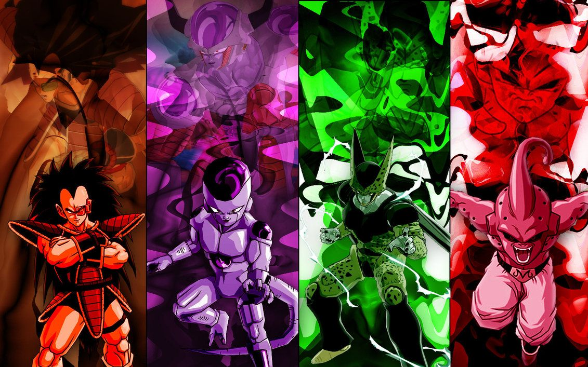
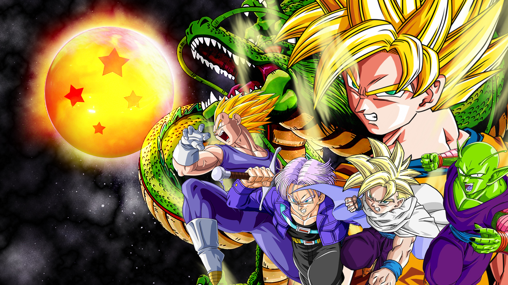
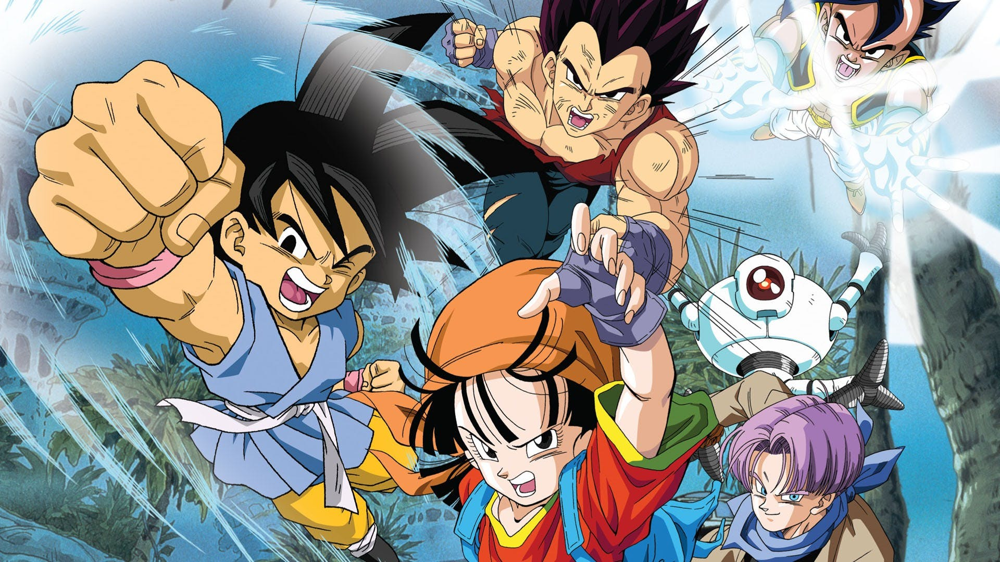
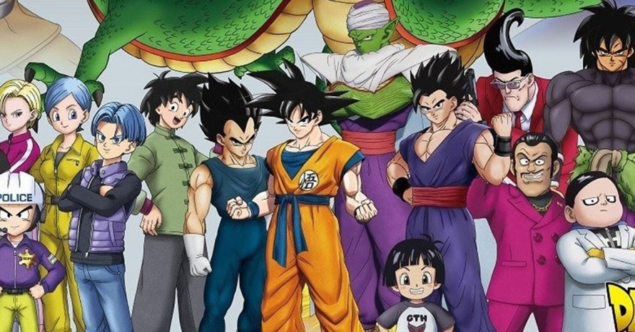
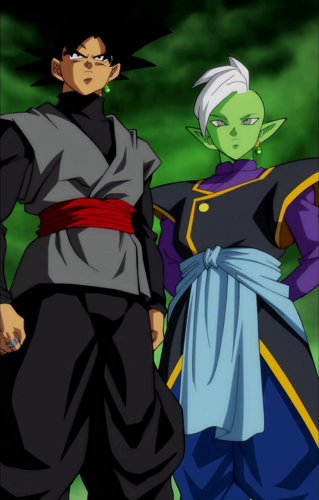

Dragon Ball Clássico

Saga Pilaf
Tudo começou no vale de uma montanha onde morava um rapazinho chamado
Son Goku. Son Goku era um rapaz inculto que nunca tinha visitado nenhuma
cidade, a única pessoa que ele tinha visto na sua vida foi o seu avô Son
Gohan. Mas ele tinha uma coisa em especial, tinha uma cauda e uma força
sobrenatural. Num dos seus dias normais em que ia buscar a sua comida,
quando regressava a casa ouviu um barulho esquisito, um barulho que
nunca tinha ouvido, parou e pôs-se a escutar, o som parecia estar cada
vez mais perto até que certo momento viu um monstro a aproximar-se a
grande velocidade, a tanta velocidade que o Son Goku não se conseguiu
desviar. Mas Son Goku não se deixou abater e pegou no monstro (carro) e
atirou-o assustando uma garota que estava lá dentro. Essa garota pegou
na sua pistola e tentou-o matar, mas Son Goku aguentou e a garota ficou
muito impressionada. Son Goku como nunca tinha visto uma garota pensou
que ela era um monstro, mas a tal garota disse o seu nome e explicou que
era um ser humano. Son Goku para se mostrar simpático pede-lhe para ir a
casa dele e quando chegam a casa, Bulma vê a quarta Dragon Ball. Son
Goku, como pensava que essa Dragon Ball era o seu avô, Bulma conta-lhe a
lenda das Dragon Ball. Nesse mesmo instante três malvados encontram uma
das Dragon Ball e fica todo contente por pensar que vai ser o mais
forte, mas sua aliada explica-lhe que há sete Dragon Ball e quando elas
reunidas, aparecerá o dragão Shen-Long, ao qual se pede um desejo que
ele o realiza, seja ele qual for. Agora voltando a casa do nosso herói.
Como já tinha dito, Bulma contou a lenda a Son Goku e mostrou-lhe as
suas duas Dragon Ball, mas ele não lhe deu a sua. Então foi que Bulma
pensou que se ele viesse com ela ia-lhe dar a Dragon Ball. Então os
nossos dois heróis partem para a aventura. Nas suas aventuras os dois
jovens conhecem Mestre Kame ao lhe devolverem a sua tartaruga perdida,
então ele, um mestre perito em artes marciais oferece uma Dragon Ball a
Bulma e uma nuvem voadora a Son Goku. Também vão conhecer Yamcha, que é
um rapaz que tem medo das garotas, o porco Oolong que amaldiçoava uma
pequena aldeia com os seus poderes de transformação e uma garota chamada
ChiChi e seu pai que moravam num castelo, mas que agora está em chamas,
por isso pai de ChiChi pede a Son Goku que peça ao Mestre Kame para
apagar o incêndio, e é o que ele faz, apaga o incêndio com a famosa
técnica Kamehameha, que a ensina a Son Goku. Quando os nossos heróis
conseguem seis das 7 Dragon Ball vão ao encontro de Pilaf, ele prende os
nossos amigos (Yamcha, Oolong, Bulma, Pual e Son Goku) no seu castelo e
apodera-se das sete Dragon Ball e invoca o dragão, mas nesse instante
Oolong intervém e pede umas calcinhas, o dragão realiza-lhe o desejo e
vai-se embora e o Pilaf não realiza o seu desejo de ser o dono do mundo.
Mas os problemas não acabam, como nessa noite estava lua cheia, Son Goku
transforma-se num gigantesco gorila, mas Pual que também tinha o poder
de se transformar, transforma-se em tesoura e corta-lhe a cauda e é
assim que Son Goku volta ao normal e diz que para ficar mais forte vai
treinar com Mestre Kame enquanto as bolas estão em forma de pedra.

Saga Torneio de Artes Marciais
Son Goku que se despediu dos amigos vai agora em direção à casa de
Mestre Kame para treinar. Quando Son Goku lá chega aparece também um
rapaz careca chamado Kuririn que também quer ser treinado, mas Mestre
Kame só concorda em treiná-los se lhe trouxerem uma garota bonita, é
então que conhecem Lunch, uma garota que quando espirra muda de
personagem. Os treinos com Mestre Kame foram duros, mas valeu a pena,
porque agora os nossos amigos estão prontos para participar no
Campeonato Mundial. Son Goku, Kuririn e Mestre Kame partem para a ilha
das Papaias, que é onde vão encontrar os seus amigos. O Campeonato
correu bem para os nossos dois amigos Son Goku e Kuririn, Son Goku ficou
em segundo, perdeu com um velhote que muitos desconfiavam ser Mestre
Kame, e Kuririn ficou em quarto.

Saga Red Ribbon
Depois de acabar o campeonato Son Goku decide ir procurar outra vez as
Dragon Ball, mas desta vez sozinho. Son Goku na sua busca vai encontrar
o seu velho inimigo Pilaf, mas também vai encontrar um novo inimigo que
está à procura das Dragon Ball, o Red Ribbon, então Son Goku vai ter
várias dificuldades para encontrá-las, mas como Son Goku é muito forte e
já tinha roubado três Dragon Ball da Red Ribbon, eles decidiram
contratar um assassino para matar Son Goku e recuperar as três Dragon
Ball. E é o que ele faz, quando chega perto de Son Goku um amigo dele
oferece-se para combater, então D. Paipai mata-o sem dificuldades
nenhumas, mas depois Son Goku fica furioso e ataca-o, mas em vão, ele
era mesmo muito forte. Quando Son Goku fica consciente decide subir a
uma torre sagrada (Torre de Karin) que tem uma lenda que diz que quem
subir lá acima pelos seus próprios meios encontra deus que lhe dá uma
água sagrada para ficar muito mais forte. Então Son Goku sobe e encontra
um gato em vez de deus e para conseguir a água sagrada precisa de
apanhá-la, mas com o gato a defendê-la. Quando Son Goku finalmente
consegue bebe-la vê que é água normal, mas só o fato de ele ter tentado
apanhá-la ficou muito mais forte, e quando D. Paipai regressa para ir
buscar a bola que se esqueceu, Son Goku mata-o recuperando as Dragon
Ball. Son Goku agora mais forte vai até ao quartel do exército e
destrói-o. Depois de ele ter destruído o quartel aparecem os amigos, Son
Goku pede a Bulma para lhe dizer onde está a última Dragon Ball, mas o
radar não indica nada, então Mestre Kame diz que tem uma irmã bruxa que
é capaz de dizer, então eles vão atrás dela, mas como os seus serviços
eram muito caros eles tiveram que combater contra cinco inimigos e o
quinto inimigo, o homem mascarado vai combater contra Son Goku, que no
fim do combate vai descobrir que é o seu avô Son Gohan. Depois de
vencerem os cinco pedem a Baba, a bruxa, onde está a sétima Dragon Ball,
Baba consulta a sua Dragon Ball e mostra-lhes um carro, Son Goku vai até
ele e encontra Pilaf e os seus aliados depois de um combate Son Goku
reúne as sete Dragon Ball e o dragão ressuscita o pai do seu amigo
índio. Son Goku agora vai ao encontro do Mestre Kame para continuar o
seu treino, mas Mestre Kame explica-lhe que já não tem mais nada para
lhe ensinar e diz-lhe para dar a volta ao mundo a pé para ficar ainda
mais forte e é o que ele faz, despede-se dos amigos e cada um vai
treinar para o segundo Campeonato Mundial de Artes Marciais. Passaram-se
três anos desde que Son Goku foi treinar, agora todos os amigos se
encontram na ilha das Papaias. Neste campeonato vão encontrar um novo
inimigo, o Corvo Genial que foi um antigo amigo de Mestre Kame que
lutava pelo bem mas que agora é um criminoso e os seus dois alunos eram
Chaoz e Tenshinhan. Os nossos amigos vão ter sérios problemas com esses
dois malfeitores porque são muito fortes, tão fortes que um deles até
partiu uma perna ao Yamcha e conseguiu ganhar do famoso Jack Chan, o
vencedor do anterior campeonato. Son Goku vai outra vez à final e
encontra-se com Tenshinhan, mas vai ficar outra vez em segundo lugar,
Tenshinhan é o vencedor, mas esse campeonato ainda serviu para alguma
coisa, Jack Chan (Mestre Kame) conseguiu convencer Chaoz e Tenshinhan a
mudarem para o bem. Depois do campeonato acabar vão todos a um
restaurante jantar mas, Son Goku lembra-se que se esqueceu do seu bastão
mágico e da sua Dragon Ball, mas Kuririn oferece-se para ir buscá-la,
mas como ele estava a demorar muito, Son Goku decide ir lá, então para
seu grande espanto Son Goku encontra Kuririn morto e o árbitro em muito
mal estado, mas conta-lhe que apareceu um monstro verde que levou a
Dragon Ball, Kuririn tentou impedi-lo mas ele era muito forte. Nesse
mesmo instante aparecem os amigos e Son Goku pede o radar das Dragon
Balla Bulma e parte á procura de quem matou Krilin, Mestre Kame tenta
impedi-lo mas não conseguiu. Passado algum tempo Mestre Kame encontra um
papel no chão com um símbolo e é aí que o reconhece, é o símbolo de
Coraçãozinho de Piccolo. Son Goku quando encontrou o assassino de
Kuririn luta com ele, mas em vão, porque Son Goku tinha gasto toda a sua
energia no campeonato. Nesse instante esse monstro chega ao avião onde
estava Piccolo explica-lhe que já conseguiu matar dois dos participantes
do campeonato, Kuririn e Son Goku. Mestre Kame preocupado com o que
podia vir-se a suceder reúne forças com Tenshinhan e Chaoz e vai em
busca das Dragon Ball para poder destruir Piccolo, mas o pior é que ele
também estava à procura delas, por isso numa dessas buscas encontra-se
com Piccolo e para destruí-lo utiliza a mesma técnica que o seu mestre
utilizou para aniquilá-lo, mas em vão, não tem sucesso com essa técnica
e morre. Piccolo chama o dragão sagrado e pede juventude eterna e antes
de o dragão se ir Piccolo mata Chaoz e destrói o dragão. Son Goku que
também combateu contra Piccolo pede a um amigo para levá-lo ao cimo da
torre de Karin, para lá encontrar um mestre que o treina para ele ficar
mais forte do que Piccolo. Quando eles chegam ao cimo da torre, Karin
explica-lhe que já não tem nada para lhe ensinar, mas que há uma água
sagrada que dá uma força incalculável e Son Goku vai a procura dela.
Piccolo agora com a sua força ao máximo começou a aterrorizar a terra,
mas entretanto aparece Tenshinhan que tenta utilizar a mesma técnica que
Mestre Kame utilizou, mas outra vez em vão, entretanto aparece Son Goku
para salvar Tenshinhan. Depois de um combate longo, Son Goku dá o golpe
final a Piccolo, mas este antes de morrer dá à luz o seu sucessor
Piccolo Júnior sem que ninguém percebesse. Son Goku depois de matar
Piccolo vai ao encontro de Karin para lhe dizer quem é o criador das
Dragon Ball para ressuscitar o dragão, para ele também possa ressuscitar
os seus amigos, Chaoz, Tenshinhan, Kuririn e Mestre Kame. Karin diz-lhe
que ele se encontra em cima da torre de Karin (a torre onde eles se
situam), mas para lá chegar precisa do bastão mágico, então Son Goku
lembra-se que o deixou no terreno onde combateu, depois de o ir buscar
vai até ao palácio do Deus, mas quando o vê pensa que é Piccolo, mas ele
explica-lhe que Piccolo e ele são só uma pessoa, mas separada em duas,
uma é completamente má e a outra é completamente boa, Piccolo é a parte
má. Depois de Kami-Samá contar a Son Goku esta história Son Goku
pede-lhe para ressuscitar os seus amigos, mas ele só o aceita se ficar
ali a treinar para depois combater Piccolo Júnior. Son Goku aceita a
proposta e Senhor Popo, o fiel servo do Kami-Samá reconstrói o dragão
para que Kami-Samá o fazer viver. Depois de Son Goku pedir o desejo, os
seus amigos ressuscitam e ficam-lhe muito gratos. Passam três anos os
nossos amigos voltam a encontrar-se todos no torneio, mas desta vez Son
Goku aparece já grande e desta vez a final é entre Son Goku e Piccolo,
mas desta vez Son Goku é finalmente o vencedor e no final do combate Son
Goku deixa Piccolo partir e casa-se com ChiChi.

Saga General Blue
Missão do General Blue
Continuando da Saga Red Ribbon, a saga General Blue foca na batalha de
Goku contra o personagem titular. A saga começa com Goku visitando Bulma
na cidade para consertar seu Radar do Dragão. Os dois então vão procurar
pela Esfera do Dragão mais próxima, que está localizada no oceano.
Enquanto localiza a Esfera do Dragão, Bulma é deixada na ilha enquanto
Goku observa a área. Bulma encontra dois soldados da Red Ribbon que a
ameaçam. Goku então aparece e elimina a ambos.
Caçada de baixo d'água
Goku e seus amigos usam o submarino para entrar numa caverna debaixo
d'água. Mas eles são seguidos por um submarino comandado por General
Blue e seus soldados que atacam com mísseis e torpedos. Sob ataque, Goku
e amigos chegam ao fim da caverna que abre para um esconderijo e uma
base pirata subterrânea. Quando Goku diz a Bulma e Kuririn que ele
encontrou a Red Ribbon antes, Bulma grita com ele por não ter dito
antes. Goku diz a ela que ela nçao havia perguntado. Eles abandonam seu
submarino e fogem.
Goku vs. General Blue
Goku chega bem quando General Blue estava quase matando Kuririn
esmagando sua cabeça com uma pedra. Goku e General Blue lutam, com Goku
dando alguns golpes. General Blue se torna o vencedor graças a sua
habilidade de paralisar seus oponentes. Porém, assim que General Blue
está quase derrotando Goku com um tiro no rosto, um ratinho aparece.
General Blue grita e a paralisia acaba, permitindo que Goku derrote-o
com alguns golpes. A caverna subterrânea desaba, e Bulma, Kuririn e Goku
quase não escapam da caverna caindo. General Blue fica olhando o tesouro
ao seu redor antes que a caverna caia nele. Embora esteja machucado,
Blue consegue sobreviver e sair da caverna a tempo.
Eventualmente, Goku consegue a Esfera do Dragão, mas era a Esfera de
Três Estrelas e não de Quatro Estrelas. Percebendo que Goku não irá
parar de procurar pelas Esferas até que encontre a de seu avô, Bulma diz
com raiva que ela não irá ajudá-lo novamente já que a Red Ribbon está
atrás dele. General Blue se recupera e sai do mar para procurar a
localização de Goku. Um soldado que estava escondendo de Goku, Kuririn,
e Bulma sai de seu esconderijo, mas encontra General Blue, que o executa
por mostrado medo de seus inimigos. Ele então pula de seu avião e cai na
ilha de Mestre Kame. General Blue pega uma corda e controla-a com sua
telecinese, fazendo a corda amarrar Goku, Kuririn, Bulma, Mestre Kame, e
Tartaruga. Ele então deixa uma bomba relógio e dá adeus a eles. Ele
rouba suas Esferas do Dragão e sai num jato.
Vila Pinguim
Lunch chega bem na hora e liberta Goku da corda. Goku joga a bomba no
céu, por pouco não explodindo neles. Goku então segue General Blue no ar
e faz ele cair num estranho lugar chamado Vila Pinguim. General Blue
encontra Suppaman, que acha ser muito forte. General Blue diz que ele
precisa de seu veículo. Suppaman coloca sua roupa de super herói mas
fica com medo de General Blue quando ele amassa uma cabine telefônica
com suas próprias mãos. General Blue então rouba o veículo de Suppaman e
dirige até seu destino. Pouco depois, o carro de Blue tem problemas no
motor, e um menino chamado Obotchaman vem correndo e ajuda General Blue
a consertar seu veículo. General Blue acha o menino atraente. Obotchaman
então sai correndo após consertar o carro. General Blue continua na
estrada até chegar na vila de Arale.
Após ambos General Blue e Goku encontrarem os habitantes da ilha, eles
têm uma luta na casa de Senbei Norimaki. General Blue consegue a melhor
usando sua telecinese em Goku novamente e quase mata Goku, mas Arale o
salva dando uma cabeçada em General Blue e o mandando voando no ar. Após
General Blue cair, ele tem o Radar do Dragão mas perdeu as Esferas. Ele
é visto ligando do Egito para reportar sua derrota temporária ao Quartel
General da Red Ribbon. Ele é então visto andando num camelo com um
guarda sol sob o calor extremo do deserto. Após Turbo Norimaki fazer um
novo Radar do Dragão, Goku agradece essa estranha família e continua sua
jornada.

Saga Comandante Red
A Torre Karin
A saga começa com uma cena de alguns soldados Red Ribbon procurando por
uma Esfera do Dragão que está dentro de um vulcão na Terra Sagrada de
Karin. O vulcão explode e manda a Esfera (de Quatro Estrelas) no campo
dos protetores da terra. Vivendo lá estão Upa e seu pai Bora.
A Força Red Ribbon segue a esfera até o acampamento e manda que lha
entreguem. O pai de Upa procede a eliminá-los e o último soldado
restante (Capitão Yellow) avisa o quartel general. Comandante Red briga
com ele e ele volta. Em desespero, ele sequestra Upa para Bora lhe dar a
esfera, mas ele não conta com Goku aparecendo. Goku o derrota e resgata
Upa. Como agradecimento, Goku recebe a Esfera de Quatro Estrelas, a
Esfera de seu Vovô Gohan.
No mesmo tempo, General Blue está retornando ao Quartel General da Red
Ribbon enquanto Comandante Red está no processo de contratar Tao Pai
Pai. General Blue aparece e vendo ele sem Esferas, Red faz ele lutar com
Tao Pai Pai para se redimir. A luta é rápida, com nenhum dos ataques de
Blue tendo nenhum efeito, até sua técnica paralisante. Acaba com Tao Pai
Pai usando sua língua para apertar um ponto de pressão na cabeça de Blue
e matá-lo. Satisfeito, Comandante Red o contrata para matar Goku e pegar
de volta as Esferas do Dragão. Tao Pai Pai então corta um pedaço de uma
coluna e a usa para voar até a Terra de Karin.
Quanto Tao Pai Pai chega, o pai de Upa pula para proteger Goku mas é
morto por Tao Pai Pai com sua própria lança. Com raiva, Goku desafia Tao
Pai Pai mas é derrotado. Ele tenta usar seu Kamehameha, mas tudo o que
faz é destruir a roupa de Tao PaiPai. Ele então retalia com seu Dodonpa,
que faz Goku desmaiar, mas Tao Pai Pai pensa que ele o matou (a Esfera
de Quatro Estrelas estava dentro da camisa de Goku e o salvou). Tao Pai
Pai pega as outras esferas e sai para pegar uma nova roupa.
Quando Tao Pai Pai chega num alfaiate, ele dá ao homem três dias para
fazer uma nova roupa ou Tao Pai Pai irá matá-lo. Ele então entra num
hotel e chama o Quartel General. Red o informa sobre uma esfera que está
faltando e Tao Pai Pai o diz que ele irá pegá-la quando ele voltar em
três dias (quando sua roupa ficar pronta).
De volta na Terra de Karin, Goku acorda antes que Upa o enterre. Durante
sua conversa, Goku descobre a lenda da Torre Karin. A lenda é que
qualquer um que subir até o topo receberá água sagrada que irá aumentar
seu poder. Isso é perfeito para Goku, que precisa de força para derrotar
Tao Pai Pai. Goku promete usar as Esferas do Dragão para reviver o pai
de Upa e começa subir a Torre.
Ele chega ao topo da torre após uma grande subida e se encontra com
Mestre Karin, que é apenas um pequeno e gordo gato falante. Antes que
Goku possa explicar sua situação, Mestre Karin lê sua mente e entende
por que Goku está atrás da água. Ele dará a água para Goku numa
condição: que Goku consiga tomá-la de Karin. Goku tenta pegar a água,
mas Karin é muito rápido para ele e desvia dele facilmente. Se sentindo
derrotado, Goku descobre que Mestre Kame foi o último a pegar a água de
Karin, a mais de trezentos anos atrás. Não apenas isso, mas levou três
anos para que Mestre Kame conseguisse.
Os dois então vão dormir e vemos uma Semente dos Deuses pela primeira
vez quando Mestre Karin dá uma para Goku restaurar sua energia. Ele
então joga a Esfera de Quatro Estrelas de Goku fora da torre e Goku pula
atrás para pegá-la. Ele desce até a base, pega a esfera, e então sobe de
volta a torre inteira, muito mais rapidamente.
No próximo dia, Goku novamente não consegue pegar a água, mesmo após
ouvir os conselhos de Mestre Karin. É no terceiro dia que Goku pega a
água, quando caiu do bastão de Karin e quase cai no chão. Goku segue
atrás e a pega, usando sua cauda para não cair. Ele bebe a água e
descobre que é apenas água da torneira, e que o poder vem do
treinamento. Satisfeito, Goku agradece Mestre Karin e sai.
Tao Pai Pai finalmente pega sua nova roupa e volta para terminar o
trabalho, mas desta vez é Goku que derrota Tao Pai Pai. Ele tenta seu
poder especial, o Dodonpa, mas Goku consegue bloqueá-lo. Goku então diz
a Tao Pai Pai de sua força da Torre Karin e Tao Pai Pai imediatamente
sobe até a torre para conseguir o poder também. Ele sobe a torre e pega
a água. Mestre Karin o engana com mágica e Tao Pai Pai volta para
terminar a luta, pensando que estava mais forte.
Quando ele volta, ele dá a Goku toda a sua força e parece estar
ganhando. Isto é, até Goku mostrar a ele que não estava lutando a sério.
Goku então começa a derrotar Tao Pai Pai, que finge se entregar para
enganar Goku. Depois, ele joga uma granada em Goku e pula para desviar
da explosão. Goku não é enganado e ele chuta a granada para Tao Pai Pai,
onde ela explode e aparentemente o mata (mas depois ele é mostrado
vivo). Pegando o resto das Esferas do Dragão, Goku vai até o Quartel
General para pegar as outras duas esferas.
Goku vs. A força Red Ribbon
Então vemos um curto segmento com Coronel Violet, a única oficial de
patente alta da Red Ribbon. Ela consegue pegar uma Esfera por uma
recompensa. Durante isso, Bulma constrói uma câmera voadora para seguir
Goku, e ela descobre que ele está indo direto para o Quartel General.
Preocupada com ele, Bulma segue o conselho de Tartaruga e chama Yamcha,
Pual, e Oolong. Yamcha chega de avião e leva o resto do grupo para
salvar Goku.
Enquanto isso, Goku está passando por todo o sistema de segurança da Red
Ribbon, porque eles pensam que é Tao Pai Pai voltando. Quando eles
descobrem que é ele, é tarde demais. Goku pula de sua Nuvem Voadora e
acaba com toda a Força Red Ribbon facilmente. Ele luta até encontrar
Comandante Red, que deixa seu assistente para lutar com Goku. Durante
sua luta, porém, Comandante Red derruba o teto em ambos. Pensando que
estão mortos, Comandante Red revela seu desejo verdadeiro pelas Esferas
do Dragão: ficar mais alto. Conselheiro Black (que não foi morto pelo
teto) volta e mata Comandante Red, com raiva por ter sido enganado. O
ainda-vivo Goku também aparece e derrota Black, que mesmo após usar uma
armadura robô não vence.
Goku pega as duas Esferas do Dragão e começa a sair quando Bulma e os
outros aparecem. Eles ficam surpresos com sua habilidade e felizes que
ele está a salvo. O problema é que o Radar do Dragão não está captando o
sinal da última Esfera do Dragão. O grupo então retorna para a Casa do
Kame, onde Bulma irá consertá-lo.

Saga Vovó Uranai
Os cinco guerreiros da Vovó Uranai
Goku elimina Conselheiro Black atravessando por seu Battle Jacket, que
causa o mecanismo a explodir no ar, matando Black. Goku ainda precisa
encontrar a última Esfera do Dragão para invocar Shenlong e fazer seu
desejo. o Radar do Dragão não mostra sua localização, então eles vão até
o Palácio da Vovó Uranai. Goku também leva Upa porque ele quer usar as
Esferas do Dragão para reviver seu pai, Bora. Quando ele ouve isso, Upa
fica contente. Junto com Yamcha, Kuririn, e Pual, Goku e Upa descobrem
que eles não podem pagar o preço, mas eles concordam lutar com os cinco
guerreiros de Vovó Uranai para que ela os ajude.
O primeiro lutador é Dracula Man, que derrota Kuririn facilmente sugando
seu sangue, mas Upa e Pual se juntam e o derrotam com bafo de alho e
imitação do crucifixo. Yamcha vai depois e luta com um Homem Invisível,
o qual ele derrota com uma ideia de Kuririn, de abaixar a camiseta de
Bulma e expor seus peitos para Mestre Kame ver. Mestre Kame se anima
vendo isso e sangra pelo nariz. Todo o sangue cobre o Homem Invisível,
fazendo com que ele fique visível e vulnerável contra Yamcha. Yamcha
derrota ele, e o grupo movem para seu próximo oponente, uma Múmia. Este
lutador feroz derrota Yamcha facilmente, mas Goku consegue derrotá-lo.
O próximo é o famoso Akkuman, cujo terrível ataque Esplendor Mortal do
Diabo é conhecido por ter matado todos aqueles infelizes de terem sido
atingidos por ele, pois ele amplifica seu mal interior até um nível
explosivo e fatal. Goku, sendo capaz de forçar Akkuman, faz com que ele
use sua técnica mortal, mesmo contra os protestos de Mestre Kame e Vovó
Uranai. Porém, Goku não sofreu nada! Acontece que Goku tem um coração
puro, e não leva muito até que Goku derrote o terrível lutador do
Inferno.
O último oponente é um homem misterioso usando uma máscara de raposa,
que prova ser igual a Goku e até consegue usar o Kamehameha. Goku quase
derrota o homem até que ele aperta sua cauda, o fazendo ficar sem força,
e então ele bate Goku repetidamente no chão; até nisso, Goku se recusa a
desistir. Nesse ponto, Mester Kame, que percebeu algo familiar sobre o
homem, revela que ele é o avô morto de Goku, Gohan. Embora fique chocado
com essa revelação, os outros tentam pensar em algo para ajudar Goku,
mas Kame não deixa eles fazerem, sabendo que Gohan não dará uma punição
maior que a que Goku aguente. Bulma se recusa a ouvir e acusa Gohan de
crueldade, mas naquele momento, Gohan acidentalmente quebra o rabo de
Goku. Livre de sua fraqueza, Goku prepara para atacar, mas Gohan se
rende, que surpreende a todos. Gohan felicita Goku por ser tão forte,
mas o repreende por nunca ter treinado a fraqueza de sua cauda. Por
essas palavras, Goku percebe quem é o homem, e vendo não ter mais
necessidade de se esconder, Gohan tira sua máscara. Feliz de ver seu avô
novamente, Goku chora e pula no colo de seu avô numa reunião emocional.
Após cumprimentar Mestre Kame, Gohan explica que ele usou uma máscara
para testar a força de Goku, pois Goku não iria usar sua força total se
soubesse sua identidade.
Vovó Uranai e Gohan explicam que há dois mundos; o mundo dos vivos e o
Outro Mundo, e ela tem a habilidade de trazer os mortos à vida. Porém,
viagem entre os dois mundos é muito específico; Gohan só é permitido
ficar neste mundo por um dia. Uranai havia previsto que Goku iria até
ela, e Gohan havia se aproximado e perguntado disso, mas ela não sabia
que Goku era neto de Gohan. Goku então mostra a Gohan as Esferas do
Dragão, e explica sua natureza e suas aventuras com Bulma os outros.
Gohan agradece Mestre Kame por ensinar a Goku tudo que ele sabe, mas
Kame diz a Gohan que ele só ensinou o essencial básico, pois ele sabe
tão pouco da força de Goku como o próprio Gohan. Upa se sente culpado
por querer que seu pai reviva quando o avô de Goku está morto, mas Gohan
explica que ele está contente no mundo dos mortos e quer continuar
morto, voltando ao Outro Mundo após um adeus.
A sétima esfera
Goku se encontra com os três rapidamente. Imperador Pilaf então faz um
acordo com Goku que eles irão lutar e o vencedor terá todas as Esferas
do Dragão. Pilaf, Mai, e Shu entram em robôs de batalha para lutar com
Goku. Eles descobriram que a fraqueza de Goku é sua cauda (mas eles não
sabem que ela foi cortada na luta com Gohan) então eles vão por trás
dele mas não a encontram, Imperador Pilaf então pede um tempo para fazer
um plano, eles pensam que ele está escondendo sua cauda em suas calças
então Mai segura Goku e Pilaf usa um lança-chamas para queimar suas
calças para pegar sua cauda mas descobrem que sua cauda foi cortada e
eles não tem chance. Eles então pegam as Esferas e fogem, mas Goku vai
atrás deles e eles lançam um míssil em Goku, mas ele a joga de volta e
eles então desistem das Esferas do Dragão e, porque ele está sem calças,
Goku pega a roupa de Shu e vai em sua Nuvem Voadora para pegar Upa e
reviver seu pai.
Viajando de volta para o túmulo de Bora na Torre Karin, Goku invoca
Shenlong e Upa deseja reviver Bora. Conforme Upa se reúne com seu pai,
Goku pega a Esfera de Quatro Estrelas antes que ela se espalhe com as
outras, e sai.
Treinamento por todo o mundo
Após retornar ao palácio da Vovó Uranai, Mestre Kame lhe dá seu novo
treinamento: viajar por todo o mundo exterior a pé para novos desafios e
experiências. Goku terá que ficar mais forte no mundo real sozinho desta
vez, sem a Nuvem Voadora. Mesmo relutante, Goku vai, sozinho. No
caminho, ele encontra uma garota chamada Chao e salva uma vila do
Guerreiro de Ouro e Guerreiro de Prata, dois criminosos que tinham uma
garrafa que engolia pessoas. Ele também se encontrou ajudando a Escola
Estrela Chin ajudando seu amigo Chin Taiken a derrotar o formidável
oponente Ten Long no torneio do rei.
Goku viaja até uma pequena vila que é aterrorizada por vários demônios.
A princesa da cidade, Princesa Misa, foi sequestrada por estas horríveis
criaturas, e Rei Kress quer a ajuda de Goku. Goku então vai até o Reino
dos Demônios para pegar a garota e luta com Shura, que foi o responsável
por levá-la até lá. Ele salva a princesa com sucesso, e fecha o portal
que deixa os demônios saírem. Depois, ele encontra Tenshinhan e Chaos,
que estão enganando pessoas, fingindo derrotar o monstro Javeleta por
muito dinheiro. Goku eventualmente acaba com sua trapaça e novamente
viaja sozinho.
Três anos depois, ele se encontra com Vovó Uranai novamente. Após o
encontro, é hora de se registrar para o Torneio de Artes Marciais
começar. Goku salva uma raposa verde chamada Konkichi. Porque Goku perde
seu avião enquanto ajuda Konkichi, ele se torna amigo dele e se refere a
ele como seu "irmão", e Goku acaba nadando por toda a Terra para chegar
até o torneio. Mas será que ele chegará a tempo?

Saga Tenshinhan
Prelúdio ao torneio
Pelos últimos três anos Goku e seus amigos estiveram em treinamento
intensivo. Kuririn e Yamcha passaram seu tempo com um sábio mestre de
artes marciais, Mestre Kame. Goku, tendo ficado mais forte que seu
mestre, foi instruído a viajar sozinho pelo mundo, buscando novas
aventuras e desenvolvendo seu próprio potencial.
Quando o tempo do torneio chega, Yamcha e Kuririn chegam para se
registrar no torneio com Bulma, Lunch, Oolong, Pual, Tartaruga e Mestre
Kame para assistirem e torcerem por eles; sem eles saberem, Mestre Kame
se registra secretamente usando o nome falso que ele usou para vencer o
21º Torneio, Jackie Chun.
Enquanto eles estão esperando Goku chegar, eles são confrontados pelo
arquirrival, o Mestre Tsuru. Tsuru irá registrar seus dois alunos,
Tenshinhan e Chaos, em resposta à Goku chegando às finais do torneio
anterior. Tsuru está determinado a se mostrar para Mestre Kame e provar
que sua escola é a melhor. A conversa logo se degrada para troca de
insultos entre os dois mestres antes que Tsuru saia.
Goku chega logo depois e o grupo aproveita uma breve reunião. Goku,
Yamcha, e Kuririn então se trocam para seus uniformes da Escola
Tartaruga e se encontram com Jackie Chun, que Goku promete derrotar
desta vez.
Preliminares
Yamcha e Kuririn estão entre os primeiros combatentes, facilmente
derrotando seus oponentes. Eles são então aproximados por Tenshinhan que
caçoa deles por se sentirem satisfeitos de derrotar lutadores tão
fracos. Isso leva a uma troca de insultos entre Ten e Yamcha até que Ten
é chamado para sua primeira luta; ele prova ser tão bom quanto diz e
derrota seu oponente com uma velocidade que choca a todos.
Goku é o próximo a lutar, seu oponente é Rei Chapa, um lutador que
ganhou um torneio sem nem ser tocado. Goku começa a luta rapidamente,
dando um soco no maxilar de Rei Chapa. Percebendo que Goku é um oponente
forte, Rei Chapa usa sua técnica mais potente, o Hasshu-ken, uma técnica
que mistura velocidade e ilusões óticas para fazer parecer que ele está
lutando com oito braços diferentes. Rei Chapa então lança vários ataques
contra Goku, todos os quais Goku bloqueia; Goku então retalia com um
chute, derrubando Rei Chapa. Com raiva, Rei Chapa corre até Goku e o
ataca, mas Goku desvia do ataque com o Zanzoken, aparecendo acima de Rei
Chapa perto do telhado da arena. Goku então cai diretamente em Rei
Chapa, que fica confiante que o menino não poderá desviar dele enquanto
está caindo. Conforme Rei Chapa pula até Goku, Goku grita bem alto,
flutuando no ar brevemente e desviando o ataque; com um chute rápido,
ele então manda Rei Chapa para fora do ringue, vencendo a luta.
Os lutadores restantes não tem dificuldades em nenhuma luta, de ambas as
escolas, e todos vão para as finais. Todos os finalistas se encontram
para determinar, tirando sorteio, quem lutará contra quem nas
quartas-de-final; e não demora até que insultos sejam trocados entre
Yamcha e Ten, e Kuririn e Chaos. Quando os sorteios são tirados, Ten faz
Chaos manipular os números; ele seleciona para lutar com Yamcha para
resolver seu conflito e Chaos escolhe lutar com Kuririn. Descobrindo que
Homem-Lobo (um lobo que se transforma em homem na lua cheia) tem um
rancor de Jackie Chun, ele também faz os dois lutarem.
Quartas-de-final
Yamcha vs. Tenshinhan
A luta começa rapidamente com Yamcha se lançando contra Tenshinhan; eles
lutam um pouco com Ten lançando o primeiro golpe e Yamcha retaliando com
seu próprio ataque. Yamcha então usa seu Novo Rouga Fufuken e lança
vários ataques contra Ten, que resiste cada ataque e contra-ataca com um
forte soco no estômago de Yamcha, derrubando-o.
Yamcha decide usar toda sua força na batalha e usa o Kamehameha,
surpreendendo Kuririn e Kame. Ten vê o ataque e prepara uma defesa
contra ele, refletindo o ataque de volta a Yamcha quando chega perto
dele. Assustado, Yamcha pula no ar para desviar de seu ataque e,
distraído, não percebe Ten atrás dele. Ten atinge Yamcha com um forte
chute e o derruba no chão da arena. Não satisfeito com apenas ganhar a
luta, Ten dá uma joelhada conforme ele cai, quebrando a perna de Yamcha.
Goku, Kuririn, e Pual entram no ringue para checar seu amigo, Pual logo
se transforma num carpete mágico para levar Yamcha até o hospital; Bulma
e Lunch também saem para ir com ele. Goku promete vingança em Ten pela
brutalidade desnecessária, mas Ten não liga.
Homem-lobo vs. Jackie-chun
Quando Homem Lobo entra no ringue, ele diz que seu desejo de vingança
contra Jackie Chun é porque ele destruiu a lua durante o último Torneio
de Artes Marciais; sem a lua, Homem-Lobo não pode se transformar em
humano e então não consegue arrumar uma namorada.
Homem-Lobo ataca Jackie Chun furiosamente, mas Jackie Chun é capaz de
desviar dele e contra-atacar facilmente, seu nível de poder é tão
diferente que Jackie Chun nem presta atenção na luta, e prefere ficar
olhando as mulheres da audiência. Após Homem-Lobo ser chutado do lado da
arena, ele pega uma faca e corre até Jackie Chun, mas Jackie Chun pega a
faca facilmente e novamente joga Homem-Lobo do outro lado da arena.
Se sentindo mal com seu oponente, Jackie Chun decide transformá-lo de
volta num humano. Antes de fazer isso, ele faz graça dando a Homem-Lobo
várias ordens como se faz com um cachorro. Homem-Lobo obedece
instintivamente no começo, mas depois percebe e fica com raiva. Jackie
Chun termina a partida jogando um osso para fora da arena, o que
Homem-Lobo pega rapidamente e se desqualifica. Embora a luta esteja
oficialmente acabada, Homem-Lobo volta no ringue e tenta atacar Jackie
Chun novamente, mas é parado quando Jackie Chun usa um ataque
paralisante para fazê-lo parar.
Jackie Chun então chama Kuririn no ringue e o faz ficar na frente de
Homem-Lobo com suas costas para ele, mostrando sua cabeça careca; Jackie
Chun então hipnotiza Homem-Lobo em pensar que a cabeça de Kuririn é na
verdade a lua. Homem-Lobo então se transforma em humano e, feliz,
agradece Jackie Chun antes de correr de felicidade.
Kuririn vs. Chaos
Quando a luta começa, Chaos surpreende Kuririn com seus movimentos
não-naturais, movendo pelo ringue sem mover seu corpo. Chaos dá o
primeiro chute, lançando Kuririn no ar; quando ele move para um outro
ataque, Kuririn desvia e após cair dá seu próprio ataque, que Chaos é
capaz de desviar graças a sua habilidade de se controlar no ar.
Kuririn então pula em Chaos e, no último segundo, usa o Zanzoken para
sumir, surpreendendo Chaos. Ten então avisa Chaos que Kuririn está a sua
esquerda, mas Chaos não sabe qual é a esquerda até que seja tarde, e
Kuririn dá um golpe poderoso nele. Eles então lutam um pouco até que
Chaos sobe até o ar. Kuririn não pula atrás dele pois ele não sabe voar,
e arriscaria ser jogado para fora do ringue.
Enquanto está a salvo no ar, Chaos começa a lançar vários Dodonpas em
Kuririn, o que ele desvia. Goku reconhece a técnica, pois Tao Pai Pai
também usou nele, e surpreende Tenshinhan quando ele diz; e Ten pergunta
a Goku como ele sabe esse nome, e Goku diz a ele que ele matou Tao Pai
Pai algum tempo atrás. Ten fica com raiva e avisa seu mestre; e Jackie
Chun, também surpreso que Goku foi capaz de matar Tao Pai Pai, informa à
Goku que Tao era o irmão mais novo de Mestre Tsuru.
De volta no ringue, Kuririn ainda está desviando do ataque de Chaos; ele
percebe que a única chance que ele tem é retaliar e tenta usar o
Kamehameha. Na sua primeira tentativa, Kuririn consegue criar apenas um
pequeno raio de energia; mas ainda fica excitado pois agora acredita que
ele pode conseguir. No estádio, Mestre Tsuru fica com raiva após saber
que seu irmão está morto, acreditando que a única maneira de Goku tê-lo
morto era algum tipo de truque; e então ordena a Chaos que mate Kuririn
em retribuição.
Chaos prepara um Dodonpa poder total enquanto Kuririn prepara um
Kamehameha. Jackie Chun grita de onde ele está assistindo a luta que o
Kamehameha não é tão forte quanto o Dodonpa. Chaos lança seu ataque e
Kuririn, ao invés de contra atacar, pula no ar para desviar e então
lança seu ataque, atingindo Chaos de perto. Sendo que foi seu primeiro
Kamehameha que Kuririn usou, não foi muito potente e Chaos consegue se
recuperar antes de cair fora do ringue.
Kuririn lança um novo ataque contra Chaos e o ataca com um poderoso
chute. Conforme ele se move para seu segundo ataque, Kuririn fica
paralisado e sente dor intensa da técnica de Telecinese de Chaos;
enquanto Kuririn está paralisado, Chaos começa a chutá-lo. Vendo Chaos,
Kuririn percebe que ele precisa usar suas mãos para manter o ataque e
pergunta para ele questões de matemática simples, como 3+4. Chaos
precisa usar seus dedos para contar, e o ataque acaba, permitindo que
Kuririn o atinja. Chaos volta a sua técnica e também pergunta a Kuririn
uma questão de matemática, que para sua surpresa, Kuririn responde
corretamente. Kuririn então pergunta a ele outra questão simples de
matemática e novamente Chaos termina o ataque; Kuririn novamente dá um
poderoso golpe, desta vez derrubando Chaos e mandando-o para fora do
ringue.
Goku vs. Pamput
A última rodada das quartas-de-final é Goku contra Pamput, um lutador
arrogante que já ganhou dois outros torneios de luta. Antes da luta
começar, Pamput tenta intimidar Goku dando um soco que intencionalmente
erra por pouco. Quando Goku não se impressiona, Pamput dá uma
demonstração de sua proeza, dando vários golpes rápidos e destruindo
parte da arena com uma cotovelada. Ele então diz que só precisa de três
segundos para derrotar Goku. Quando a luta começa Pamput corre
diretamente para Goku, mas seu ataque é bloqueado e Goku dá uma
cotovelada no peito, derrotando-o com aparentemente um golpe. Tenshinhan
nota que não foi um golpe, mas três muito rápidos e fica impressionado
com a velocidade de Goku.
Semi-finais
Jackie Chun vs. Tenshinhan
Ten e Chun começam a luta com uma série de golpes e lançamentos com
nenhum dos oponentes dando um golpe no outro. Jackie Chun tenta o
Zanzoken, criando oito cópias de si mesmo ao redor de Ten, mas com seus
três olhos, ele vê o verdadeiro e dá um chute forte em Jackie,
mandando-o contra uma das paredes.
Jackie Chun determina que ele não pode brincar com Ten e tira sua
camiseta, preparando para usar todo o seu poder. Tenshinhan então corre
até ele, mas Jackie Chun pega suas mãos e dá uma joelhada em sua barriga
antes de socá-lo. Ten corre novamente, desta vez derrubando Jackie Chun
com seu joelho e socando-o no chão. Jackie Chun se levanta e o golpeia
novamente. Ambos lutadores param para respirar, reavaliando o outro;
Tenshinhan percebe que Jackie Chun é mais forte que o próprio Mestre
Tsuru.
Jackie Chun pergunta por que Ten está servindo um mestre incorreto e Ten
responde para Jackie Chun se calar. Ele então usa uma de suas técnicas
secretas, o Taiyoken, e deixa Chun cego por algum tempo até que lhe dá
uma joelhada na nuca de Jackie. Ten pensa que colocou Jackie em coma com
esse ataque, mas Jackie Chun se levanta após cinco segundos. Jackie
continua a dizer para Ten, que é melhor viver e lutar para a causa do
bem do que pelo mal, e encoraja Ten a abandonar Mestre Tsuru. Tsuru ouve
esses comentários e logo percebe que Jackie Chun é na verdade Mestre
Kame disfarçado e avisa para Ten telepaticamente. Ten decide surpreender
Kame e lança um Kamehameha nele, tendo aprendido o ataque observando
Yamcha fazê-lo. Mestre Kame reflete o ataque para salvar a plateia atrás
dele e, com um último pedido para não seguir o caminho do mal, Mestre
Kame pula para fora do ringue, terminando a partida com Tenshinhan como
vencedor.
Tenshinhan não fica satisfeito com o resultado e confronta Mestre Kame
após a luta. Sua primeira questão é por que Mestre Kame se disfarçou, o
qual Kame responde que caso um de seus alunos vença o torneio, ele não
quer que eles se achem bons pensando que são melhores que seu mestre, e
por isso os melhores do mundo. Tenshinhan então diz que Mestre Kame
desistiu porque pensa que um de seus alunos é forte suficiente para
derrotá-lo, e diz que ele irá derrotar todos no fim. Mestre Kame diz que
nenhum de seus alunos acha que sua vitória é garantida e crê que Ten
também pensa assim. Mestre Kame também admite que caso eles continuassem
a lutar, Ten teria vencido no fim.
Goku vs. Kuririn
No começo da luta Goku pula no ar e Kuririn o segue; imitando
Tenshinhan, Kuririn usa a luz do sol refletida na sua cabeça careca para
cegar Goku temporariamente e dá um chute nele, lançando Goku de volta no
chão da arena. Goku se recupera e pula até Kuririn, que ainda está
caindo, mas Kuririn desvia do ataque prendendo a respiração e inflando
como um balão, fazendo com que Goku perca seu timing. Goku decide
mostrar a Kuririn seu próprio truque e corre até ele enquanto prepara um
Kamehameha; ele pula no último segundo, fica de costas para Kuririn e
lança o ataque, se jogando até Kuririn, dando-lhe um soco seguido por
uma poderosa joelhada no estômago de Kuririn. Kuririn se recupera do
ataque e corre até Goku, mas Goku desvia e lhe golpeia na nuca.
Sabendo que ele não pode derrotar Goku numa luta, Kuririn lança um
Kamehameha nele. Goku bloqueia facilmente o ataque, mas foi uma
distração e Kuririn a usa para ir atrás de Goku e pega sua cauda. Goku
cai até que o juiz conta até 9 quando ele pula e joga Kuririn no chão;
durante seu treinamento, a cauda de Goku não tem mais um ponto fraco.
Kuririn então finge ver algo e golpeia Goku quando ele olha na mesma
direção; Goku decide que se tudo é justo, ele irá usar seu próprio
truque e aparentemente desaparece. De onde ele está vendo a luta,
Tenshinhan vê que Goku está se movendo extremamente rápido para parecer
invisível. Goku reaparece diretamente na frente de Kuririn e o derruba
do ringue com o que pareceu ser um único golpe, mas Tenshinhan viu que
foram oito golpes e um chute.
Luta final: Goku vs. Tenshinhan
A luta entre Tenshinhan e Goku começa rápida. Tenshinhan parece ter uma
vantagem, derrubando Goku com um Dodonpa, percebendo seu Zanzoken,
derrubando-o com vários socos, e então derrubando-o com o Haikyuken.
Goku parece não ser afetado pelos ataques, e então declara que ele
lutará com Tenshinhan com toda sua força. Ele começa com uma rápida
série de ataques, quase terminando com um Kamehameha, mas muda de ideia
no último segundo, sabendo que Tenshinhan poderia simplesmente
refletí-lo.
A luta continua com um curto duelo de Zanzoken, cada lutador usando uma
técnica para desviar um ataque e tentar outro, com Goku dando o golpe
final. Tenshinhan tenta o Taiyoken novamente, mas Goku o engana, pois
pegou óculos escuros após descobrir a técnica da última luta de
Tenshinhan. Conforme Goku vai devolver os óculos para Kame, ele é
atingido pelas costas por Tenshinhan, lançando-o na parede.
Quando os combatentes se atacam novamente, Goku fica paralisado,
permitindo que Tenshinhan o golpeie. Isso acontece mais duas vezes, e
Tenshinhan ataca Goku, mas percebendo que estava ganhando muito
facilmente, descobre que Chaos está usando seus poderes para paralisar
Goku. Tenshinhan diz telepaticamente a Chaos para parar de interferir em
sua luta, pois ele quer derrotar Goku numa luta justa. Isso deixa Mestre
Tsuru com raiva, que ordena a Tenshinhan que mate Goku. Tenshinhan diz
que ele não irá matá-lo, porque ele não quer ser desqualificado, e que
ele não quer mais ser um assassino como Tao Pai Pai. Mestre Tsuru fica
com raiva e ordena a Chaos para matar Tenshinhan e Goku. Quando Chaos
recusa, Tsuru ameaça matá-lo. Mestre Kame para tudo lançando Tsuru para
fora do estádio com um Kamehameha, permitindo que Ten e Goku voltem a
lutar.
Tenshinhan tenta uma de suas técnicas "ás na manga", e usa uma Técnica
dos Quatro Braços para fazer crescer mais dois braços. Goku contra-ataca
usando a técnica de oito braços que ele aprendeu de sua batalha com Rei
Chapa, e Ten fica pressionado para defender.
Tenshinhan logo perde os braços adicionais e decide usar seu ataque
final, o Kikouhou. Ele avisa a Goku para desviar do ataque, forçando-o
para fora da arena, pois não tem jeito de sobreviver após ser atingido
por ele. Tenshinhan flutua alto no ar e usa o ataque, destruindo toda a
arena. Goku desviou do golpe, pulanod incrívelmente alto no ar.
Tenshinhan está convencido que irá vencer neste ponto, pois ele pode
levitar e Goku não pode. Goku usa um último Kamehameha e, ao último
momento, vira, usando o ataque para lhe mandar como um foguete até Ten.
Ambos os lutadores c aem no chão, com Goku um pouco na frente. Ele tenta
usar outro Kamehameha menor para ficar um pouco mais alto, mas é
atingido por um caminhão e cai primeiro. Tenshinhan cai um instante
depois, vencendo o torneio.

Saga Piccolo-Daimaoh
A ameaça de Piccolo Daimaoh
Goku, Kuririn, Tenshinhan e todos os outros vão jantar para celebrar a
sua vitória no Torneio de Artes Marciais (que aconteceu durante a Saga
Tenshinhan). Goku percebe que ele deixou sua Esfera de Quatro Estrelas e
seu Bastão Mágico no estádio, então Kuririn volta para buscá-los. Algum
tempo depois dele sair, Goku sente que algo está errado e logo corre
para encontrá-lo. Ele encontra Kuririn morto e o Anunciador do Torneio
ao seu lado.
O juiz tremendo explica que um terrível monstro (depois conhecido como
Tamborim) matou Kuririn e então voou. Ele diz que o monstro também pegou
uma lista de todos os lutadores do torneio e o Radar do Dragão de Goku.
Os amigos de Goku logo o seguem e também encontram o corpo de Kuririn.
Com raiva, Goku pega seu Bastão Mágico, pega o Radar do Dragão de Bulma,
e segue em busca do assassino apesar das ordens de Mestre Kame de parar,
usando o Radar em conjunção com sua Esfera do Dragão roubada para
encontrar o assassino. Oolong encontra um pedaço de papel com o símbolo
do assassino escrito, e Kame fica aterrorizado quando reconhece o
símbolo e a morte de Kuririn como trabalho do malvado Piccolo Daimaoh.
Mestre Kame diz aos outros de um tempo quando o mundo foi de repente
dominado por terríveis e aparentemente invencíveis monstros, que faziam
caminho pela civilização, destruindo tudo em seu caminho. Eventualmente
essas criaturas chegaram no dojo de Mestre Mutaito, onde numa batalha
todos os alunos lutaram com os monstros. Porém, apenas poucos monstros
foram mortos enquanto apenas dois alunos sobreviveram, Mestre Kame e
Mestre Tsuru. Kame explica que os monstros prepararam um raio de energia
lançado pela boca e lançaram nos dois, mas eles concentraram sua energia
num escudo e lançaram o ataque de volta, destruindo-os.
Após isso, Piccolo Daimaoh apareceu para eles e mandou-nos voando no
dojo com um único ataque na frente deles. Mestre Mutaito entra no meio,
mas Piccolo Daimaoh o derrota facilmente, humilhando-o na frente de seus
alunos e deixando-o morto. Após ser curado, Mutaito deixou a ambos;
enquanto Tsuru perdeu sua fé, Kame não perdeu. Conforme a ameaça de
Piccolo continuou, Mestre Kame se refugiu nas montanhas, onde anos
depois Mutaito voltou a ele, com uma panela de arroz elétrica.
Mutaito treinou duro e eventualmente usou o ataque suicida Mafuba, para
prender Piccolo Daimaoh na panela. Após jogar a panela no oceano para
que ninguém a encontre, Mestre Kame fundou a Escola Tartaruga baseada
nos ensinamentos de Mutaito. Após um tempo, a civilização foi
reconstruída, e a humanidade esqueceu da ameaça de Piccolo Daimaoh.
Porém, Imperador Pilaf encontrou a panela e soltou Piccolo Daimaoh e
pediu ao Namekuseijin ajuda para encontrar as Esferas do Dragão, mas
Piccolo tinha seus próprios planos e instruiu a Tamborim que matasse
todos lutadores dos torneios anteriores, vendo eles como ameaças em
potencial.
Goku finalmente encontra Tamborim e luta com ele, mas como Goku ainda
está fraco de sua luta com Tenshinhan, Tamborim o derrota facilmente e
destrói a Nuvem Voadora, continuando a bater em Goku e jogando-o no
chão, após pensar que ele havia morrido. Goku acorda cansado e com fome
no meio de uma floresta, e logo encontra um grande peixe cozinhando no
fogo. Depois, ele é confrontado por Yajirobe, após ele ser acusado de
comer o peixe de Yajirobe. Eles então têm uma rápida luta onde eles
estão bem equiparados, com Goku surpreso que Yajirobe é forte o
suficiente para receber seus golpes e Yajirobe também surpreso que Goku
é tão rápido e forte. Enquanto isso, Tamborim mata Bactéria, Nam, Rei
Chapa, Pamput, Homem-Lobo, Giran, e outros lutadores.
Piccolo Daimaoh então cria outro filho chamado Címbalo cujo propósito é
encontrar as Esferas do Dragão. Yajirobe tem uma, e isso leva a Címbalo
atacá-lo. Yajirobe o mata, e por causa de sua fome, ele o come, dizendo
que sua carne é excelente. Tamborim, que estava se preparando para matar
Yamcha, é ordenado por Piccolo Daimaoh para atacá-los em vingança à
morte de Címbalo, mas neste ponto Goku está com sua força total e mata
Tamborim facilmente com seu Kamehameha, completamente incinerando-o.
Yajirobe fica com raiva, pois ele queria comer outra criatura da quele
tamanho.
Enquanto isso, Mestre Kame, Chaos, e Tenshinhan buscam as Esferas do
Dragão. Piccolo Daimaoh revela a Pilaf que ele quer usar o dragão
Shenlong para ficar jovem, e então dominar a Terra, prometendo a Pilaf
um quinto de seu reino. Com raiva por causa da morte de seus filhos,
Piccolo vai lutar com Goku sozinho, enquanto Kame e os outros encontram
a Esfera de Três Estrelas numa caverna, e vão para onde Goku e Piccolo
estão lutando. Apesar de sua idade, Piccolo tem a vantagem, e logo Goku
é derrotado facilmente. Piccolo vê que o coração de Goku parou e acha
que ele morreu. Ele então pega a Esfera do Dragão de Goku e sai. Porém,
após Piccolo sair, Yajirobe (que estava escondido) descobre que o
coração de Goku apenas parou momentaneamente, e que o jovem guerreiro
ainda vive.
Mestre Kame atrai Piccolo com duas Esferas do Dragão e o confronta, mas
é facilmente derrotando; sabendo que não é páreo para Piccolo Daimaoh,
Mestre Kame apenas fica de pé e recebe os ataques de Piccolo. Piccolo
não reconhece Kame até que ele menciona Mutaito; após isso ele fica com
muito medo, percebendo o que Kame irá fazer. Após usar uma cápsula para
criar uma panela de arroz elétrica, Mestre Kame usa o Mafuba e quase
consegue prender Piccolo Daimaoh novamente, mas erra a abertura da
panela no último segundo. Antes de morrer por causa do ataque, Mestre
Kame diz a Piccolo que ele ainda não venceu e que alguém conseguirá
terminar o que ele não conseguiu. Com ninguém mais para pará-lo
(Tenshinhan não pode fazer nada porque Mestre Kame o paralisou
anteriormente, Chaos é muito fraco, e Goku está muito machucado),
Piccolo Daimaoh invoca Shenlong. Chaos tenta pará-lo desejando outra
coisa, mas é morto por Piccolo antes que ele termine a frase. Piccolo
Daimaoh deseja ser jovem novamente, o que resulta em seu poder crescendo
bastante.
O cerco de Piccolo-Daimaoh
Piccolo Daimaoh se tornou jovem, e como um teste de seu novo poder, ele
mata Shenlong, que causa as Esferas do Dragão a reverterem a pedras
comuns. As Esferas do Dragão não existem mais, e então nenhuma das
pessoas recentemente mortas (como Kuririn, Mestre Kame, e Chaos) podem
ser revividas.
Goku pede a Yajirobe para levá-lo à Torre Karin, para conseguir Sementes
dos Deuses. Por sorte, Yajirobe tem seu próprio carro, numa cápsula.
Goku tenta subir a torre, mas por causa de seus ferimentos, ele pede a
Yajirobe que o carregue, e eles sobem a torre. O rejuvenescido Piccolo
Daimaoh está preocupado em começar sua conquista do mundo e começa
tirando do trono o Rei da Terra e roubando seu título, fazendo de
Piccolo o rei da Terra, mas não antes de trair sua promessa a Pilaf e
chutá-lo para fora de sua nave.
Enquanto isso, Tenshinhan vai para longe para treinar e aprender a
técnica Mafuba para prender Piccolo Daimaoh. Goku finalmente chega ao
topo da torre Karin com a ajuda de Yajirobe, e ouve notícias chocantes:
Goku agora é mais forte que Mestre Karin, e então ele não pode ajudá-lo
exceto dando-o Sementes. Porém, ele menciona a Água dos Deuses, que
diferente da Água Sagrada, realmente aumenta os poderes.
Yajirobe e Goku entram num pote e viajam por um labirinto de gelo até
uma caverna, lutando com alguns monstros de gelo que se parecem com
estátuas. Eles também encontram ilusões da Casa do Kame e todos os
amigos de Goku, que tentam enganar Goku, mas Goku não se engana.
Finalmente, eles encontram o Guardião da Água dos Deuses: a própria
Escuridão, e ela permite que Goku beba a água: porém, ela diz a Goku que
se ele não possuir força de vontade, ele irá morrer após bebê-la. Goku
usa a chance, a bebe, e funciona: após uma noite de sofrer por causa da
dor causada pela água, ele fica mais forte que Piccolo Daimaoh.
Piccolo Daimaoh está aproveitando após declarar as novas leis de seu
reino, incluindo que todos devem roubar, a polícia não existe mais, e
ninguém pode falar as palavras "paz" e "justiça", ou Piccolo ficará com
raiva. Ele também cria uma loteria para determinar qual província será
atacada: a primeira província será onde os pais de Bulma moram, mas por
sorte, Tenshinhan dominou o Mafuba e está a caminho para lutar com
Piccolo Daimaoh e Goku (que recebeu uma nova Nuvem Voadora de Mestre
Karin) voa o mais rápido que pode para desafiar Piccolo a uma revanche.
Tenshinhan chega no palácio primeiro, e luta com outro filho de Piccolo:
Tambor. Tambor é muito forte, e derrota Tenshinhan facilmente.
Desesperado, Tenshinhan faz o Mafuba em Piccolo, mas Tambor pula no meio
e é preso. Antes que ele seja selado, Piccolo destrói a panela, salvando
Tambor da prisão. Naquele momento, Goku chega, e Tenshinhan fica
aliviado a saber que Goku ainda está vivo. Goku percebe que Piccolo
Daimaoh voltou à sua juventude e poder máximo, e Piccolo confirma antes
de mandar Tambor atacar Goku. Tenshinhan diz a Goku fugir, mas Goku
simplesmente chuta Tambor tão forte na cara que seus olhos pulam,
matando-o.
Luta final: Goku vs. Piccolo Daimaoh
Tenshinhan fica surpreso, chocado de como Goku ficou mais forte da
última vez que ele o viu, pois ele matou Tambor com um único chute.
Piccolo diz a Goku que ele não tem tempo para ele porque ele está indo
para a Capital do Oeste, e que ele terá que ser rápido.
Piccolo Daimaoh ataca Goku agressivamente, mas Goku levanta seu braço e
o bloqueia. Chocado, Piccolo dá um soco poderoso em sua face, mas Goku é
mais rápido e segura seu braço e o joga num dos prédios do castelo.
Piccolo Daimaoh se levanta das ruínas do prédio e lança vários raos de
energia nele, e em um ponto Goku pula pelo corpo de Tambor, causando-o a
ser explodido. Piccolo então usa um ataque aéreo, voando alto, e logo
ele abaixa para atacar Goku e lança um Makosen ainda mais forte que a
última vez. Goku rapidamente desvia e Picoclo vê a mesma abertura de sua
primeira luta, e e lança um ataque mais forte nele, mas desta vez Goku o
bloqueia e cai, sem nenhum dano.
Tenshinhan fica ainda mais surpreso pois Goku bloqueou todos os ataques
de Piccolo. Goku diz a Piccolo que ele irá fazê-lo pagar. Naquele
momento Goku desaparece, e então reaparece na frente de Piccolo,
lançando um poderoso soco em sua face. O soco poderoso manda Piccolo
voando na direção de Piano, esmagando Piano com a queda. Piccolo fica
com raiva e corre até Goku, no começo Goku consegue desviar dos ataques,
mas por fim Picoclo consegue atingir Goku. Goku se levanta rapidamente e
ataca de volta com vários socos e chutes, aparentemente derrotando-o.
Piccolo não sofreu nenhum dano, e diz a Goku que apesar do fato que irá
diminuir sua vida, ele irá aumentar seus poderes até o máximo.
Piccolo começa a aumentar seus poderes, e o chão começa a tremer e se
quebrar, e Tenshinhan começa a ter problemas a ficar em pé, mas Goku não
é afetado. O corpo de Piano é esmagado, e logo Piccolo Daimaoh começa a
brilhar. Piccolo termina de aumentar seus poderes e ataca Goku, dando um
soco poderoso em seu corpo que o manda para o chão tão forte que cria
uma grande createra. Piccolo e Tenshinhan pensam que Goku morreu, e
Tenshinhan se prepara para lutar, mas eles ouvem uma voz. Goku está
vivo, e lança um Kamehameha em Piccolo. Piccolo percebe e tenta
bloqueá-lo, mas Goku consegue desviar o ataque e o manda por trás, e
Piccolo é atingido pelo golpe. Subsequentemente, Goku e Piccolo
continuam a lutar.
Enquanto isso, o Rei da Terra observa a luta surpreso, e quer ficar e
ver Piccolo ser derrotado, mas um de seus guardas o convence que eles
devem ir para um lugar seguro enquanto têm a chance. Piccolo é jogado em
outro prédio, se levanta e joga um pedaço em Goku, e ele bloqueia.
Piccolo então usa seu olhos a laser para queimar a perna de Goku, mas
ele responde que só precisa de uma perna para derrotá-lo. Piccolo ri, e
prepara outro ataque, mas Goku usa seu Bastão Mágico e o manda estender,
lançando-o voando até Piccolo. Goku usa sua perna boa para dar uma
joelhada na cara de Piccolo.
Na televisão, as pessoas dizem que há uma grande batalha nas ruínas do
Castelod o Rei entre Piccolo Daimaoh e "um jovem homem careca, e um
pequeno garoto". Bulma se pergunta se Goku está vivo, mas Yamcha acha
que ele morreu. Bulma então se lembra de como Vovó Uranai lhes disse que
Goku se tornaria um grande herói. Os dois se convencem que é Goku e que
ele salvará o mundo de Piccolo.
Piccolo fica com raiva do ataque de Goku e diz que o Bastão Mágico é
apenas uma muleta. Piccolo então aumenta seu tamanho, fazendo-o ainda
maior que antes, e nem Goku nem Tenshinhan sabem o que está acontecendo.
Piccolo começa a lançar ataques de energia que Goku bloqueia com seu
próprio ataque. Ele eventualmente lança um no Bastão Mágico, jogando-o
para longe, e então usa sua Onda Explosiva Demoníaca, que cria uma
explosão tão grande quanto uma bomba nuclear. A TV perde o sinal
enquanto o Rei da Terra e seus dois guardas escapam por pouco do ataque.
Piccolo Daimaoh fica chocado ao ver que Goku sobreviveu o ataque;
Tenshinhan havia voado com ele até o ar para escapar do ataque. Goku diz
que ele pode lutar sem a ajuda de Ten (que está completamente sem
energia). Piccolo tenta usar outra Onda Explosiva, Goku o tenta parar
com um soco, mas o soco não é forte o suficiente para parar Piccolo pois
Goku não conseguiu andar direito com apenas uma perna. Piccolo termina o
ataque, atingindo Goku e lançando Ten a vários metros.
Piccolo Daimaoh, agora exausto, acha que destruiu Goku mas então ouve
sua voz de dentro da massiva cratera. A Nuvem Voadora leva Goku de volta
e ele prepara para atacar novamente, mas Piccolo está muito exausto para
continuar, mas ele logo se aproveita da situação e segura Ten por sua
cabeça e começa a esmagá-la, dizendo que se Goku não se render ele irá
matar Ten. Tenshinhan diz a Goku para esquecer dele e destruir Piccolo,
enquanto Piccolo esmaga sua cabeça ainda mais.
Enquanto isso, Yamcha, Bulma, e Lunch pousam e exploram as ruínas da
cidade para chegarem até onde a luta está acontecendo. Em outro lugar,
Yajirobe decidiu vir ver Goku lutar, mas pensa outra vez quando vê a
cratera gigante. Yajirobe então começa a debater sozinho se vai ou não
após lembrar que Goku prometeu a ele um jantar grátis após levá-lo até a
Torre.
Goku finalmente diz que ele fará o que Piccolo quiser. Piccolo diz a ele
não se mover, e pega uma pedra, e com seu poderoso sopro a lança para
Goku, atingindo-o no braço e quebrando-o. Goku segura seu braço com dor
e diz a Tenshinhan para perdoá-lo mas ele não pode deixar Piccolo fazer
isso. Piccolo pergunta a ele se ele liga para a vida de Tenshinhan e
Goku diz que ele irá revivê-lo com as Esferas do Dragão. Ouvindo isso,
Piccolo ri dele e diz que ele já matou Shenlong, chocando e deixando
Goku com raiva. Sem outra maneira de salvar Ten, Goku fica parado, e
Piccolo pega outra pedra e a joga na outra perna de Goku, também
quebrando-a.
Satisfeito que Goku não pode se mover, Piccolo derruba Tenshinhan e diz
que ele irá cuidar dele depois e matar Goku agora. Piccolo Daimaoh voa
até o céu e começa a ir até Goku com velocidade. Com seu braço direito
ileso, Goku lança um Kamehameha para baixo que o manda até Piccolo numa
velocidade supersônica.
Goku se prepara para usar toda sua força neste soco, mas Piccolo se
prepara para bloqueá-lo. Goku aparece e dá o soco, de repente uma imagem
do Oozaru aparece com Goku conforme ele voa até Piccolo. Uma grande
explosão acontece e Tenshinhan olha para cima; Goku abriu um buraco
enorme no peito de Piccolo. Conforme Goku cai vitorioso, Piccolo só pode
flutuar, morrendo, chocado por ter sido morto por alguém, mas diz que
Goku só venceu por enquanto. Piccolo Daimaoh então cospe seu último ovo
que contém Piccolo Jr., um filho designado para ter toda a força de seu
pai desde o nascimento. Piccolo Daimaoh jura vingança contra Goku e
explode. A força da explosão manda Goku voando rápido até o chão, mas
antes dele cair Yajirobe aparece e o pega. Antes que eles saem,
Tenshinhan diz que ele irá até a Casa do Kame para dizer aos outros,
enquanto Yajirobe se prepara para levar Goku de volta à Torre Karin.

Saga Piccolo Jr.
Prelúdio para o torneio
Após derrotar Piccolo Daimaoh numa batalha dura, Goku desmaia e é levado
à Torre Karin por Yajirobe para se recuperar. Quando ele chega, Mestre
Karin dá a Goku uma Semente dos Deuses e ele se cura rapidamente.
A vitória sobre Piccolo Daimaoh vem com um preço; já que o Rei dos
Demônios matou Shenlong, ninguém que foi morto durante seu ataque pode
ser revivido. Ainda pior, aqueles mortos por ele e seus demônios não vão
para o Outro Mundo, mas ficam presos eternamente em limbo. Mestre Karin
tem uma resposta para isso, e diz a Goku que Kami-Sama, que mora no céu
em cima da Torre Karin criou as Esferas do Dragão e é o único que pode
trazer o Dragão de volta. Quando Goku pergunta como ele pode chegar até
lá, Mestre Karin responde que o Bastão Mágico de Goku, que ele perdeu
após sua batalha com Piccolo, foi feito para estender do topo da Torre
Karin até a Plataforma Celeste.
Goku rapidamente volta ao lugar de sua batalha com Piccolo Daimaoh e,
não encontrando o bastão lá, se encontra com a Vovó Uranai que diz para
ele que seu bastão está na Casa do Kame.
Pegando seu bastão de volta e retornando à Torre Karin, Mestre Karin
mostra a Goku onde colocar o bastão e dá a ele um pequeno sino para
mostrar a Kami-Sama que ele é o "escolhido" mandado por Karin. Goku
então começa a estender seu bastão, com ele segurando, até a Torre
Karin.
O bastão se estende para cima, e Goku tem uma experiência bem difícil,
pois ele é repetidamente atingido por trovões até que acaba quando ele
se conecta com a plataforma. Goku rapidamente sobe até o topo e encontra
com uma pessoa que se apresenta como Sr. Popo, o servo de Kami-Sama.
Após ver seu sino, Sr. Popo diz a Goku que ele está apto a ser testado,
e deve derrotar Sr. Popo numa luta. Goku começa a luta devagar, pensando
que é bem mais forte que Sr. Popo, mas é logo mostrado que Popo é bem
mais forte do que parece; não importa o que Goku faça, ele não pode
tocar Popo.
Embora Goku tivesse falhado no teste, ele pede para ficar e treinar ali
para tentar novamente. Sr. Popo concorda e começa a lhe dar lições em
controlar seus movimentos, velocidade, e sentir as ações de seu
oponente. Goku promete fazer o que puder para tirar seus amigos do
limbo, e Kami-Sama interrompe, dizendo que irá ver Goku.
Quando Kami-Sama aparece, Goku o confunde com Piccolo Daimaoh e com
raiva ele o ataca, mas é derrubado. Após notar que ele deveria ter
sabido que Karin não explicaria por querer ser engraçado, Kami-Sama diz
a Goku que ele e Piccolo Daimaoh eram apenas um ser, mas Kami-Sama
dividiu sua essência em dois para obter o posto de Deus da Terra. Como
recompensa pelos esforços valentes de Goku contra Piccolo, Kami-Sama
concorda em recriar Shenlong para que os amigos de Goku possam ser
ressucitados, mas apenas sob a condição de que Goku fique na plataforma
por três anos para treinar e ficar pronto para confrontar o filho de
Piccolo no próximo Torneio de Artes Marciais.
Enquanto isso, na Casa do Kame, Bulma e os outros notam que as Esferas
do Dragão estão ativas novamente, e rapidamente invocam Shenlong. Após
ter explicado como ele retornou e que eles veriam Goku no próximo
Torneio, o grupo faz seu desejo; embora Bulma e Oolong inicialmente se
preocupam em reviver apenas Kuririn, Chaos, e Mestre Kame; Yamcha
rapidamente pede a Shenlong que também reviva todas as pessoas inocentes
que foram mortas por Piccolo e seus filhos. Após Shenlong se dispersar,
Kuririn, Mestre Kame, e Chaos voltam a vida, para a felicidade dos
outros. Algum tempo depois, vários repórteres chegam, querendo ver Goku,
que ficou famoso por ter derrotado Piccolo.
Torneio de Artes Marciais
Após três anos, Goku, agora com dezoito anos de idade, se encontra com
seus amigos no Torneio. Embora eles não o reconheçam no começo, Goku
remove seu turbante que ele estava usando para revelar seu cabelo único,
mas é só apó ele ver Bulma usando batom e pergunta para ela por que sua
boca está vermelha que eles se convencem que é Goku. Logo depois,
Kuririn, Tenshinhan, Yamcha, e Chaos chegam, e Kuririn agradece
emocionado a Goku pelo que ele fez por ele. Quando o grupo percebe que a
cauda de Goku está faltando, Goku menciona que Kami-Sama a removeu para
restaurar a lua. Goku então brevemente encontra Piccolo Jr. e uma mulher
que fica com raiva porque Goku não a reconhece. Goku e Tenshinhan dizem
que é melhor não dizer aos outros que Piccolo está no torneio.
Preliminares
Após Chaos arrumar os números para que Goku, seus amigos, e Ma Jr. não
se encontrem até as finais, o primeiro round de eliminação começa. A
primeira luta é uma revanche entre Goku e Rei Chapa (que Goku havia
derrotado no último torneio), e Goku o derrota só com um tapa. Yamcha,
Kuririn, e Tenshinhan também passam facilmente por suas lutas, mas Chaos
é brutalmente derrotado por Tao Pai Pai, que foi transformado em
ciborgue e procura vingança contra Goku por tê-lo quase morto e a
Tenshinhan por trair sua escola. Adicionalmente a mulher também vai para
as finais e também Shen, um homem nerd que, aparentemente por acidente,
derrotou Yajirobe.
Quartas-de-final
Tao Pai Pai vs. Tenshinhan
Tao Pai Pai começa a luta confiante que vai derrotar Tenshinhan
facilmente, mas não é o que acontece. Num ato de desespero, ele quebra
as regras do torneio removendo uma de suas mãos robóticas revelando uma
faca; antes que Tenshinhan reaja, Tao Pai Pai o corta no peito. O
Anunciador do Torneio imadiatamente anuncia que Tao Pai Pai está
desqualificado, mas ele não liga. Tirando sua outra mão, Tao Pai Pai
revela um canhão, que ele então usa para lançar um Super Dodonpa em
Tenshinhan; Ten nulifica o ataque com uma Kiai e contra-ataca,
derrubando Tao Pai Pai com um único golpe.
Após ser nomeado o vencedor, Tenshinhan carrega Tao Pai Pai inconsciente
até o fim do estádio e o joga nos pés de Mestre Tsuru, seu antigo mestre
que estava torcendo pela morte de Tenshinhan, e diz a ele para pegar Tao
Pai Pai e sair, e nunca perturbá-lo novamente. Tsuru, carregando Tao Pai
Pai em seus braços, sai envergonhado, mas não antes de jurar vingança.
Goku vs. Anônimo
Anônimo ataca Goku vigorosamente, perguntando a Goku se ele lembra quem
ela é. Quando ele diz que ele ainda não se lembra, ela diz a ele que ele
prometeu tê-la como esposa, fazendo com que Goku pergunta a Kuririn o
que é esposa. Kuririn responde que Goku prometeu se casar com ela, e
Yamcha continua dizendo que eles devem viver junto. Kuririn fica triste
pois Goku teve muita sorte de se casar com uma garota tão bonita.
Anônimo então diz que se Goku derrotá-la, ela irá dizer seu nome. Goku
fica satisfeito com isso e calmamente cria um ataque invisível que joga
a mulher para fora do ringue.
Anônimo fica agradada que ela pegou um homem tão forte como marido e
revela que é Chichi, para o choque de Goku e os outros, menos Oolong.
Lembrando a promessa, Goku revela a verdade por trás do que ele
prometeu; o fato que ele pensou que casamento era algum tipo de comida,
o que deixa Chichi perturbada. Porém, para Goku, uma promessa é uma
promessa e então ele pede para casar com ela perante toda a plateia, e
Chichi fica contente. Os dois então saem do ringue, sendo ovacionados
pela plateia e congratulados pelo anunciador.
Piccolo Jr., observando a luta, nota que as técnicas que Goku usou são
parecidas com aquelas usadas por seu povo.
MaJunior vs. Kuririn
Kuririn começa a luta rapidamente com o Tsuihikidan Duplo, o que Ma
Junior rapidamente neutraliza com raios de seus olhos. Acontece que era
apenas um truque distrativo, pois Kuririn joga a atenção de Ma Jr. em
outro lugar para socá-lo. Kuririn então corre até o demônio para uma
luta até que Ma Jr. chute Kuririn para fora do ringue; mas Kuririn se
recupera, e no processo ele demonstra que nos últimos três anos de
treinamento ele aprendeu como voar.
Vendo a habilidade e técnicas de Kuririn, Ma Jr decide lutar a sério;
ele logo pega Kuririn do outro lado da arena esticando seu braço e dando
um soco forte após ter puxado Kuririn. Kuririn se recupera do golpe e
corre até Ma Jr, mas é chutado no ar, com Ma Jr atrás dele. Num ato de
desespero Kuririn tenta usar o Kamehameha bem próximo, mas Ma Jr. o
desvia com Zanzoken e acaba trás dele; Ma Jr usa a oportunidade para dar
um golpe em Kuririn, derrubando-o no chão da arena.
Kuririn consegue se levantar, mas está gravemente ferido e desiste da
luta.
Shen vs. Yamcha
Yamcha entra no ringue extremamente confiante devido a aparência fraca
de Shen. Ele permite que Shen ataque primeiro e desvia do golpe
desajeitado, mas é chutado nos lados, aparentemente por acidente, quando
Shen tropeça. Pensando que foi um golpe de sorte, Yamcha deixa passar e
prepara um ataque próprio. Ele se joga até Shen com um chute mas Shen se
abaixa, fazendo com que Yamcha esmague sua virilha contra a cabeça de
Shen.
Impressionado com a extrema sorte de Shen, Yamcha diz que irá lutar a
sério. Shen diz que também o fará e lança um ataque muito rápido,
atacando Yamcha com seu cotovelo e derrubando-o. Yamcha se levanta e
ataca Shen, mas seu ataque é parado e ele é mandado de volta no chão com
um chute na perna. Yamcha ataca mais duas vezes, mas ambas as vezes ele
é contra-atacado e derrubado. Durante toda a luta, Shen conversa com
Yamcha, dizendo a ele quais erros ele está fazendo. Ele então confessa a
Yamcha que ele não é na verdade humano, e está apenas possuindo o corpo
que ele está.
Incapaz de lançar-lhe ataques físicos, Yamcha usa seu ataque de último
rsecurso: o Soukidan, uma bola de ki guiado. Shen desvia a bola pela
primeira vez, e então a segunda que causa a bola a cair sob o chão do
ringue; Yamcha então comanda que a bola vá diretamente sob Shen que o
atinge diretamente. Shen retalia rapidamente, e ataca Yamcha com seu
cotovelo, derrubando-o do ringue.
Neste ponto, Goku percebe a similaridade de nomes de Shen e Shenlong, e
então percebe que na verdade ele é Kami-Sama.
Semi-finais
Tenshinhan vs. Goku
Goku e Ten começam a luta rapidamente, correndo até o outro com vários
golpes. Após serem golpeados várias vezes, e um ataque de ki refletido
duplamente, Tenshinhan fica um pouco sem ar enquanto Goku continua
normal.
Tenshinhan então demonstra sua verdadeira velocidade e parece dominar a
luta após isso, dando vários golpes e evadindo todos os ataques de Goku.
Goku pergunta a Tenshinhan se pode tirar um pouco da sua roupa e Ten
fica chocado quando descobre que eles são todos bem pesados; ao todo, o
peso das botas e camiseta de Goku são iguais a cem quilos. Com o peso
removido, a velocidade de Goku agora está consideravelmente maior que
Tenshinhan, e ele é capaz de tirar o cinto de Ten sem ele perceber,
causando uma cena humorada onde as calças de Ten caem, humilhando-o na
frente da plateia.
Percebendo que ele está sendo derrotado, Tenshinhan usa sua arma
secreta: a habilidade de se dividir em quatro corpos separados. Cada um
dos novos corpos de Ten vai para um lado da arena e lança um raio em
Goku, que não tem para onde desviar a não ser para cima; e quando ele
está no ar, cada Ten atinge Goku com um ataque de seu terceiro olho,
fazendo-o cair no chão da arena.
Goku se levanta e anuncia para Ten que há duas falhas com a técnica e
ele logo vencerá. Tenshinhan não acredita nele e tenta fazer o mesmo
ataque novamente; mas ele é interrompido quando Goku usa o Taiyoken após
pular no ar, cegando todos os olhos de Ten. Quando ele está se
recuperando Goku explica que os olhos de Ten são muito bons, e já que
ele depende tanto deles, ele fica sem poder fazer nada quando fica cego.
Goku então derrota cada Tenshinhan com um golpe, demonstrando a segunda
fraqueza; dividir em quatro pessoas reduziu cada um deles para 1/4 da
força e velocidade original de Tenshinhan.
Shen vs. MaJunior
Shen começa a luta rapidamente, pegando Piccolo desprevenido
demonstrando suas técnicas poderosas logo de cara. Piccolo, chocado que
um humano aparentemente tão fraco poderia ser um desafio. Piccolo então
lê os pensamentos de Shen e descobre que ele está apenas o possuindo,
quando ele questiona Shen sobre isso, Shen responde no Idioma
Namekuseijin, fazendo com que Piccolo perceba que na verdade ele é
Kami-Sama.
Sabendo que Kami-Sama não o pode atacar seriamente, pois a morte de
Piccolo significaria a morte de Kami-Sama também, Piccolo brevemente
fica impressionado com isso mas depois se preocupa pensando que
Kami-Sama pode estar querendo cometer suicídio. Kami-Sama diz a Piccolo
que ele não planeja morrer e ao invés disso mostra a Piccolo seu ás na
manga e, após colocar uma pequena garrafa no chão, usa o Mafuba numa
tentativa de prender o demônio. Piccolo havia se preparado para isso, e
reverte o Mafuba contra Kami-Sama, que abandona seu corpo possuído para
prevenir que o humano também seja preso. Com Kami-Sama preso na garrafa,
Shen não é mais capaz de lutar e Piccolo é declarado o vencedor da luta.
Antes de ser preso, Kami-Sama pede a Goku para parar Piccolo de qualquer
modo possível.
Após tudo isso acontecer, um confuso e desorientado Shen passa pela
plateia até sua família, que fica impressionada com sua força aparente.
Shen, incapaz de lembrar o que aconteceu enquanto estava possuído, não
tem ideia do que sua família está falando.
Após a luta acabar, Piccolo caçoa de Goku engolindo a garrafa contendo
Kami-Sama. O único modo de pegá-lo agora seria matando Piccolo, o que
também mataria Kami-Sama.
Rodada final: Goku vs. MaJunior
Piccolo luta depois com Goku. Após alguns ataques iniciais, Piccolo
tenta destruir a arena, e todos os espectadores, com um poderoso ataque;
Goku consegue refletí-lo. Quando Piccolo tenta fazê-lo novamente, Goku
contra ataca com seu Super Kamehameha e reflete o ataque de volta em
Piccolo, ferindo-o e destruindo suas roupas, incluindo seu turbante. Seu
seu turbante, a plateia reconhece-o como Piccolo Daimaoh e foge em
terror; isso é uma vantagem para Goku, pois ele não precisa mais se
preocupar com inocentes se ferindo.
Piccolo usa sua Forma Gigante para crescer pelo menos quatro vezes de
seu tamanho normal. Após ser jogado e caçoado por Goku, Piccolo cresce
ainda mais, para o tamanho de um prédio grande, isso é uma vantagem para
Goku, pois ele é capaz de entrar na boca de Piccolo e então escapar com
a garrafa onde Kami-Sama está preso. Percebendo que seu tamanho grande
não o está ajudando a lutar com Goku, Piccolo retorna a seu tamanho
normal.
Após mais golpes, Piccolo atinge Goku com seu Raio de Antena
(eletricidade pelas antenas) e deixa Goku atordoado. Conforme ele se
move para dar um golpe, mas ele é bloqueado por Kami-Sama que entra na
luta. Goku protesta contra isso e após fazer Kami-Sama concordar a
deixar ele lutar sozinho, Goku permite que Piccolo o atinja.
Piccolo então tenta sua técnica Tsuibudan, um ataque que segue seu
oponente; Goku novamente muda tudo e consegue fazer o golpe atingir
Piccolo ao invés dele. O ataque fere seriamente um dos braços de Piccolo
e ele é forçado a removê-lo e fazer crescer um novo. Com raiva, Piccolo
usa um ataque que gera uma explosão massiva por dentro dele. Embora
Piccolo ponha quase toda sua energia no ataque, quase não tem efeito em
Goku. Goku usa o estado exausto de Piccolo para lançar uma série de
ataques nele, terminando com um Kamehameha.
Pensando que Piccolo está derrotado, Goku abaixa sua guarda enquanto o
anunciador começa a contar. Quando ele chega perto de 10, Piccolo pula e
deixa Goku surpreso com um ataque pela sua boca, fazendo um buraco no
ombro de Goku. Embora esteja fraco, Piccolo é capaz de machucar Goku
sistematicamente, custando o uso de todos os seus membros, incluindo seu
braço direito, o que Piccolo Daimaoh anteriormente havia esquecido. Para
derrotá-lo, Piccolo pula no ar e lança um poderoso ataque de ki nele,
não deixando nenhum traço de Goku.
Piccolo, embora esteja muito ferido da batalha, se vira para os amigos
assustados de Goku, rindo. Sua vitória é curta, pois sem ninguém saber,
Goku havia aprendido a voar e desviou do ataque. Goku então lança seu
corpo inerte em Piccolo, derrubando-o do ringue e fazendo ele perder o
torneio.
Dragon Ball Z

Saga Saiyajin

Chegada de Raditz
A Saga Saiyajin começa cinco anos após os eventos mostrados no fim de
Dragon Ball. Uma reunião na Casa do Kame reúne Goku com seu antigo
mestre, Mestre Kame, e seus amigos Kuririn e Bulma, que não haviam o
visto em cinco anos. Goku surpreende a todos trazendo junto seu filho de
quatro anos, Gohan. Infelizmente, a reunião é interrompida pela chegada
de um ser misterioso, que se identifica como um Saiyajin pelo nome de
Raditz. Raditz identifica Goku como Kakarotto e briga com ele por não
completar sua "missão". Para complicar tudo, Raditz também diz que Goku
é da mesma raça Saiyajin que ele, e que ele Goku são na verdade irmãos.
Goku e Kuririn pensam que Raditz está doido, mas Kame revela que pode
ter verdade nas palavras do Saiyajin. Numa reviravolta, Mestre Kame
revela que o avô adotivo de Goku, Vovô Gohan, encontrou uma nave
espacial estranha na floresta contendo um Goku bebê. Como bebê, Goku era
violento e mal-educado, mas um dia ele caiu num precipício e sofreu
traumatismo craniano, que então mudou sua personalidade em uma criança
feliz e amigável que todos conhecem agora.
Esta nova revelação choca Goku, que recusa a crer nela. Raditz então diz
que o propósito original de Goku era destruir toda a vida na Terra, o
que ele devia ter feito em poucos anos após sua chegada. Raditz também
revela que o planeta original dos Saiyajins, Planeta Vegeta, foi
destruído por um asteroide vinte anos antes, e que só há quatro
Saiyajins restantes, incluindo Goku. Finalmente, Raditz menciona que ele
precisa da ajuda de seu irmão em destruir a vida num planeta distante.
Goku recusa, o que faz Raditz perceber Gohan (que ainda tem sua cauda
Saiyajin), o que leva Raditz a ameaçar a criança. Goku tenta atacar, mas
é rapidamente parado por Raditz, que então sequestra Gohan, e dá a Goku
um ultimato; Raditz matará Gohan a não ser que Goku mate cem terráqueos
nas próximas vinte e quatro horas. Após isso, Raditz sai voando.
Goku está claramente estressado nesta situação, e jura resgatar seu
filho; Kuririn e Mestre Kame se oferecem para ajudá-lo a lutar. Antes
que ele saia, porém, ele é confrontado por seu arqui-inimigo Piccolo.
Piccolo encontrou Raditz antes de Raditz chegar na Casa do Kame, e ficou
aterrorizado por seu poder. Sabendo que eles agora tem um inimigo em
comum, Piccolo sugere que ele e Goku juntem suas forças para confrontar
Raditz, o que Goku hesitantemente concorda. Bulma oferece seu Radar do
Dragão para que Piccolo e Goku possam procurar a Esfera de quatro
estrelas no chapéu de Gohan, e então encontrar sua localização.
Enquanto isso, Raditz chega em sua nave, e tranca Gohan dentro, pois ele
está chorando. Usando seu rastreador, Raditz descobre que dois lutadores
estão se aproximando; e quando eles se aproximam é revelado que são
Piccolo e Goku. Os dois lutam contra Raditz, mas eles descobrem que não
podem fazer nada contra o poderoso Saiyajin. Raditz ganha vantagem e
pula no ar, lançando dois raios de ki de suas mãos em Goku e Piccolo.
Goku consegue desviar, mas Piccolo perde seu braço.
Piccolo, sem obstáculos, revela que estava planejando uma nova técnica
que ele criou para matar Goku, ams ele decide que usará contra Raditz.
Para dar tempo de Piccolo carregar o ataque, Goku distrai Raditz com seu
Kamehameha. Raditz fica surpreso que os dois lutadores podem concentrar
seu poder em únicos ataques, mas ele consegue neutralizar o Kamehameha
com facilidade, e derrota Goku com um ataque próprio. Felizmente, isso
foi tudo que Piccolo precisa, e lança seu novo ataque, o Makankosappo.
Apesar do poder do ataque, Raditz consegue desviar. Goku tira vantagem
de Raditz, que está distraído, e segura sua cauda, que Goku lembra como
sendo uma de suas fraquezas quando era criança. Raditz fica sem poderes,
mas ele pede para que seu irmão o deixe ir se ele prometer deixar o
planeta, o que Goku liberta, para o desgosto de Piccolo. Raditz trai seu
irmão, e pisa nele, quebrando seus ossos e causando muita dor. Naquele
momento, a nave de Raditz explode.
Gohan, que estava observando de dentro da nave de Raditz, consegue
quebrar a nave após ouvir os gritos de seu pai. O rastreador de Raditz
detecta o poder de luta do garoto como sendo 1.307, substancialmente
maior que o de Goku e Piccolo. Gohan fica furioso e corre até Raditz,
que fica incapaz de reagir a tempo, e recebe uma cabeçada no peito,
quebrando sua armadura. O poder de luta de Gohan logo cai de volta para
1; e Raditz percebe que o poder de Gohan muda de acordo com suas
emoções. Raditz derruba Gohan, mas ainda está fisicamente ferido do
ataque anterior. Goku, usando suas últimas forças, pula e segura Raditz.
Raditz não consegue se soltar, e Goku diz a Piccolo para tentar seu
ataque novamente. Piccolo não hesita, sabendo que o ataque também matará
Goku; mas ele sabe que os amigos de Goku podem revivê-lo com as Esferas
do Dragão, mesmo assim ele fica satisfeito de matar seu arqui-inimigo.
Ele lança outro Makankosappo, e Raditz, segurado por Goku, não pode
desviar, e o ataque penetra ambos os peitos de Goki e Raditz, ferindo
mortalmente ambos. Raditz amaldiçoa Piccolo, mas comenda o espírito de
seu irmão. Piccolo informa a Raditz que Goku será revivido com as
Esferas do Dragão. Raditz, com seu último suspiro, diz que o rastreador
em sua cabeça também funciona como transmissor, e que os outros dois
Saiyajins virão à Terra para vingar sua morte. Piccolo, chateado com a
arrogância de Raditz, o mata finalmente.
No espaço, os outros dois Saiyajins, Nappa e Vegeta, ficam sabendo da
morte de Raditz pela mensagem transmitida pelos seus rastreadores.
Vegeta fica intrigado pelas Esferas do Dragão, e eles decidem ir à Terra
para desejar imortalidade (ao invés de reviver Raditz, como ele havia
esperado).
De volta na Terra, Kuririn, Mestre Kame, e Bulma chegam na cena, e
encontram Raditz morto e Goku morrendo. Embora eles possam revivê-lo com
as Esferas do Dragão, Kuririn vê seu amigo morrendo com dor. Pouco
depois dele expirar, porém, o corpo de Goku some. Piccolo imagina que
isso significa que o Deus da Terra, Kami-Sama, tem planos para Goku no
Outro Mundo. Piccolo então surpreendentemente regenera seu braço, diz
aos outros da chegada de outros dois Saiyajins mais poderosos, e pega
Gohan, com a intenção de treinar a criança para lutar com os Saiyajins.
Os outros protestam, mas não podem fazer nada para parar Piccolo.
Treinamentos para os Saiyajins
No Outro Mundo, Kami-Sama traz Goku para Enma Daioh, para pedir
permissão para que Goku viaje pelo Caminho da Serpente com a intenção de
treinar com o lendário Senhor Kaioh. Goku pergunta se Raditz também
passou por aqui, e fica surpreso quando Enma o mandou para o Inferno sem
problemas. Enma também permite este desejo, e Goku começa sua longa e
perigosa jornada pelo Caminho da Serpente, que tem um milhão de
quilômetros de extensão.
Kami-Sama também faz uma revelação surpreendente; que a antiga maldade
de Piccolo está começando a diminuir. Porque ele percebeu que Raditz foi
mandado ao Inferno ao invés de passar a eternidade preso no limbo que é
o que acontece quando alguém é morto por um demônio, e ele começa a crer
que o medo de Piccolo dos Saiyajins está fazendo criar uma consciência.
Na Terra, Gohan acorda, mas para sua surpresa, ele está com Piccolo e
seu pai não está ali. Piccolo informa à criança sobre a morte de seu pai
e diz que ele planeja treinar Gohan para a próxima batalha com os
Saiyajins. Gohan se opõe, mas Piccolo logo o mostra que ele tem um
grande poder dentro dele; mas apenas por breves momentos. Piccolo então
o abandona, dizendo que se Gohan conseguir sobreviver por seis meses
sozinho na natureza, o treinamento real irá começar. Gohan se esforça
sozinho, e após ser perseguido por um dinossauro, consegue subir numa
montanha alta com sua força escondida. Sem conseguir descer, Gohan dorme
após comer maçãs trazidas secretamente por Piccolo. Ele então acorda no
meio da noite e vê a grande lua cheia. Gohan diz que ele nunca havia
visto a lua cheia, e após isso, ele começa a se transformar em Oozaru
(Kami-Sama havia restaurado a lua novamente após ter removido a cauda de
Goku em Dragon Ball). Piccolo, que estava observando por perto, fica
chocado com esta nova forma, e desesperadamente tenta descobrir a fonte
da transformação. Obviamente, Gohan Oozaru destrói a montanha que ele
estava e começa a destruir tudo ao seu redor. Piccolo lembra que Raditz
disse sobre o poder da lua em Saiyajins com caudas, e percebendo que a
lua agiria como uma vantagem para os Saiyajins, ele destrói a lua,
instantaneamente fazendo com que Gohan reverta à seu estado normal.
Vendo a cauda como uma fraqueza, Piccolo remove-a de Gohan, e lhe dá
novas roupas e uma espada, antes de desaparecer.
Enquanto isso, Kami-Sama chama os lutadores mais fortes da Terra para
treiná-los para a chegada dos Saiyajins. Os lutadores selecionados para
treinar na Plataforma Celeste são Kuririn, Tenshinhan, Yamcha, Chaos, e
Yajirobe. Seis meses se passam, Gohan está sobrevivendo no deserto e
Goku ainda está correndo pelo Caminho da Serpente. Piccolo decide que o
treinamento de sobrevivência de Gohan está terminado, e começa a
treiná-lo pessoalmente. Também, os Saiyajins destroem o planeta Arlia em
seu caminho para a Terra.
Goku finalmente chega ao fim do Caminho da Serpente, e descobre um
pequeno planeta em cima dele. Ele pula até o planeta, mas imediatamente
descobre que apesar de seu tamanho diminutivo, o planeta tem alta
gravidade. Após se esforçar para caminhar ao redor do planeta, Goku
conhece o Senhor Kaioh e seu macaco de estimação, Bubbles. Com apenas 88
dias restantes até que os Saiyajins cheguem, o Senhor Kaioh instrui Goku
a correr atrás e pegar Bubbles, para que Goku fique ajustado à
gravidade. Leva a Goku algum tempo para conseguir isso, mas ele o faz em
dois meses. Goku também deve atingir um grilo chamado Gregory na cabeça
com um martelo. O Senhor Kaioh então começa a instruir Goku em suas duas
técnicas especiais: O Kaioken e a Genki Dama. Goku domina estas técnicas
um dia antes da chegada dos Saiyajins na Terra. Infelizmente, O Senhor
Kaioh percebe que embora os amigos de Goku possam revivê-lo, Goku ainda
terá que correr de volta todo o Caminho da Serpente para voltar à Terra.
Goku, em pânico, telepaticamente diz a Mestre Kame na Terra para
revivê-lo agora. Mestre Kame concorda, tendo pego as Esferas do Dragão
no ano anterior, e chama Shenlong, o Deus Dragão das Esferas, e pede ao
Dragão que reviva Goku. O Dragão concorda, e Goku revive no Outro Mundo,
e imediatamente voa a toda velocidade pelo Caminho da Serpente. Então,
um dia depois, os Saiyajins chegam.
A batalha contra os Saiyajins
Após sua chegada, os Saiyajins Nappa e Vegeta imediatamente destroem a
cidade em que eles pousaram. Vegeta, querendo encontrar as Esferas do
Dragão, usa seu rastrador para determinar a localização do guerreiro
mais forte do planeta, que ele presume ser aquele que matou Raditz. Eles
vão até Piccolo e Gohan. Piccolo e Gohan sentem a chegada dos poderes, e
também vários outros poderes menores, que são Kuririn, Yamcha,
Tenshinhan, e Chaos. Os Saiyajins chegam. Quando Kuririn chega, Nappa
reconhece Piccolo como sendo um Namekuseijin. Nappa e Vegeta também
revelam que eles vieram à Terra para usar as Esferas do Dragão para se
tornarem imortais, e não para vingar a morte de Raditz, e sairão
pacificamente se seus desejos forem realizados sem problemas. A
revelação sobre sua verdadeira origem choca Piccolo por um tempo, com
Kami-Sama também percebendo que sua criação das Esferas do Dragão foi
algum tipo de memória racial de sua herança Namekuseijin. Nappa decide
deixar os Saibaimans derrotarem os lutadores primeiro, e planta sementes
no chão, que crescem e se tornam seis pequenos alienígenas verdes.
Tenshinhan luta com um primeiro, e facilmente o derrota. Após ver isso,
Vegeta deduz que os lutadores estão suprimindo seus poderes e facilmente
destrói o Saibaiman por sua incompetência. Yamcha luta contra outro
Saibaiman, e aparentemente o derrota com um Kamehameha. Porém, ele
instantaneamente se levanta novamente e segura-se nele e se
auto-destrói, matando a ambos. Kuririn fica com raiva e lança um
devastador ataque que se divide em seis raios separados, um para cada
Saibaiman restante e um para cada dos dois Saiyajins.
O ataque consegue matar três Saibaimans imediatamente, Piccolo destrói
um que se escondeu do ataque e tentou atacar Gohan. Vegeta e Nappa
também sobrevivem o ataque sem danos. Nappa então decide ir e lutar
contra os Guerreiros Z. Vegeta diz a Nappa não matar Piccolo, pois assim
eles não poderiam perguntar ao Namekuseijin a localização das Esferas do
Dragão. Nappa entra na ofensiva, aumentando seus poderes e escolhendo
Tenshinhan aleatoriamente para atacar. Ele então quebra um braço de
Tenshinhan, causando-lhe extrema dor. Kuririn tenta resgatar seu amigo,
mas Nappa o para lançando um poderoso ataque bem na frente dele. Nappa,
distraído, não percebe Chaos vindo por trás dele. Chaos se segura em
Nappa e se auto-destrói, para a tristeza de Tenshinhan. Quando a fumaça
some, Nappa continua lá, sem nenhum dano. Chaos se sacrificou por nada.
Tenshinhan, com raiva, lança um ataque com todos seus poderes contra
Nappa, que bloqueia facilmente seus ataques. Piccolo diz aos outros que
quando Nappa ir na ofensiva, ele ficará vulnerável, e eles irão por trás
e atacar. O plano vai bem até que Gohan se assusta no último segundo e
foge. Piccolo e Kuririn, os últimos restantes, continuam a lutar com
Nappa, mas não conseguem dominá-lo, mesmo juntos. Tenshinhan, que está
vivo apenas por sua força de vontade, usa toda sua energia em um ataque
final, um Kikouhou de um braço só. Infelizmente, isso falha, e Nappa
sobrevive com apenas sua armadura danificada. Tenshinhan, que
literalmente pôs sua vida no ataque, morre.
Nappa se prepara para matar os três, mas Vegeta, que ainda observava, o
para. Vegeta deduziu que "Goku" é Kakarotto, e quer que Nappa espere
três horas para que Goku chegue para punir o "traidor", e planeja con
tinur a luta depois disso mesmo que Goku não esteja lá. Nappa
relutantemente concorda, para a surpresa dos lutadores, pois Nappa é bem
maior de estatura do que o diminutivo Vegeta. Goku, que estava voando
pelo Caminho da Serpente por um dia inteiro, finalmente chega ao fim.
Kami-Sama aparece para transportar Goku de volta à Terra, e em seu
caminho até o campo de batalha, ele recebe duas Sementes dos Deuses de
Mestre Karin, e come uma delas para reganhar sua força, e usa a Nuvem
Voadora até lá para conservar energia. Infelizmente, as três horas
acabam.
Os lutadores restantes formulam um plano de enfraquecer Nappa segurando
sua cauda, como Goku havia feito com Raditz. Isso falha, quando Nappa
revela que Saiyajins de elite aprenderam a superar a fraqueza da cauda.
Ele então atinge Piccolo na cabeça quando Piccolo descobre que não
adianta. Piccolo fica inconsciente, e Nappa ataca Gohan e Kuririn por
algum tempo. Piccolo recobra a consciência, e exclama que Goku está
vindo. O rastreador de Vegeta pega o poder de luta de Goku como sendo
5000, o que choca os dois Saiyajins. Vegeta sabe que já que estes
lutadores têm a habilidade de mudar seu poder quando querem, 5000 é
possivelmente o menor poder que Goku tem. Vegeta então ordena Nappa a
matar todos antes que Goku chegue, pois se lutarem juntos poderá ser uma
desvantagem. Quando Nappa diz sobre as Esferas do Dragão, Vegeta diz a
Nappa sobre a existência das Esferas do Dragão no planeta natal de
Piccolo, Namekusei. Gohan diz a Piccolo escapar pois sua morte
significaria o fim das Esferas do Dragão na Terra e então chuta Nappa na
cabeça, mandando-o até uma parede de pedra. Porém, isso só deixa Nappa
com mais raiva. Nappa então lança seu poderoso ataque Bomba DX em Gohan,
mas antes que o atinja, Piccolo pula na frente e recebe o ataque,
matando-o. Antes de morrer Piccolo admite com lágrimas nos olhos como
ele havia gostado de treinar com Gohan e como sua inocência o deixou
mole, levando aos eventos dele sacrificando sua vida pelo garoto. Em
cima da Terra, Kami-Sama também morre, pois seu ser está conectado com
Piccolo por causa de sua história. A raiva de Gohan explode e ele lança
seu ataque Masenko em Nappa, que o bloqueia. Isso surpreende Vegeta,
considerando que o poder de Gohan aumentou de apenas 981 para 2.800.
Porém, após acabar o ataque, o poder de Gohan diminui. Felizmente Goku
chega bem na hora.
Goku divide a Semente dos Deuses restante e dá uma metade para Kuririn e
Gohan. Nappa pergunta a Vegeta o que seu rastreador diz sobre o poder de
luta de Goku. Vegeta responde que é "mais de 8000!", destruindo seu
rastreador com raiva. Após perceber que todos os outros estão mortos,
Goku fica com muita raiva e começa a lutar com Nappa. Nappa não é páreo
para Goku, e Vegeta o ordena a se render. Nappa aceita, mas decide então
matar Kuririn e Gohan. Goku não consegue chegar antes de Nappa, então
ele usou a técnica Kaioke para chegar até Nappa, quebrando suas costas,
e deixando-o imóvel. Goku joga Nappa nos pés de Vegeta. Quando Kuririn o
pergunta o que ele fez, Goku responde que o Kaioken utiliza toda a
energia potencial dentro dele e multiplica seus reflexos, velocidade,
sentido, e poder. Porém, Goku comenta que a fraqueza do Kaioken é que
ela fere seu corpo se for multiplicado numa quantidade que ele não pode
aguentar e isso pode até matá-lo causando-o a explodir com a pressão.
Nappa implora por misericórdia, mas Vegeta o joga no ar, e o destrói com
um único ataque concentrado. Vegeta então olha para Goku.
Goku diz a Vegeta que ele quer lutar em outro lugar para não destruir os
corpos de seus amigos. Eles voam até um deserto, enquanto Gohan e
Kuririn voltam para a Casa do Kame. Vegeta diz que não são muitos
guerreiros de classe baixa como Goku que podem lutar com a elite como
Vegeta, mas Goku responde que até um lutador de classe baixa pode
superar a elite se ele treinar duro. Goku e Vegeta começam a lutar, e
parecem estar empatados. Vegeta diz a Goku para libertar seu poder
escondido. Ele ativa o Kaioken, mas Vegeta consegue se defender contra
ele. Vegeta aumenta seus poderes bastante, e Goku usa o Kaioken x2, mas
ainda assim não é páreo para Vegeta. Finalmente, Goku concentra toda sua
energia num Kaioken x3, aumentando seu poder de luta para 24.000, o que
preocupa o Senhor Kaioh. Desta forma, Goku ganha a vantagem, e força
Vegeta a usar uma de suas melhores técnicas. Voando alto no ar, Vegeta
aumenta seus poderes e liberta seu Galick Ho em Goku e a Terra. Não
podendo se mover com medo do ataque atingir a Terra, Goku carrega o
Kaioken x3 novamente e lança seu próprio Kamehameha em Vegeta. Os dois
ataques colidem intensamente, e Goku finalmente tem vantagfem quando ele
aumenta seu Kaioken para x4. O Kamehameha supera Vegeta, que vai voando
até o céu. Porém, isso deixa o corpo de Goku devastado.
Yajirobe, que estava se escondendo por ali o tempo todo, vem para
felicitar Goku, mas quando Goku diz que Vegeta ainda não foi derrotado,
ele rapidamente se esconde novamente. Lá no ar, Vegeta fica com raiva
que Goku foi capaz de ultrapassá-lo e decide se transformar num Oozaru,
mas ele descobre que a lua não existe mais. Ele voa até o chão e cria
uma Lua Artificial, que simula uma pequena lua com o custo de uma grande
quantidade de ki. Vegeta se transforma em Oozaru, mas ao contrário de
Goku e Gohan, ele é capaz de ter controle de seu corpo. Vegeta diz que
quando um Saiyajin se transforma em Oozaru, seu poder é multiplicado por
dez, e então ataca Goku ferozmente. Durante este tempo, Goku fica
chocado e tem um flashback estendido de seu avô adotivo o avisando de um
monstro que aparece nas noites de lua cheia, Kami-Sama contemplando em
cortar sua cauda, e finalmente se lembra dele como Oozaru destruindo o
castelo de Imperador Pilaf e o estádio do Torneio de Artes Marciais,
percebendo que foi ele que destruiu ambos e esmagou seu avô até a morte.
Goku consegue cegar Vegeta com um Taiyoken e tenta criar a Genki Dama,
mas Vegeta o descobre e lança um ataque com a boca nele, causando-o a
perder a maior parte da energia da Genki Dama. Então ele esmaga as
pernas de Goku, deixando-o paralisado e incapaz de lutar, e começa a
esmagá-lo com suas mãos gigantes. Gohan e Kuririn percebem a estranha
bola no céu e voltam para ajudar Goku.
Após chegarem, Gohan distrai Vegeta enquanto Kuririn usa seu ataque
Kienzan para tentar cortar a cauda de Vegeta. Vegeta sente o ataque, e
consegue desviar. Yajirobe, porém, se mostra útil cortando ele mesmo a
cauda de Vegeta. Vegeta volta ao normal, e está obviamente com raiva.
Vegeta decide atacar Gohan, mas Kuririn intervém, e é rapidamente
derrotado. Goku chama Kuririn até ele, e diz a Gohan para lutar com
Vegeta. Gohan consegue lutar bem, mas Vegeta obviamente tem a vantagem.
Goku dá a energia restante que ele juntou para formar a Genki Dama para
Kuririn, e o Senhor Kaioh diz telepaticamente a ele para jogar a Genki
Dama em Vegeta quando o momento for certo. Vegeta deixa Gohan num lugar
sem saída, e Kuririn está quase jogando, mas Yajirobe grita com Kuririn
por demorar tanto. Vegeta ouve isso e consegue desviar da Genki Dama, e
vai direto até Gohan. Goku grita telepaticamente para Gohan para
refletí-la, pois a Genki Dama não machuca aqueles que são puros de
coração. Gohan consegue, e manda a bola voando até Vegeta, que não tem
tempo de reagir pela segunda vez. O ataque atinge-o diretamente e ele é
jogado no ar novamente.
Gohan e Kuririn se juntam até Goku, que está paralisado. De repente, o
corpo de Vegeta cai do céu. Kuririn comenta que ele está morto, mas na
verdade Vegeta ainda está vivo, mas com seu poder diminuído grandemente.
Vegeta tenta derrotar a todos com uma grande explosão de energia, mas o
ataque não tem efeito e deixa-o sem energia. Ele vai até Gohan mas fica
horrorizado quando percebe que a cauda de Gohan cresceu novamente.
Temendo o que aconteceria se Gohan olhasse à Lua Artificial que ele
criou, Vegeta tenta cortar a cauda de Gohan.
Yajirobe ataca o Saiyajin com sua espada, mas isso apenas distrai Vegeta
por um momento, e Vegeta ataca o covarde Yajirobe, jogando-o em algumas
montanhas. Telepaticamente, Goku diz a Gohan para olhar ao céu, o que
Gohan faz, para a surpresa de Vegeta. Gohan se transforma em Oozaru, e
enquanto inicialmente ataca tudo ao seu redor, começa a se concentrar
apenas em Vegeta com a voz de seu pai o guiando. Após ser atacado por
Gohan Oozaru, Vegeta consegue cortar a cauda de Gohan com um Kienzan,
mas ele não tem energia suficiente para sair do caminho do macaco
gigante, e é esmagado por Gohan. Quando a fumaça some, Kuririn é o único
capaz de se mover, Ele pega a espada de Yajirobe que havia caído, e
manca até Vegeta, determinado a pará-lo e matá-lo. Vivo por muito pouco,
Vegeta chama sua nave espacial usando um controle remoto, mas Kuririn
chega até ele antes da nave chegar. Kuririn está a ponto de matar Vegeta
quando Goku telepaticamente diz a Kuririn para deixá-lo ir. Numa cena
emocional, Goku convence Kuririn em deixar Vegeta viver porque ele nunca
havia lutado com alguém tão forte e isso o deixou mais feliz do que
assustado. Por causa disso, Goku deseja ter uma revanche com ele algum
dia; ele também exprime uma crença de que Vegeta pode aprender
misericórdia e se reformar como Piccolo fez. Embora esteja cético,
Kuririn no fim decide acreditar no julgamento de Goku e deixar Vegeta
ir. Vegeta jura fazer Goku se arrepender de tê-lo deixado viver antes de
ir.
Saga Freeza

Luta contra Freeza
Com o destino de Namekusei em jogo, o Grande Patriarca manda o jovem
Namekuseijin Dende para dar a senha para Kuririn e Gohan que irá invocar
Porunga, o Dragão Namekuseijin.
Enquanto isso, Freeza chega na casa do Patriarca onde ele encontra
alguns Namekuseijins guerreiros, os quais ele mata a todos menos Neil, e
não consegue fazer com que o Patriarca lhe diga a senha. Quando Freeza
está quase matando-o, Neil avisa a Freeza que se o Patriarca morrer, as
Esferas do Dragão de Namekusei não poderão mais ser usadas. Como
distração para dar mais tempo para Dende, Neil leva Freeza para um campo
para lutar com ele. Freeza fica impressionado que o poder de luta máximo
de Neil é 42.000, mas ele surpreende Neil dizendo que seu poder de luta
é 530.000, mas ele diz que não usará todo seu poder contra ele. Ele
então facilmente derrota e machuca Neil brutalmente sem problemas mas
volta para sua nave quando ele percebe que a luta foi uma distração para
que ele não invoque as Esferas do Dragão antes de Gohan e Kuririn, e
deixa Neil caído no chão, quase morto.
Quando Dende finalmente chega com a mensagem para Kuririn, eles levam as
Esferas do Dragão para longe de Vegeta e da nave de Freeza. Dende usa a
senha para invocar o dragão, Porunga. Enquanto isso, de volta na nave de
Freeza, Vegeta acorda, de repente sentindo o poder de luta de Freeza se
aproximando e vê que o Dragão já foi invocado.
Gohan, Kuririn, e Dende fazem seu pedido, que é reviver Yamcha,
Tenshinhan, Chaos, e Piccolo. O Dragão informa que ele só pode reviver
uma pessoa de cada vez. Com a ajuda do Senhor Kaioh, Piccolo se comunica
telepaticamente com Gohan e pede para ele revivê-lo. Ele explica que se
ele for revivido, Kami-Sama retornará à Terra e isso trará de volta as
Esferas do Dragão da Terra, permitindo que os outros também sejam
revividos com um desejo. Piccolo pede como segundo desejo transportá-lo
para Namekusei, querendo vingança contra Freeza por matar seu povo.
Gohan, Kuririn, e Dende concordam com isso, e fazem os desejos.
Vegeta chega na cena após o segundo desejo ser feito. Já que os dois
primeiros desejos já foram usados para trazer Piccolo de volta, Vegeta
quer usar o último desejo para vida eterna para si mesmo. Assim que
Dende pede para o Dragão, o Patriarca morre e as Esferas do Dragão se
transformam em pedra. O desejo de Vegeta não é realizado, mas ainda
pior, Freeza chegou e fica com muita raiva que as Esferas do Dragão já
foram usadas. Vegeta luta com seu antigo chefe, dizendo que se tornou um
Super Saiyajin, e quando Freeza percebe que eles têm o mesmo poder,
Vegeta diz para ele se transformar e revelar sua verdadeira força.
Freeza se pergunta como Vegeta sabe disso, e Vegeta diz a ele que Zarbon
contou para ele antes. Freeza se transforma em sua segunda forma, uma
que é ainda mais forte que antes, dizendo que seu poder de luta aumentou
para mais de um milhão. Freeza então diz que enquanto a maioria das
pessoas transformam para aumentar seu poder, ele transforma para
diminuir seu poder, porque é tão enorme que é difícil se controlar.
Vegeta, percebendo que subestimou a força de Freeza, fica chocado.
Enquanto isso Piccolo, que foi transportado para Namekusei por um
desejo, sente a luta e vai para o campo de batalha. No caminho, ele vê
Neil, que diz para ele o que está acontecendo. Ele também pede que
Piccolo se funda com ele para terem uma desafio para Freeza. No começo,
Piccolo fica relutante, mas após Neil o dizer que sua personalidade não
mudará após a fusão, Piccolo decide aceitar, aumentando sua força e
velocidade tremendamente. No campo de batalha, o novo poder de luta de
Freeza é maior que um milhão. Ele também diz a Vegea sobre a destruição
do Planeta Vegeta e seu pai. Vegeta simplesmente ri dele, dizendo que
ultrapassou o poder de seu pai quando era criança. Após se transformar
completamente, ele fura Kuririn com seus chifres, que estava tentando
proteger Dende, e o joga no mar. Gohan tenta salvá-lo, mas quando Freeza
o para, Gohan fica com muita raiva e facilmente derruba Freeza e o
atinge com vários ataques de ki. Apesar da reação chocada de Vegeta, o
ataque não é suficiente e Freeza se recupera com pouco dano recebido.
Com sorte, Dende resgata Kuririn do mar, dizendo a Gohan que ele ainda
está vivo. Com raiva que ele se machucou do ataque de Gohan, Freeza
então ataca Gohan, machucando-o muito. Vegeta tenta atacar quando Freeza
vira de costas para ele, mas não tem efeito e Gohan é deixado quase
morto. Gohan é salvo quando Kuririn lança um Kienzan em Freeza e corta
sua cauda. Dende então usa essa oportunidade para curar Gohan enquanto
Vegeta observa. É revelado que Dende foi aquele que tirou Kuririn do mar
e o curou. Kuririn continua a distrair Freeza usando manobras evasivas,
como o Taiyoken. Logo, Gohan é curado e agora mais forte que antes por
causa de seus genes Saiyajin.
Então, Piccolo chega, dizendo que pode derrotar Freeza. Vegeta ri de
Piccolo, dizendo que revivê-lo foi uma perda de tempo. Porém, isso deixa
Vegeta chocado quando o Namekuseijin facilmente morto por Nappa agora se
tornou poderoso suficiente para desafiar Freeza. A luta começa e Piccolo
fica confiante que pode derrotar Freeza. Graças a sua fusão com Neil,
seu poder é um pouco maior que o de Freeza. Pela maior parte da batalha,
Piccolo está ganhando, mas Freeza se transforma novamente em seu
terceiro estágio, ganhando outro aumento de poder. Piccolo, ainda
confiante que sua velocidade é maior que a de Freeza, descobre que está
errado quando Freeza o derrota facilmente em poder e velocidade, e então
lança ataques nele que são muito rápidos para ele desviar. Logo, Piccolo
fica severamente machucado. Gohan fica furioso com a derrota de Freeza e
explode de raiva, revelando seus poderes ocultos novamente enquanto luta
com Freeza. Gohan então lança um poderoso Masenko que prova ser
desafiador para Freeza, até que ele o reflete. Por sorte, Piccolo salva
Gohan no último momento com um ataque. Freeza percebe que Gohan é um
Saiyajin e que ele e Vegeta estão constantemente ficando mais forte. Ele
então decide se transformar em sua forma final e mais forte, a sua forma
original. Vegeta tem uma ideia de Kuririn atacá-lo até quase morrer e
Dende curá-lo depois, aumentando seu poder até que ele se torne um Super
Saiyajin. Embora Kuririn fique relutante no começo, ele atinge Vegeta no
estômago, machucando-o. Por causa de sua herança Saiyajin, recuperação
de uma experiência de quase morte faz Vegeta aumentar sua força
significantemente. Enquanto Freeza se transforma, Dende cura Piccolo e
relutantemente cura Vegeta. Vegeta fica confiante que ele se tornou um
Super Saiyajin.
Freeza vê como todos estavam desafiando a morte usando a cura de Dende,
então corta o mal pela raiz. Após se transformar, ele rapidamente mata
Dende com um Death Beam, significando que os lutadores não terão mais
chances de serem curados. Ele tenta atingir Gohan também, mas Vegeta
rapidamente o salva. Vegeta fica confiante e decide começar a batalha
com Freeza com seu novo poder. Para seu horror, não importa o que Vegeta
faça, ele ainda não é páreo para Freeza que o domina por toda a batalha.
Vegeta chora de frustração quando ele percebe que a situação não tem
esperança. Porque ele diminui suas defesas por estar desesperado, Freeza
o ataca até ele ficar ao ponto de morrer. Goku, ainda na Máquina de
Cura, acorda e percebe o que está acontecendo e rapidamente sai para
salvar seus companheiros. Quando Goku chega, Vegeta deixa seu orgulho de
lado e diz a Freeza que Goku é o lendário Super Saiyajin que irá
matá-lo. Freeza fica com raiva e faz um buraco no coração de Vegeta,
usando seu Death Beam. Antes de morrer, com lágrimas nos olhos, ele diz
a Goku a verdade sobre a destruição do Planeta Vegeta, como todos os
Saiyajins foram forçados a servir Freeza antes de serem todos mortos,
como Freeza pegou Vegeta de seu pai quando era criança e ameaçou matá-lo
a não ser que ele seguisse ordens, como Freeza matou o rei de qualquer
maneira junto com os pais de Goku e a raça Saiyajin. Com seu último
suspiro, Vegeta pede a Goku para vingar todos os Saiyajins, e Goku então
enterra Vegeta, Com raiva pela morte de Vegeta, Goku honra o pedido de
Vegeta de vingar o Planeta Vegeta e toda a raça Saiyajin, e começa a
lutar com Freeza.
A batalha entre Freeza e Goku começa. Eles parecem perfeitamente iguais
por algum tempo em termos de velocidade e força. Durante a luta, Goku
parece ter mais ideias sobre como lutar e enganar Freeza várias vezes.
Goku usa isso para sua vantagem o fato de que Freeza precisa ver seu
oponente e é incapaz de sentir sua energia. Enquanto Goku estava debaixo
d'água durante um ataque, ele usou o Kamehameha como torpedos para
enganar Freeza. Freeza então revela que ele estava usando apenas uma
fração de seu poder, e que ele aumentará para 50%, que vira o jogo para
o lado de Freeza. Com Kaioken x10, Goku estava sendo brutalmente
derrotado. Freeza diz que deixou Goku pensar que tinha uma chance, e até
ofereceu para Goku ficar no lugar de Ginyu como o seu elhor soldado.
Goku recusa, mas após um ataque atrás do outro, Piccolo, Gohan, Kuririn,
e até o Senhor Kaioh começam a ver que a situação é desesperadora. Goku
tenta aumentar seu poder usando o Kaioken x20 e lançando um Kamehameha
em Freeza, mas isso apenas queima as mãos de Freeza, enquanto o ataque
deixa Goku completamente drenado. Sem chances, Goku prepara a Genki Dama
em desespero. Piccolo, Gohan, e Kuririn entram na luta para tentar
segurar Freeza enquanto Goku junta energia para o ataque. Assim que a
Genki Dama está terminada e lançada em Freeza, faz grande dano nele,
fazendo com que os Guerreiros Z pensassem que Freeza estava morto.
Kuririn e Gohan levam Goku e Piccolo para longe do dano. Alguns minutos
de celebração são logo transformados em visão de horror quando Kuririn
vê Freeza furioso em cima de uma pedra.
Batalha final
Com raiva e surpreso que Goku tinha tanta habilidade para um Saiyajin,
Freeza ataca os outros guerreiros. Primeiro ele decide matar Goku.
Enquanto ele lança um Death Beam no Saiyajin exausto, Piccolo pula no
caminho do ataque e salva sua vida. Embora isso não o mate, Piccolo fica
muito machucado e cai no chão inconsciente, deixando Goku com raiva.
Depois, Freeza mata Kuririn fazendo todo seu corpo explodir no ar. Ver
seu melhor amigo morto faz Goku ficar com muito mais raiva. Enquanto
junta mais energia, Goku tem as maiores emoções que já teve. Seu cabelo
fica levantado para cima e dourado, e seus olhos ficam verdes. Ele agora
é um Super Saiyajin, com seu poder tremendamente aumentado. Ele grita
para Gohan pegar Piccolo e Bulma e levá-los à nave que ele viajou e
usá-la para voltar à Terra.
Goku Super Saiyajin e Freeza começam a lutar, e Goku brinca com ele e
começa a tratá-lo como se ele fosse um boneco. Sem outras opções, Freeza
decide que se ele não pode derrotar Goku, então ele irá destruir
Namekusei. Ele joga uma bola de energia no núcleo do planeta, esperando
destruir o planeta. Porém, Freeza percebe que não colocou poder
suficiente, e o planeta começa a se despedaçar. Freeza então diz que
explodirá em cinco minutos e revela que ele pode respirar no espaço.
Conforme a batalha continua, Freeza decide usar 100% de seu poder total.
Embora isso aumente seu poder significantemente e permita que Freeza
vença Goku por alguns minutos, o dano que ele recebeu em suas outras
formas o faz perder o poder radicalmente após pouco tempo. Goku percebe
isso, e usa isso para sua vantagem para derrotar o poderoso tirano.
Goku Super Saiyajin e Freeza começam a lutar, e Goku brinca com ele e
começa a tratá-lo como se ele fosse um boneco. Sem outras opções, Freeza
decide que se ele não pode derrotar Goku, então ele irá destruir
Namekusei. Ele joga uma bola de energia no núcleo do planeta, esperando
destruir o planeta. Porém, Freeza percebe que não colocou poder
suficiente, e o planeta começa a se despedaçar. Freeza então diz que
explodirá em cinco minutos e revela que ele pode respirar no espaço.
Conforme a batalha continua, Freeza decide usar 100% de seu poder total.
Embora isso aumente seu poder significantemente e permita que Freeza
vença Goku por alguns minutos, o dano que ele recebeu em suas outras
formas o faz perder o poder radicalmente após pouco tempo. Goku percebe
isso, e usa isso para sua vantagem para derrotar o poderoso tirano.
Já que o desejo reviverá o Grande Patriarca, que foi morto pela mágoa
dos assassinatos de Freeza, o Senhor Kaioh pede para ele transportar
todos em Namekusei, exceto Freeza, de volta para a Terra com Porunga,
que ainda tem um desejo restante. Porém, Goku entra na conversa
telepática e pede que ele fique em Namekusei também e o Senhor Kaioh
relutantemente aceita. O Senhor Kaioh percebe que Goku Super Saiyajin
não é mais o Goku que eles conheciam, ele está agindo agora apenas com
seus instintos Saiyajin. Vege ta, que também foi revivido pelo desejo,
fica surpreso ao ver que Goku se tornou um Super Saiyajin logo antes de
ser teletransportado para Namekusei.
Com todo o planeta vazio exceto por Goku e Freeza, eles lutam ao redor
do planeta caindo aos pedaços. Logo, Goku percebe que Freeza está
perdendo seu poder muito depressa para lutar bem contra ele. Ele então
para a luta e começa a sair, dizendo para Freeza treinar e voltar para
uma revanche. Com raiva, Freeza decide criar o Kienzan Perseguidor que
ele pode direcionar para atacar Goku com ele. Goku facilmente desvia do
ataque. Freeza percebe que um só não é suficiente e cria outro Kienzan,
tentando cortar Goku. Goku se manobra no último segundo, atingindo o
chão criando uma poeira de fumaça. Freeza fica incapaz de detectar
energia sem vê-lo, então um dos discos corta Freeza no meio. Goku tenta
avisá-lo, mas ele é cortado em quatro pedaços pelo disco. Enquanto
morre, Freeza implora para Goku não deixá-lo assim. Goku não consegue
ver uma vida, mesmo um mau como Freeza, sofrer de maneira tão dolorosa e
humilhante. Eventualmente Goku tem misericórdia do tirano patético, e
lhe dá um pouco de sua energia. Freeza então explica que não há como
Goku viver, pois o planeta irá explodir e sua nave não está mais
funcionando. Enquanto Goku sai, Freeza faz uma última tentativa de
matá-lo, usando a energia dada a ele para lançar uma onda de energia
nele. Goku reflete o ataque de volta para Freeza com seu seu próprio
ataque e sai voando.
Sabendo que não chegará em sua nave a tempo, Goku procura pela nave de
Freeza e a encontra numa cratera. Goku, frustrado e desesperado, percebe
que não conseguirá sair de Namekusei quando vê a nave estragada caindo
num buraco cheio de lava. Segundos depois, Goku grita de agonia e raiva
enquanto o planeta Namekusei desaparece do Universo numa grande
explosão.
Conclusão
Na Terra, Dende cura Piccolo e percebe que ele se fundiu com Neil. As
Esferas do Dragão de Namekusei seguem o Patriarca para a Terra, fugindo
da explosão. Quando o Patriarca morre novamente, ele transfere seu papel
de Patriarca para Moori, um dos anciões de aldeia, para que as Esferas
do Dragão não sumam com ele. Dende também conta para Gohan que as
Esferas do Dragão de Namekusei podem reviver uma pessoa morta mais de
uma vez. Isto é uma boa notícia pois significa que eles poderão reviver
Kuririn, Chaos, e Goku, que já foram revividos. Todos ficam felizes até
que o Senhor Kaioh os lembra que Kuririn e Goku não podem ser revividos
porque o planeta na qual eles morreram (Namekusei) foi destruído, e se
forem revividos, eles irão aparecer no espaço aberto e imediatamente
morrer novamente de falta de ar. Porém, Vegeta sugere que eles usem um
desejo para transportar suas almas para a Terra primeiro.
130 dias depois, as Esferas do Dragão de Namekusei voltam a funcionar.
Elas são usadas para transportar as almas de Goku e Kuririn para a
Terra. Porém, Porunga revela que ele não pode transportar a alma de Goku
pois ele ainda está vivo. Depois, o segundo desejo é usado para reviver
Kuririn, e o terceiro desejo é usado para transportar Goku para a Terra,
mas Porunga diz a eles que Goku não quer voltar e retornará depois
sozinho. Isso deixa seus amigos perplexos, mas chegam à conclusão que
Goku voltará de qualquer jeito, e aceitam sua ausência. Isto é, exceto
Vegeta, que sai numa nave para procurar o universo por Goku e como se
tornar um Super Saiyajin. Com um desejo sobrando, é usado para reviver
Yamcha.
Outros 130 dias depois, as Esferas do Dragão de Namekusei estão prontas
novamente. Os dois primeiros desejos são feitos para reviver Tenshinhan
e Chaos, e o último desejo é usado para transportar os Namekuseijins
para uma Nova Namekusei que tem as mesmas condições de seu antigo
planeta Namekusei. Gohan e Dende dão adeus enquanto os Namekuseijins
desaparecem para seu novo planeta, e vida na Terra volta ao normal...
por enquanto.
Saga dos Androides

Enredo
O enredo da Saga Androides é ligado ao de Dragon Ball, a série de anime
que antecedeu Dragon Ball Z: uma organização conhecida como a Força Red
Ribbon tenta encontrar as Esferas do Dragão. O herói principal da série,
Goku, ainda é uma criança em Dragon Ball e embarca numa jornada para
encontrar as Esferas do Dragão sozinho. Isso leva a um conflito entre a
Força Red Ribbon e Goku. Como parte de seu plano de juntar as Esferas do
Dragão, a Força Red Ribbon contrata Dr. Gero como seu principal
cientista. Dr. Gero então constrói uma série de poderosos Androides.
Embora, na versão de anime de Dragon Ball, Dr. Frapê é apresentado como
o criador dos Androides, ele é depois revelado como sendo apenas o
co-criador de Androide 8. Goku é eventualmente forçado a destruir a
organização Red Ribbon para proteger as Esferas do Dragão, incitando Dr.
Gero a buscar vingança contra ele.
Dr. Gero não é mencionado em Dragon Ball e Dragon Ball Z até a Saga
Trunks, onde o personagem titular Trunks do Futuro avisa a Goku que Dr.
Gero sobreviveu os ataques à Red Ribbon quando Goku era criança e criou
um novo grupo de Androides para tentar destruir a Terra. Trunks também
revela que Goku morrerá de uma doença no coração incurável antes de ter
a chance de enfrentar os Androides. Trunks então dá a Goku um remédio do
futuro que curará sua doença até então fatal. Ele também menciona que
Vegeta do Futuro e Bulma do Futuro são seus pais, o que choca Goku.
Piccolo ouve a conversa entre Goku e Trunks com suas orelhas
excepcionais. Após dar o aviso, Trunks volta para o futuro numa Máquina
do Tempo e os Guerreiros Z começam três anos de treinamento para a
batalha contra os Androides.
Batalha contra os Androides 19 e Android 20
Os Guerreiros Z vão para a cidade que Trunks os havia dito que os
Androides iriam aparecer, Sasebo. Goku, Gohan, e Piccolo se encontram
com Kuririn no caminho até Sasebo e veem as diferenças entre seus
poderes. Numa ilha ali perto, eles encontram com Yamcha, Tenshinhan, e
Bulma, que está carregando um bebê. Goku diz para ela sair por sua
própria segurança, mas ela diz que quer ver os Androides e então sairá.
Kuririn pergunta sobre o bebê e Gohan pensa que é filho de Yamcha.
Yamcha diz que ele não é o pai. Goku diz que Vegeta é o pai e que o nome
do bebê é Trunks, para a surpresa de Kuririn e Gohan. Bulma pergunta
como ele sabia pois ela não disse para ninguém ainda, mas ele apenas ri.
Piccolo pergunta onde Vegeta está. Bulma não sabe porque eles não estão
vivendo juntos mas disse que ele treinou intensamente para esse dia.
Eles têm trinta minutos para gastar, então Kuririn e Gohan brincam com
Trunks. Quando 10:00 chegam, os Guerreiros Z ficam com suspeitas. Gohan
diz que Androides não tem ki então eles não podem sentí-lo. Yajirobe
chega com Sementes dos Deuses de Mestre Karin e sai após se recusar a
lutar. Segundos depois, o carro de Yajirobe explode. Os Guerreiros Z
veem duas figuras andando pela fumaça do ataque, As figuras vão até a
cidade tão rápido que nenhum dos lutadores conseguem ver como eles se
parecem. Como os Guerreiros Z não podem sentir o ki dos Androides, eles
se dividem e vão para a cidade para encontrá-los.
Yamcha vai andando pela cidade quando ele encontra os Androides. Os
Androides parecem pessoas, então Yamcha não percebe eles. Androide 20 se
revela como um Androide pegando Yamcha pela boca e drenando a maioria de
sua energia. Há dois deles, Androide 19 e Androide 20. Enquanto Yamcha
tenta se soltar, Androide 20 dá um soco pelo seu estômago, machucando-o
severamente.
Goku e os outros, que sentem a força vital de Yamcha desaparecendo,
chegam logo depois, encontrando os Androides e Yamcha, que está deitado
no chão, morrendo. Goku pede para Kuririn levar Yamcha e lhe dar uma
Semente dos Deuses antes que seja tarde demais. Os Androides estão
prontos para lutar, mas Goku diz para eles que há muitos inocentes ali.
Androide 20 conserta o problema usando seus olhos a laser destruindo
tudo ao seu redor. Isso deixa Goku furioso, que dá um soco em Androide
20. Androide 20 parece não ser afetado pelo impacto. Goku e os outros
convencem os Androides a se moverem da cidade para lutar sem machucar
mais inocentes. Após Yamcha ser curado pela Semente dos Deuses, ele
segue Kuririn e Gohan para encontrar os outros.
Eles chegam numa área deserta e rochosa e Goku oferece lutar primeiro.
Porém, Goku obviamente não é seu eu normal e confiante, pois ele parece
já estar cansado e sem fôlego ao apenas voar para esta localidade. Fica
aparente que Goku está experimentando alguns efeitos leves do vírus do
coração, que teve efeito seis meses depois do que Trunks havia predito.
Apesar disso, ele decide lutar com Androide 19, e se transforma em Super
Saiyajin. Androide 20 fica surpreso pela transformação pois, enquanto
ele espiou nas batalhas de Goku contra Vegeta e outras anteriores, ele
não observou as batalhas que aconteceram em Namekusei, incluindo a
colossal batalha entre Goku e Freeza em que Goku conseguiu a forma Super
Saiyajin pela primeira vez. Porém, Androide 20, não percebendo os
poderes extraordinários dos Super Saiyajins, não liga muito e crê que
Androide 19 ainda será capaz de derrotar Goku. Ele então é provado estar
errado quando Goku e Androide 19 começam a lutar, e a força e velocidade
Super Saiyajin de Goku são superiores à de Androide 19. Goku parece
estar ganhando no começo da batalha. Enquanto isso, os Guerreiros Z
observam a batalha de baixo. Kuririn, Tenshinhan, e Yamcha torcem para
Goku, crendo que ele vencerá facilmente contra o Androide. Porém, Gohan
e Piccolo sentem que algo está errado, e percebem que algo está
diminuindo a energia de Goku. Ele continua a ficar mais cansado e sem
fôlego, perdendo o poder e energia de suas habilidades normais.
A luta continua e a condição de Goku rapidamente se deteriora, pois seus
socos e chutes parecem não ter nenhum efeito em Androide 19. Goku tenta
criar um Kamehameha, o qual Androide 19 absorve com sua mão. Piccolo
avisa a Goku não usar raios de energia contra os Androides. Goku fica
mais fraco a cada minuto, e diz que ele sente como se estivesse
morrendo. Ele segura seu peito com sua mão, e neste ponto, Gohan percebe
que o vírus do coração está atacando-o. Kuririn dá a Goku uma Semente
dos Deuses mas não tem efeito contra o vírus, e a condição de Goku
continua a piorar. Androide 19 tira vantagem desta aparente fraqueza,
atingindo Goku com vários chutes e socos antes de derrubá-lo no chão.
Androide 19 então senta em cima de Goku, passa sua mão pelo pescoço de
Goku para sugar sua energia. Os Guerreiros Z tentam ajudá-lo mas
Androide 20 bloqueia seu caminho. Goku está morrendo enquanto sua
energia é drenada pelo Androide, até que Vegeta faz sua aparição no
campo de batalha e interfere, atacando Androide 19 com um poderoso chute
na face. Vegeta briga com Goku por lutar nesta condição, e o joga até
Piccolo e os outros. Os Guerreiros Z decidem que Yamcha deve levar Goku
para casa, enquanto Vegeta passa para lutar.
Vegeta surpreende a todos quando ele revela sua nova habilidade de se
transformar em Super Saiyajin: como Goku, seus olhos ficam verdes e seu
cabelo se torna um amarelo dourado. Porém, confiante após derrotar Goku,
Androide 19 acredita que pode facilmente derrotar Vegeta, dizendo que
ele já sabe de todas as suas técnicas. Porém, Vegeta ri desta afirmação,
caçoando do fato que Dr. Gero não observou as batalhas que aconteceram
em Namekusei. Vegeta então brinca com Androide 19, permitindo que o
Androide dê um soco em sua cara para que ele possa rir de quão fraco é o
Androide. Vegeta então prova ser superior ao Androide em força e
velocidade. Ele facilmente luta com Androide 19, até que o Androide o
pega de surpresa, passando suas mãos pelo punho de Vegeta. Ele começa a
drenar a energia de Vegeta mas Vegeta continua a sorrir confiante,
colocando seus pés contra a cabeça do Androide e força para trás
enquanto puxa seus braços. Androide 19 consegue absorver uma grande
quantidade de energia até que Vegeta quebra seus braços. O Androide
então corre de medo, até que Vegeta o atinge com um Big Bang Attack, que
o destrói facilmente. Após a destruição de Androide 19, Vegeta está com
pouca força, mas blefa dizendo que ainda conseguiria derrotar Androide
20. Androide 20, vendo a morte de Androide 19 como prova, acredita nisso
e com medo, foge. Vegeta come uma Semente dos Deuses e vai atrás dele.
A busca pelo Dr. Gero
Androide 20 distrai Vegeta, e foge da batalha. Se escondendo em vários
canyons e rochas, Androide 20 é seguido pelos Guerreiros Z pelo deserto.
Porém, eles não conseguem encontrá-lo, porque não podem sentir o ki de
Androides. Androide 20 se esconde, enquanto Vegeta, ficando cada vez
mais frustrado, lança um ataque de ki no canyon, querendo destruir tudo.
Isso dá uma vantagem para Androide 20, que se revela para absorver o
ataque e então se esconde novamente. Androide 20 planeja absorver a
energia de todos os lutadores fracos para aumentar seu poder e derrotar
Vegeta. Ele deduz que Piccolo é o mais forte depois de Vegeta, e vai por
trás dele. Ele o segura com sua mão na boca de Piccolo, drenando sua
energia. Piccolo alerta Gohan telepaticamente e Gohan atinge Androide 20
com suas mãos, removendo-o das costas de Piccolo. Piccolo então come uma
Semente dos Deuses e desafia Androide 20 para uma luta. Ele começa a
ganhar durante a luta, atingindo Androide 20 com vários golpes poderosos
e quebrando o braço do Androide para que ele não absorva mais energia.
Neste ponto, Androide 20 percebe que mesmo com sua nova energia
absorvida, ele ainda não é forte o suficiente para derrotar Piccolo,
alguém que deveria ser bem mais fraco de acordo com suas informações.
Piccolo informa a ele que eles todos treinaram para sua chegada pelos
últimos três anos. Isso deixa Androide 20 surpreso, e ele sabe que deve
voltar para seu laboratório e se consertar para sobreviver.
Trunks do Futuro então chega e fica chocado ao descobrir que Androides
19 e 20 não são os mesmos Androides do futuro que ele avisou aos
Guerreiros Z três anos atrás. Naturalmente, isto surpreende a todos.
Piccolo chama Trunks por seu nome, e é neste ponto que Vegeta percebe
que o garoto do futuro é na verdade é o seu filho do futuro. Vegeta
também entende como Trunks foi capaz de se tornar um Super Saiyajin
mesmo embora só existam três Saiyajins restantes. Bulma, Yajirobe, e
bebê Trunks então chegam numa nave, e Bulma percebe o Androide 20.
Enquanto a atenção de todos está em Bulma, Androide 20 usa a
oportunidade para escapar, mas não antes de dizer que ele agora irá
ativar dois mais Androides, 17 e 18. Ele então explode a paisagem com
uma poderosa Onda de Fóton, que distrai a todos.
A nave de Bulma é atacada por 20, mas ela e bebê Trunks são salvos por
Trunks do Futuro. Trunks do Futuro fica com raiva que Vegeta não se
preocupou nem ligou sobre o perigo que Bulma e o bebê foram sujeitos.
Trunks confronta seu pai, querendo saber por que ele não tentou salvar
Bulma e seu filho. Vegeta responde que tem coisas mais importantes para
se preocupar do que eles e continua a procurar o Androide, com raiva que
ele conseguiu escapar. Como ele não consegue encontrá-lo, Vegeta volta
ao grupo. Bulma briga com Vegeta e diz que ele faz Trunks chorar sempre
que ele mostra sua cara feia para ele, para a surpresa de Kuririn e
Gohan. Bulma então lembra ver a foto de Dr. Gero em uma das revistas
científicas de seu pai, revelando que Androide 20 é na verdade Dr. Gero
e que ele se reconstruiu como um Androide conforme seu corpo de humano
se tornou velho e fraco. Bulma também lembra a localidade do laboratório
do Dr. Gero, ao norte da Capital do Norte. Os Guerreiros Z planejam
encontrar o laboratório e destruí-lo antes que Dr. Gero ative os outros
dois androides. Porém, Vegeta diz que é um jeito covarde, dizendo que
ele permitirá que os Androides sejam ativados para que ele derrota a
todos sozinho. Trunks avisa a Vegeta para nunca subestimar o poder dos
Androides, mas Vegeta recusa a ouvir e sai voando. Trunks segue seu pai
para prevení-lo que sofra sua morte já predita. Após ouvir Trunks chamar
Vegeta de "pai", Gohan e Kuririn ficam confusos, então Piccolo revela
que Trunks do Futuro é o bebê daqui a 20 anos. Enquanto Gohan e Kuririn
ficam chocados, Bulma fica aliviada que Trunks quando crescer não
parecerá com Vegeta.
Os Guerreiros Z seguem Dr. Gero até seu laboratório, mas chegam tarde
demais, pois ele já ativou suas criações mais recentes porém instáveis,
os irmãos letais Androide 17 e Androide 18. Trunks do Futuro quer
destruí-los antes de serem ativados, pois já viu o estrago que os dois
Androides fizeram no futuro de sua linha do tempo. Porém, para sua
irritação, Vegeta diz que quer lutar com eles, pois eles devem ser bons
desafios para ele. Dr. Gero sabe que eles não podem seguir ordens
diretamente e construiu um controle remoto que pode desligá-los caso
eles não aceitem suas ordens. Porém, como os Androides são poderosos e
inteligentes, eles facilmente pegam o controle dele. Eles vão até outra
criação de Dr. Gero, e decidem ativar o monstro incompleto com o nome de
Androide 16. Androide 20 fica furioso, e ordena que eles não ativem
Androide 16, pois ele pode matar a todos. Androide 17 e Androide 18 não
ouvem eles e Androide 17 mata Androide 20 facilmente. Neste ponto, em
sua forma Super Saiyajin, Trunks fica com muita raiva e lança um
poderoso ataque de energia nos Androides, destruindo todo o laboratório
e a montanha e volta. Isso não danifica os Androides, e eles então
acordam o Androide 16, que diz que seu propósito principal é matar Goku.
A batalha contra Android 17 e Android 18
Androides 16, 17, e 18 saem do laboratório do Dr. Gero para começarem a
procurar por Goku. Os Guerreiros Z concordam que serão derrotados pelos
Androides, exceto Vegeta, que quer testar sua força contra eles. Vegeta
fica confiante que, sendo um Super Saiyajin, os Androides serão um alvo
fácil. Trunks o avisa novamente para não subestimar os Androides,
dizendo que eles deveriam todos esperar até que Goku fique bom antes de
confrontá-los. Porém, Vegeta fica com raiva disso, socando Trunks no
estômago. Enquanto isso, os três Androides param numa estrada e esperam
um carro passar para que eles o roubem, para se divertirem durante sua
busca por Goku. Androide 16 fica silencioso no começo, respondendo
apenas quando Goku é mencionado. Peculiarmente, ele fica parado como uma
estátua no canto da estrada, observando a natureza e os pássaros. Assim
que Vegeta chega, Androide 17 sugere que Androide 16 teste sua força
contra ele, mas 16 recusa, dizendo que ele não lutará com ninguém além
de Goku, como ele foi programado. Vegeta sai confiante, dizendo sobre
sua força e dizendo que irá mandar os Androides para o "ferro velho".
Androide 18 fica irritada com Vegeta, dizendo que ele fala muito, e eles
começam a lutar. No começo, parece que Androide 18 não é páreo para
Vegeta, o que choca Trunks e os outros Guerreiros Z, mas logo fica
aparente que Androide 18 está apenas brincando com ele. Porém, não
querendo desistir, Vegeta continua a lutar e ser derrotado, pensando que
ele poderá fazer ela cansar. Fica evidente, porém, que estes dois
Androides não se cansam ou ficam sem energia, pois foram construídos com
uma fonte de energia quase ilimitada. Eventualmente Androide 18 termina
a batalha quebrando o braço de Vegeta com um chute. Androide 17 aparece
e diz aos Guerreiros Z que ninguém deve interferir na batalha, ou ele
lutará com todos. Porém, Trunks entra na luta para ajudar seu pai, mas é
derrotado com um único golpe por Androide 17. Os outros, não tendo
chance, também tentam ajudar mas são derrotados facilmente. A
determinação de Vegeta acaba quando Androide 18 quebra seu outro braço
finalmente deixando-o inconsciente. Isso deixa apenas Kuririn, que teve
medo de lutar, ileso.
Kuririn tenta conversar com os Androides que Goku não fez nada para eles
e que ir atrás dele seria moralmente errado. Androide 17 então explica
para Kuririn que encontrar Goku é um jogo. Androide 16 também diz que
foi programado para matar Goku. Então Androide 16 e 17 saem para
encontrar Goku mas não antes de dizer para Kuririn que se mais alguém
quiser lutar com eles novamente, eles aceitariam uma revanche. Androide
18 então beija Kuririn e sai voando. Kuririn se pergunta se os Androides
são tão maus quanto Trunks avisou mas deixa isso de lado e rapidamente
cura os outros com as Sementes restantes. Vegeta fica em pé, e seu
orgulho impede que ele admita seu poder inferior, e sai voando com
raiva. Trunks percebe que os Androides atuais são bem mais fortes que os
que ele encontrou no futuro, pois ele foi capaz de lutar com eles
igualmente com eles. Piccolo percebe que eles não têm tempo suficiente
para treinar, e o único modo para que ele fique forte o suficiente é se
fundir com Kami-Sama. Ele não admite isso para os outros, e tenta
enganá-los em pensar que ele ainda é o malvado Piccolo Daimaoh os
ameaçando e então sai voando. Kuririn não é enganado por isso, e
instantaneamente percebe que Piccolo está indo para a Plataforma Celeste
para se fundir com Kami-Sama. Ele então será um ser com Kami-Sama como
eles eram há muito tempo.
Saga Cell

Os Jogos de Cell
A saga começa com Cell anunciando os Jogos de Cell, que acontecerão 10
dias após ele anunciar na TV. Goku e Gohan saem da Sala do Tempo, como
Super Saiyajin Poder Total. A aparência de Gohan faz os Guerreiros Z
surpresos, especialmente Chichi e Piccolo, pois ele está mais musculoso
e mais alto que antes. Usando Teletransporte, Goku visita Cell na arena
do torneio para vê-lo e entender seu poder. Ele então volta para a
Plataforma Celeste onde os outros estão esperando. Eles perguntam a Goku
se ele acha que pode derrotar Cell, mas Goku calmamente responde que
acha que não, e Cell provavelmente o derrotará. Isso deixa os outros
surpresos, e não entendem por que Goku disse isso. Piccolo então lembra
a Goku que ele e Gohan podem voltar para a Sala do Tempo por mais um
dia, mas Goku recusa. Novamente, os outros ficam surpresos. Goku diz a
eles que ele e Gohan irão treinar fora da Sala para não esforçar demais
seus corpos. Isso deixa Vegeta agitado, que fica com raiva que Goku está
sempre um passo à frente dele, e se pergunta que segredo Goku está
escondendo. Goku e Gohan então visitam Mestre Karin e perguntam se ele
pode determinar se o poder de Goku pode enfrentar Cell. Mestre Karin
deduz que Cell é mais forte, e novamente Goku não se preocupa, dizendo
que descobriu um grande segredo na Sala do Tempo, que deixa Gohan
surpreso. Pelos próximos 9 dias, a maioria dos Guerreiros Z usam seu
tempo para treinar, mas Goku e Gohan treinam por apenas três dias e
passam os outros seis descansando. Goku também visita Nova Namekusei, e
pede para Dende ser o novo Deus da Terra. Feliz em ver Gohan novamente,
Dende aceita a oferta e cria um novo Shenlong, capaz de realizar dois
desejos.
Quando o torneio começa, Goku decide que será o primeiro a lutar com
Cell. Porém, o campeão mundial Mr. Satan, junto com seus discípulos
Caroni e Piroshki, tentam lutar com Cell primeiro, mas são facilmente
derrotados e desqualificados. Primeiro, Caroni tenta atacar Cell pulando
alto, e Cell o manda voando ainda mais com sua energia. Após cair,
Caroni fica convencido que Cell é tremendamente poderoso. Piroshki tenta
atacar Cell, mas é derrubado pela energia de Cell, que parece ser muito
para Piroshki. Mr. Satan então tenta atacar Cell com socos e chutes, mas
é jogado na montanha. Após isso, durante todo o torneio, Mr. Satan
decide dizer que está sofrendo de dor de barriga para não lutar com
Cell. Ele também diz que as técnicas usadas no ringue são truques e
ilusões. Goku e Cell começam a lutar e numa quente amostra de poder,
técnica, e habilidade. Sem nenhuma surpresa, Goku parece ser capaz de
lutar contra o monstro de engenharia mecânica.
Cell usa todos os seus truques, fazendo várias técnicas como o Death
Beam e o Kamehameha. Goku e Cell lutam por um tempo até que Cell fica
cansado de ser confinado num ringue pequeno. Então Cell destrói o ringue
e faz da batalha uma luta tudo ou nada, para fazer as coisas mais
interessantes, sem nenhuma regra. Goku joga tudo que pôde contra Cell e
enganou Cell fazendo-o crer que ele destruiria a Terra com um
Kamehameha. Cell ficou com medo enquanto Goku aumentava o raio de
energia, mas Goku o enganou fazendo o Teletransporte para ficar
diretametne na frente de Cell, e lançou o raio nele.
Toda a parte de cima de Cell foi desintegrada. Os Guerreiros Z ficam
contentes até que os restos de Cell ficam de pé e se regeneram. Goku
sabia que se ele continuasse, a Terra seria destruída, ou Cell e ele
mesmo morreriam lutando. Goku de repente desiste da luta. Ele diz que
apenas uma pessoa poderia derrotar Cell. Quando Goku revela que essa
pessoa é Gohan, os Guerreiros Z ficam furiosos, e Cell fica surpreso.
Antes que Gohan e Cell começassem a lutar, Goku pede para Kuririn uma
Semente dos Deuses, que ele jogou para Cellm surpreendendo a todos. Goku
explica aos Guerreiros Z que Cell estava cansado de sua luta, então não
seria justo. Kuririn pensa que Goku está doido. Cell come a Semente e
começa com a luta.
Gohan vs. Cell
Levou um tempo para a batalha começar entre Gohan e Cell, e ainda mais
para Gohan lutar a sério. Como Super Saiyajin Poder Total, ele não lutou
melhor que seu pai, e os Guerreiros Z ficaram notavelmente preocupados
(menos Goku). Enquanto a batalha continua, Gohan disse a Cell para parar
de lutar, pois o poder que ele tem quando fica com raiva poderia
destruir tudo. Porém, isso apenas aumentou o desejo de Cell de empurrar
Gohan até o limite, para o horror de Gohan. Finalmente, Androide 16
decidiu destruir Cell sozinho com o dispositivo de auto destruição em
seu corpo. Ele segura Cell por trás para matar a ambos. Para a surpresa
do Androide 16, Kuririn informa a eles que a bomba foi removida por
Bulma quando ela o consertou anteriormente. Cell então destrói o
Androide 16, menos sua cabeça, que rola pelo campo de batalha. Cell
então diz que mesmo que a bomba explodisse, ele não seria muito afetado,
apesar de ficar com medo quando descobriu o que 16 ia fazer.
Cell então cria 7 versões pequenas de si mesmo por sua cauda e os chama
de Cell Jr. Após eles nasceram, Cell os ordena atacar os Guerreiros Z,
mas não matá-los. Cada Cell Jr. tem mais ou menos o mesmo poder de Cell.
Apenas Vegeta e Trunks em suas formas Super Saiyajin fase 2, e Piccolo,
conseguem acompanhá-los na luta, mas eventualmente todos foram
derrotados brutalmente (até Goku, que estava fraco de sua luta com
Cell).
Enquanto Gohan observa o ataque maníaco dos Cell Jrs. em seus amigos e
família, ele fica com muita raiva, mas ainda não é o suficiente. Cell,
percebendo a raiva de Gohan, ordena aos Cell Juniores para matar a
todos. Neste ponto, Mr. Satan vê a cabeça do Androide 16 que,
surpreendentemente, ainda pode falar. Androide 16 pede a Mr. Satan que o
leve até Gohan, para salvar o mundo. Mr. Satan concorda apesar de estar
com medo e a cabeça do androide cai entre Gohan e Cell.
Androide 16 dá um conselho e palavras de coragem para Gohan, dizendo que
está tudo bem lutar às vezes para defender as pessoas amadas, e proteger
o mundo. Cell, ouvindo isso, disse que foi um bom conselho e então
esmaga a cabeça do Androide 16 com seu pé. Isso deixa a raiva de Gohan
além dos limites e o empurra até o novo nível, Super Saiyajin 2, o nível
de Super Saiyajin além do Super Saiyajin. Cell fica contente quando
Gohan alcançou esta nova forma mas a primeira ação de Gohan é
rapidamente matar os Cell Juniores, que ele derrotou com apenas um golpe
cada. Os Guerreiros Z ficam ainda mais surpresos, menos Goku, e Gohan e
Cell começam a lutar, com Gohan dominando o poderoso Androide.
Androide 16 dá um conselho e palavras de coragem para Gohan, dizendo que
está tudo bem lutar às vezes para defender as pessoas amadas, e proteger
o mundo. Cell, ouvindo isso, disse que foi um bom conselho e então
esmaga a cabeça do Androide 16 com seu pé. Isso deixa a raiva de Gohan
além dos limites e o empurra até o novo nível, Super Saiyajin 2, o nível
de Super Saiyajin além do Super Saiyajin. Cell fica contente quando
Gohan alcançou esta nova forma mas a primeira ação de Gohan é
rapidamente matar os Cell Juniores, que ele derrotou com apenas um golpe
cada. Os Guerreiros Z ficam ainda mais surpresos, menos Goku, e Gohan e
Cell começam a lutar, com Gohan dominando o poderoso Androide.
Com raiva, Cell ameaça destruir todo o planeta e começa a se
auto-destruir. Goku decide entrar no meio porque senão, Cell iria se
matar, destruindo o planeta com ele. Goku usa o Teletransporte para
chegar perto de Cell e então ambos vão para o planeta do Senhor Kaioh,
que foi logo destruído e matou Goku, o Senhor Kaioh, Bubbles, e Gregory.
Os Guerreiros Z ficam tristes com o que aconteceu e souberam que Goku
tirou sua vida pelo resto do planeta. Mas para sua surpresa, um forte
vento começou a soprar e uma força tremendamente poderosa veio. Cell
voltou! Com um único Death Beam, Cell mata Trunks. Ele volta em sua
forma Perfeita pelo fato que suas células salvaram a memória de sua
forma perfeita, e ele está exponencialmente mais forte do que antes
porque seu núcleo não foi danificado, e de lá ele conseguiu regenerar.
Ele ficou bem mais forte graças às celulas Saiyajins dentro dele, que
após uma experiência de quase morte, aumentou seu poder dramaticamente.
Este aumento de poder trouxe à Cell uma forma ainda mais poderosa que
antes.
Gohan fica contente ao ver que Cell retornou, e espera vingar seu pai.
Vegeta, vendo seu filho ser morto por Cell, fica com muita raiva, e
ataca Cell cegamente. Apesar de todos dizer a ele que Trunks podia ser
revivido pelas Esferas do Dragão, Vegeta se transforma em Super Saiyajin
e ataca Cell sem misericórdia com vários raios de energia. Porém, Cell
não sofre nada, e dá um único golpe em Vegeta que o derruba e quase o
mata. Ele estava a ponto de matar Vegeta com um raio de ki, mas Gohan
intercepta o ataque com seu braço. Fica muito danificado, e fica
inutiolizado. Vegeta, num raro momento, pede desculpas para Gohan. Cell
pula para trás e prepara um ataque.
Cell lança seu Kamehameha em Gohan, e diz que tem energia suficiente
para destruir todo o sistema solar em que eles residem. Após perder um
de seus braços e vendo o quão forte Cell é agora, Gohan aparentemente
perde todas as esperanças de destruir Cell e desiste, até que ele ouve
Goku se comunicando com ele do Outro Mundo. Goku encoraja Gohan a
acreditar em seu poder, e com nova esperança, Gohan prepara um
Kamehameha com um braço só. Já que Gohan usou muita energia e pode usar
apenas um braço, que foi danificado por Cell, ele estava em desvantagem.
Isso e o fato que Cell está igual ou ainda mais forte que Gohan em
poder, parece trazer Gohan para baixo ainda mais.
A batalha entre as ondas Kamehameha provou ser intensa. Enquanto
Tenshinhan, Piccolo, Vegeta, Kuririn, e Yamcha observam, eles começam a
duvidar do poder de Gohan. Numa batalha quente entre Gohan e Cell, a
onda do Kamehameha cresceu e cresceu. Embora Cell quase venceu Gohan
várias vezes, Gohan foi ajudado por seu pai durante a batalha, que o
encorajou e o ajudou contra Cell. Com esse encorajamento, Gohan está
finalmente no pensamento certo para liberar seu poder total, que
aparentemente levou o duelo a um empate. Todos menos Vegeta também o
ajudam, num ataque quádruplo. A distração ajudou que Gohan liberte seu
poder ainda mais. Mas não fui o suficiente. Vegeta, preso em seu
orgulho, se pergunta se deve ajudar Gohan ou não. Finalmente, o lado
melhor de Vegeta ganha e ele aumenta seus poderes ao máximo e vai ajudar
Gohan.
Um adeus ao ser perfeito
Embora Gohan tenha dado todo o seu poder, Cell começa a ter vantagem
novamente, que deixa todos, até Goku e Gohan, muito preocupados. Cell
estava a ponto de vencer Gohan, e a Terra e tudo nela estava a ponto de
ser destruído, quando de repente Vegeta lança um Big Bang Attack em
Cell, que deixa ele um pouco atordoado e muito distraído. Gohan usa a
oportunidade, encorajado por Goku, e lança todo o resto de sua força no
Kamehameha, que derrota o Kamehameha de Cell e lança a enorme energia
nele. Enquanto o corpo de Cell desintegra, é óbvio que Cell não entende
que ele foi derrotado. Seu núcleo é a última coisa a queimar no
Kamehameha, e sua destruição marca o momento da morte de Cell. Todos
ficam exaustos, especialmente Gohan, que usou quase toda a sua energia
para derrotar Cell. É claro, apesar de sua fadiga extrema e danos, Gohan
sorri enquanto os Guerreiros Z olham para ele com orgulho.
Após a batalha terminar, os heróis vão até a Plataforma Celeste onde
Dende cura Gohan, e então Androide 18. Após isso, Gohan revela a todos
que Kuririn gosta da Androide 18. Cell está morto, e também Goku. Os
Guerreiros Z tentam reviver Goku após reviverem todas as vítimas de Cell
(incluindo Trunks), mas não conseguem pois Goku já foi revivido antes e
Shenlong não pode reviver alguém mais de uma vez, e também por causa da
decisão de Goku de ficar no Outro Mundo.
Goku explica que ele parece atrair pessoas más, então seria melhor para
a Terra viver em paz sem ele. Ele também diz que Gohan o ultrapassou
muito, então não há problemas se outra ameaça vir. Com o segundo desejo,
Kuririn pede que os Androides sejam transformados em pessoas, porque ele
gosta da Androide 18. Mas Shenlong não pode realizar o desejo, pois os
Androides são mais fortes que ele, e ele não pode mudar nada sobre suas
pessoas. Então Kuririn deseja que as bombas dentro deles sejam
removidos. Isso Shenlong faz facilmente. Androide 18, que estava
escondida, se revela e fica com raiva de Kuririn por pensar que isso
faria ela gostar deles, e também por Kuririn ter pensado que Androide 17
era seu namorado, ao invés de irmão. Ela então sai voando.
Piccolo planeja ficar na Plataforma Celeste para treinar Dende para se
tornar um bom Deus da Terra, e Gohan prometeu visitá-lo às vezes. Trunks
planeja ficar por um dia, e voltar para seu tempo no outro dia.
Tenshinhan diz a eles que provavelmente nunca iria vê-los de novo, e
após dar adeus, sai para encontrar com Chaos. Após todos darem adeus e
saírem, Yamcha diz a Trunks o que Vegeta fez por ele. Após ouvir isso,
Trunks fica orgulhoso de seu pai. Enquanto isso, Mr. Satan mente para
todo o mundo dizendo que derrotou Cell. Como Cell foi destruído e
Shenlong reviveu todas as vítimas de Cell, as pessoas da Terra acreditam
que isso é prova que Mr. Satan derrotou Cell e pode reviver pessoas,
apesar de terem visto ele perder para Cell na TV.
Saga Majin Boo

Majin Boo é uma criatura que existe desde o tempo imemorial. Ele foi
acordado de seu longo sono milhões de anos atrás pelo bruxo Bibidi, bem
depois da existência de Majin Boo. Seguindo as ordens de Bibidi, Majin
Boo destruiu vários planetas e assassinou bilhões de pessoas, mas
conforme o tempo passou, Majin Boo ficou mais e mais difícil de
controlar. Por causa disso, Bibidi começa a selar Boo numa bola mágica
enquanto se movem pelos mundos. Quando chegam, Bibidi usa um feitiço que
liberaria Majin Boo no planeta, e quando Majin Boo terminaria, outro
feitiço o trancaria novamente.
Majin Boo foi impedido de destruir a Terra porque o Supremo Senhor Kaioh
confrontou e matou Bibidi antes que ele pudesse libertar Majin Boo. Com
ninguém capaz de fazer o feitiço para libertar o ovo, Majin Boo ficou
selado deste então. O Supremo Senhor Kaioh considerou tentar destruir
Majin Boo enquanto ele estava no ovo, mas considerou muito arriscado
pois tinha uma boa chance de sem querer liberá-lo. Bibidi, porém, deixou
um de seus doppelgängers, Babidi, que sabia todos os feitiços de sua
forma original, menos o feitiço que liberta Majin Boo. Mas vários anos
após o selamento de Majin Boo, com vários esquemas, Babidi consegue
libertar Majin Boo na saga anterior. Majin Boo é rosa e seu corpo parece
ter a consistência de chiclete. Ele usa calças brancas com um cinto
preto e uma fivela com o símbolo 'M' Majin. Ele usa luvas e botas
amarelas. Ele também usa uma veste preta e uma capa roxa. Ele está
constantemente sorrindo, seus olhos parecem fechados todo o tempo, e sua
cabeça tem um pequeno tentáculo que pode ser usado como um raio mágico
para transformar pessoas em comida, como chocolate.
Após ser libertado, Majin Boo sai pulando numa maneira infantil. Ele é
brincalhão, mas isso não engana o Supremo Senhor Kaioh pois ele conhece
a devastação que Boo é capaz. Quando Majin Boo sai de seu ovo, Goku e
Vegeta sentem sua energia e param a batalha. Eles percebem o verdadeiro
perigo e vão lutar com ele, mas Vegeta faz Goku abaixar sua guarda e o
ataca pelas costas. Ele então pega uma Semente dos Deuses e sai voando
para lutar com Majin Boo sem a interferência de Goku.
Inicialmente a coisa mais surpreendente sobre Majin Boo é sua maneira
infantil. Este vilão é diferente de seus antecessores Freeza e Cell, que
eram matadores impiedosos que gostavam apenas de causar dor e sofrimento
aos outros. Esta criatura dança pelo lugar, fazendo piadas que apenas
ele gosta, e fala com uma voz fina. Vários Guerreiros Z subestimam Majin
Boo por causa de suas ações. Dabura, o rei do Reino dos Demônios, faz
este erro e ataca Majin Boo e neste conflito vemos o verdadeiro poder de
Boo. Majin Boo tem incríveis capacidades regenerativas. Qualquer dano
feito em seu corpo é instantaneamente recuperado. Quando um buraco é
feito no estômago de Majin Boo ele se cura rapidamente e parece que nada
aconteceu com ele.
Dabura tenta atacar Majin Boo. Primeiro, ele tenta chutá-lo e socá-lo,
que não faz dano nele. Ele então tenta cuspir nele, mas Majin Boo
desvia. Dabura é facilmente derrotado com a técnica favorita de Majin
Boo, um raio de energia rosa que sai do tentáculo em sua cabeça. Este
raio tem a habilidade de transformar tudo que toca em qualquer coisa que
Majin Boo queira, geralmente comida. Dabura é transformado em biscoito e
então comido.
Vegeta finalmente chega até onde Majin Boo está, e com um ataque destrói
a nave de Babidi. Majin Boo luta contra Vegeta, que violentamente ataca
Majin Boo. Vegeta, em sua forma Super Saiyajin 2, continua a atacar
Majin Boo com tudo o que tem, mas Majin Boo continua a se regenerar.
Majin Boo, com raiva, aumenta seus poderes e machuca Vegeta gravemente.
Majin Boo então ataca o Saiyajin e com raiva o ataca. Vendo seu pai
sendo torturado, Trunks salva Vegeta com a ajuda de Goten e chuta Boo
para longe. Piccolo corta Babidi no meio após ele caçoar de Vegeta por
ser derrotado, apesar das tentativas do bruxo de se defender. Vegeta
chega à conclusão que deve fazer o possível para salvar sua família.
Pela primeira vez, Vegeta diz a Trunks que está orgulhoso dele e abraça
seu filho como adeus, e faz ele e Goten desmaiarem enquanto eles tentam
pedir para ajudá-lo a lutar. Ele pede para Piccolo levar os garotos para
um lugar seguro. Piccolo e Kuririn voam com eles para longe enquanto
Vegeta se suicida com uma grande explosão que oblitera Majin Boo. Apesar
deste sacrifício, Majin Boo simplesmente se regenera e cura Babidi do
ataque de Piccolo; o sacrifício de Vegeta foi em vão.
Bulma, que sente que algo terrível aconteceu com seu marido, e os outros
personagens vão procurar pelas Esferas do Dragão. Eles invocam Shenlong
e fazem o primeiro desejo para que todos que morreram desde a manhã do
Torneio de Artes Marciais sejam revividos. Todas as pessoas mortas por
Vegeta e Dabura são revividos. Goku se teleporta para lá e impede que
eles façam o próximo desejo, e Shenlong vai embora por apenas 4 meses ao
invés de um ano inteiro. Ele transporta todos para a Plataforma Celeste.
Ali, ele diz a eles que Gohan e Vegeta estão mortos (porque ele não
sentiu o ki de Gohan após sua luta com Majin Boo, Goku pensa que Gohan
morreu). Todos ficam chocados; Chichi desmaia, Bulma chora por Vegeta, e
Videl chora e recusa a acreditar que Gohan morreu.
O Supremo Senhor Kaioh anda procurando por Gohan, e Kibito que acaba de
ser revivido, encontra a ambos e os cura. O Supremo Senhor Kaioh então
teleporta todos para seu próprio planeta. O primeiro mortal a pisar no
Planeta Sagrado, Gohan começa a treinar com a Espada Z após puxá-la da
pedra. Enquanto isso, Goten e Trunks acordam, e Goku diz a eles sobre
Gohan e Vegeta, que faz eles chorarem e também ficam com raiva de Goku
por não salvá-los.
Goku então começa a ensinar Goten e Trunks como fazer a Dança da Fusão.
Goku aprendeu esta técnica de uma raça alienígena chamada Metamoru,
durante os sete anos que esteve no Outro Mundo após a luta contra Cell.
Eles levarão um longo tempo para aprender a técnica, mais tempo do que
Goku tem. Já que Goku precisa de tempo, ele acaba ensinando a técnica a
Piccolo para que ele possa continuar o treinamento. Enquanto isso,
Babidi ameaça desesperadamente a colocar Majin Boo novamente em seu ovo
a não ser que Boo cumpra suas ordens. Babidi está numa missão para
encontrar Piccolo, Goten, e Trunks por causa de sua interferência
anterior. Para acelerar o processo, Babidi se comunica temepaticamente
com as pessoas da Terra, forçando-os a assistir Majin Boo destruindo uma
cidade. Majin Boo transforma toda a população em balas e come a todos.
Ele então destrói toda a cidade para a alegria de Babidi. A próxima
cidade sofre do mesmo destino, e ele transforma a população em barras de
chocolate. Babidi logo aprende onde Trunks vive e diz a todos que vai
para lá matar o garoto. Goku pede a Trunks para ir à Capital do Oeste e
pegar o Radar do Dragão antes que a cidade seja destruída.
Para ganhar tempo para Trunks pegar o Radar do Dragão, Goku se aproxima
de Majin Boo e Babidi, e começa a mostrá-los sua força. Ele acha que
será suficiente para impressionar Babidi, pará-lo, e manter Majin Boo
ocupado, também o parando. Goku se transforma em Super Saiyajin, então
Super Saiyajin 2, e finalmente se transforma no longo Super Saiyajin 3.
A energia libertada pela forma assusta a todos no planeta. Até
Tenshinhan e Chaos sentem o poder do Super Saiyajin 3. Babidi não fica
impressionado com as duas primeiras formas pois já os viu em Vegeta e
Gohan, mas a terceira forma tem um efeito diferente. Isso ainda não dá a
Trunks tempo suficiente, então Goku decide lutar contra Majin Boo. A
batalha começa numa rápida velocidade enquanto Goku demonstra seus novos
poderes. Goku novamente não usa todo o seu poder, porque sabe que não é
seu trabalho salvar a Terra e quer deixar a nova geração, Goten e
Trunks, cuidarem da proteção do planeta. Durante esta batalha, Goku é
capaz de manter a luta sob controle, mas não consegue fazer danos
permanentes em Majin Boo, que se regenera de todos os seus ataques e até
choca Goku fazendo uma das técnicas de Vegeta. Após um tempo, Goku acha
que tempo suficiente se passou e decide voltar à plataforma. Goku então
consegue dar a Goten e Trunks o tempo suficiente para seu treinamento.
Majin Boo fica cansado de Babidi, e com um plano simples, consegue matar
o bruxo decapitando-o e então desintegrando seu corpo. No meio de sua
destruição, o Majin constrói uma casa e conhece Mr. Satan.
A transformação Super Saiyajin 3 diminuiu o tempo de Goku na Terra,
então quando ele chega na plataforma, já é tarde demais. Ele deve voltar
ao Outro Mundo. Piccolo continua a ensinar os garotos a Dança Metamoru
e, após duas tentativas falhas onde eles erram, eles conseguem se fundir
para formar o guerreiro Gotenks. Gotenks então sai voando para lutar com
Majin Boo, que prova ser mais forte e então o derrota.
No Outro Mundo, Goku encontra Gohan vivo e, durante o treinamento, a
Espada Z se quebra após tentarem cortar um cubo do metal mais duro do
universo, Katchin. Velho Kaiohshin aparece e começa a desbloquear o
potencial latente de Gohan.
Mr. Satan mentiu sobre derrotar Cell vários anos atrás, e agora que a
Terra está em perigo novamente, as pessoas pedem por sua ajuda. Chegando
na casa de Majin Boo, Mr. Satan fica amigo do monstro rosa e o convince
a parar de matar. Majin Boo adota um cachorro que ele chama de Bee, e
tudo parece estar indo bem. Então, dois homens aparecem com armas e
atiram em Bee.
Após Majin Boo se transformar em sua Forma Pura, o primeiro alvo de
Majin Boo é a Terra, que é destruída com um único raio de energia logo
que sua transformação se completa. Gohan, Piccolo, Goten, e Trunks todos
morrem na explosão. Mr. Satan, Dende, e o cachorro Bee são os únicos
sobreviventes. Kibitoshin os salva com o Teletransporte e eles vão para
o Planeta Sagrado de Kaiohshin. Vegeta fica com raiva de Goku por causa
das mortes desnecessárias de seus filhos e que eles não podem ser
revividos porque as Esferas do Dragão foram destruídas com a Terra. Eles
então lembram que eles podem usar as Esferas do Dragão de Namekusei, e
Kibitoshin pode levá-los até lá. Velho Kaiohshin é contra isso porque
vai contra as regras da natureza. Goku o lembra de sua promessa de sair
com uma mulher da Terra e Velho Kaiohshin concorda. Vegeta deduz que a
mulher deve ser Bulma, que o deixa com raiva. Porém, Majin Boo se
regenera dos destroços da Terra e viaja ao Outro Mundo para procurar por
Goku e Vegeta. Eles decidem levá-los até eles aumentando seus poderes, e
ele os encontra. Eles então mandam Dende, Kibitoshin, e Velho Kaiohshin
para longe da batalha. Começando a luta, Goku começa na forma Super
Saiyajin, e então Super Saiyajin 2. Ele tenta conservar energia e
consegue ir bem. Alguns minutos depois ele percebe que Majin Boo é mais
forte que parece, e Goku se transforma em Super Saiyajin 3.
Ele então luta com Majin Boo, mas não consegue derrotá-lo por causa da
regeneração de Boo e também sua força perpétua. Goku lança um Kamehameha
em Boo, gastando energia, mas Boo apenas se regenera. Vegeta tenta
ajudar, mas não é capaz de lutar igualmente com Majin Boo. Pouco antes
de ser morto, Goku volta a lutar como Super Saiyajin 3. Enquanto eles
lutam, Vegeta vem a aceitar que Goku é mais forte que ele. Goku percebe
que gastou muita energia na luta. Vegeta tenta ajudar novamente,
permitindo que Goku descanse e junte energia para um ataque final. Majin
Boo luta com Vegeta Super Saiyajin 2. Majin Boo se regenera muitas vezes
para a energia de Vegeta dar conta.
Vegeta faz seu melhor para dar a Goku o tempo necessário, mas por alguma
razão está levando mais tempo que o esperado. Eventualmente Vegeta cai,
então Mr. Satan aparece e desafia Majin Boo, mas Majin Boo não consegue
atacá-lo. Ele então cospe algo que se torna o Majin Boo Bom. Mr. Satan
ganha coragem e luta por seu amigo inconsciente. Quando o Boo bom
acorda, ele salva Mr. Satan e começa a lutar com Majin Boo puro.
Enquanto isso, Vegeta diz a Dende, Kibitoshin, e Velho Kaiohshin que
viagem à Nova Namekusei onde eles invocam Porunga, o dragão
Namekuseijin. Vegeta faz com que eles desejem a restauração da Terra e
que todas as pessoas mortas desde a manhã do 25º Torneio de Artes
Marciais sejam revividas, menos os maus. A Terra e seus habitantes são
revividos pelas Esferas do Dragão. Vegeta então explica seu plano para
derrotar Majin Boo: uma Super Genki Dama feita com a energia dada pelas
pessoas da Terra, transferidas para Goku.
Ele se comunica com todo o planeta com a ajuda do Senhor Kaioh, e pede
para as pessoas da Terra para dar sua energia para criar o ataque, mas
apenas seus amigos e família acreditam nele, e dão sua energia. Enquanto
isso, Majin Boo bom é derrotado. Vegeta, que acabou de ser revivido por
Porunga, tenta segurar Majin Boo novamente para que a Genki Dama seja
completada. Goku pede para as pessoas da Terra para ajudar, mas apenas
algumas pessoas que Goku ajudou no passado dão a energia. As coisas
parecem desesperadoras até que Mr. Satan começa a dizer as pessoas para
darem sua energia para que ele possa derrotar Majin Boo. A Genki Dama é
terminada, mas Majin Boo derrota Vegeta que está muito fraco para se
mover. Majin Boo sabe que Goku não lançará a Genki Dama pois matará seu
amigo, então ele fica do lado de Vegeta enquanto continua a lançar
ataques em Goku.
Majin Boo bom usa suas últimas forças para derrubar Boo puro. Ele diz a
Mr. Satan que pegue Vegeta. Boo se recupera e lança Boo bom para longe.
Goku joga a Genki Dama, mas está fraco demais para empurrá-la. Majin Boo
consegue parar a Genki Dama e a empurra de volta para Goku. Vegeta pede
para Dende fazer um último desejo: restaurar a força de Goku. O dragão
realiza o desejo e Goku se sente renovado. Goku se transforma em Super
Saiyajin e empurra a Genki Dama de volta para Majin Boo, matando-o. O
corpo de Majin Boo é desintegrado completamente e é destruído.
Enquanto Majin Boo é desintegrado, Goku espera que talvez algum dia ele
possa voltar como uma boa pessoa e eles possam ter uma revanche. Enma
Daioh ouve Goku e decide realizar seu pedido. Vegeta finalmente não se
sente ameaçado pela habilidade de Goku de ultrapassá-lo, e se sente
bem-vindo por sua família e amigos. Depois, Goku usa as Esferas do
Dragão para que as pessoas da Terra esqueçam sobre Majin Boo, para que o
Boo bom possa existir sem ser temido.
Dez anos depois, vários dos Guerreiros Z mudaram. Bulma e Vegeta têm uma
filha chamada Bra. Goten e Trunks se tornaram fortes adolescentes. Gohan
se tornou um cientista, se casou com Videl e eles têm uma filha chamada
Pan. No Torneio de Artes Marciais, os Guerreiros Z conhecem um garoto de
dez anos chamado Oob. Este garoto é a reencarnação de Majin Boo, nascido
do desejo que Goku fez antes de matar Boo. Goku pede para Boo bom mudar
os números para que Goku lute com Oob. Goku e Oob começam a lutar e é
claro que Oob tem grande potencial. Enquanto lutam, Goku caçoa de Oob
várias vezes para que ele fique com raiva e aumente seus poderes. Goku
então para a luta enquanto sugere que treine Oob. Goku pergunta a Oob se
eles podem lutar novamente após ele ser treinado.
Oob concorda e Goku fica excitado, com o desafio e com a chance de se
tornar mais forte. Antes de sair novamente, Goku dá adeus à sua família
e amigos, e diz a Vegeta que ele espera uma outra luta. Embora o torneio
fique tecnicamente suspenso porque Goku e Oob não terminaram sua luta,
Goten e Pan lutam, com Pan derrotando Goten, e Trunks levantando sua mão
em vitória. A série termina com Goku e Oob voando até seu destino, mas a
história continua em Dragon Ball GT.
Dragon Ball GT

5 anos após Goku e Oob saírem para treinar durante o 28º Torneio de
Artes Marciais, eles estão agora lutando no fundo da Plataforma Celeste,
e a danificando no processo. Enquanto isso, três robôs sobem até a
Plataforma. Os robôs são controlados por Imperador Pilaf e seus
assistentes, Shu e Mai. Eles estão muito mas velhos desde que foram
vistos em Dragon Ball. Os três vão até a Plataforma para encontrarem as
Esferas do Dragão Negras, que são Esferas do Dragão criadas por
Kami-Sama antes que ele se separasse de Piccolo Daimaoh. Porém, estas
esferas foram escondidas.
Enquanto os três discutem a natureza das Esferas do Dragão, Goku e Oob
saem do fundo da plataforma, revelando que Oob terminou finalmente o seu
treinamento. Após os dois serem curados, Oob dá adeus a Goku, Dende, e
Sr. Popo, e volta para sua aldeia. Goku come algo e está quase indo
embora quando Pilaf ativa as Esferas do Dragão, chamando Ultimate
Shenlong para pedir um desejo. Porém, Goku aparece ali no meio do
pedido, e Pilaf se lembra dele apesar do fato que um longo tempo se
passou. Ele ordena que Mai e Shu matem Goku com seus foguetes, mas Goku
facilmente para os mísseis no ar sem que eles explodam. Isso faz Pilaf
ficar com raiva, e ele sem querer fala que desejava que Goku ainda fosse
criança, para que ele o derrotasse. O dragão vermelho ouve o desejo
acidental e o realiza, fazendo Goku se transformar de volta numa
criança.
Senhor Kaioh ouve que alguém fez um desejo para as Esferas do Dragão
Negras e diz a Goku que a única maneira dele voltar ao normal é usar as
Esferas do Dragão Negras novamente e chamar Shenlong, mas Goku não se
importa em continuar criança, e volta para a Terra. Enquanto se move
pela cidade, ele encontra sua neta, Pan, enquanto ela para um roubo de
banco, embora ela não o reconheça. Só quando Mestre Kame reconhece Goku
que Pan percebe quem ele é. Depois, Goku dá as notícias de sua
transformação para sua esposa, Chichi, seu filho, Gohan, e sua nora,
Videl, que ficam todos surpresos com o que aconteceu. Porém, fica ainda
pior quando o Senhor Kaioh traz notícias de que quando um desejo é feito
usando as Esferas Negras, o planeta que as esferas foram usadas explode
em um ano. Para fazer as coisas piores, as Esferas do Dragão Negras se
espalham por todo o universo, ao invés da Terra. A única maneira de
impedir que a Terra exploda é encontrar todas as Esferas do Dragão e
trazê-las de volta.
Logo, Bulma começa a construir uma nave, para que Goku, Trunks, e Goten
se preparassem para sua jornada. No dia do lançamento, Trunks e Goku
entram na nave, mas Goten recebe uma ligação de sua namorada, e ele fica
do lado de fora para falar no celular. Videl e Gohan procuram por Pan,
mas ela não está em lugar nenhuma. Dentro da nave, Pan está esperando
que Goku e Trunks entrem. Ela aperta o botão de ignição e a nave decola.
Goten é deixado para trás e uma parte da nave quebra e cai perto de
Bulma.
Planeta Imegga
Após pousarem no planeta Imegga, Goku, Trunks, e Pan ficam num hotel.
Após perceberem que estão sendo cobrados uma fortuna por cada parte do
quarto, eles decidem sair. Quando voltam ao lugar que deixaram a nave,
eles percebem que a nave foi levada pelo exército de Imegga. Também,
eles são forçados a pegar um robô, que eles chamam de Gill, pois o robô
engole o seu Radar do Dragão e se funde com ele, então se tornando o
radar do grupo para a jornada. Com a assistência de seu guarda-costas
Rejick e seus capangas Sheela e Gale, o líder de Imegga, Don Kia, ganhou
uma fortuna no planeta, trazendo o resto da população à falência. Após
ele tentar fazer a nave de Goku ser demolida, Goku, Pan, e Trunks tentam
salvar sua nave.
Após encontrarem o exército de Imegga durante o resgate da nave, eles
são chamados de criminosos, e pôsteres de procurados são espalhados pela
cidade. Quando eles percebem que os cidadãos de Imegga são extremamente
pobres e vivem na pobreza, Goku decide voltar ao castelo de Don Kia e
enfrentá-lo. Após Goku, Pan, e Trunks atacarem a mansão de Don Kia
atacarem a mansão de Don Kia e derrotarem Sheela e Gale, Don Kia é
forçado a soltar armadilhas. Porém as armadilhas não funcionam, e Rejick
aparece atrás dos três atacantes.
Rejick dá alguns ataques contra Goku, incluindo correntes e duas
espadas, que ele cria usando mágica. Mesmo após provar ser um oponente
formidável, Rejick ainda não consegue impedir os ataques de Goku.
Admirando o poder de Goku, Rejick decide não lutar contra ele. Don Kia
então ordena que Rejick se levante e derrote Goku, mas Rejick decide
ignorá-lo. Goku liberta o povo de Imegga e eles o agradecem. Eles então
continuam sua jornada para as Esferas do Dragão Negras.
Goku, Trunks, e Pan pousam em outro planeta e eles descobrem que um
monstro chamado Zunama está causando terremotos quando mexe seus
bigodes, e assim assusta as pessoas para que eles lhe deem uma noiva.
Goku e Pan disfarçam Trunks como mulher e ele finge ir embora com
Zunama. Após eles perceberem que ele não tem controle sobre os
terremotos e eles acontecem espontaneamente, Zunama pede perdão para os
moradores da cidade, e quando Goku, Pan, e Trunks estão a ponto de sair
e continuar sua jornada, um homem misterioso rouba sua Esfera do Dragão.
A seita Ludo
O ladrão é revelado ser Bon Para dos irmãos Para. Junto com Don Para e
Son Para, ele dá a Esfera do Dragão para o sacerdote Chibata da seita
Ludo. Chibata se veste com uma grande capa e usa um chicote longo. É
revelado que Chibata está coletando energia para dar a Ludo, uma grande
ameaça metálica que está atualmente inativa. Seguidores da seita
obseravm enquanto Chibata transforma um de seus capangas em boneco por
não conseguir pegar a Esfera do Dragão. Se torna aparente aos irmãos
Para que falhar não é uma opção. Eles são informados que outra Esfera
estava com Goku, Trunks, e Pan. Eles trouxeram uma mas esquecerem a
outra. Eles são mandados de volta para pegar a esfera.
Os irmãos Para levam Goku, Pan, e Trunks para o planeta Bihe, onde eles
assumem que o trio será devorado por insetos gigantes que moram ali.
Porém, enquanto os três conseguem sobreviver os perigos, os irmãos Para
decidem subir e roubar sua Esfera do Dragão e revela uma técnica
hipnotizadora que os fazem dançar sem controle. Após eles serem
hipnotizados, os irmãos Para tentam roubar a outra Esfera do Dragão.
Eles quase conseguem, mas são seguidos pelos Guerreiros Z, que os
derrubam antes de se aproximarem do planeta Ludo.
Goku e Trunks então amarram os irmãos Para e os levam até a seita Ludo.
Ali, eles o jogam na frente de Chibata. Ele não os perdoa, e os irmãos
Para são transformados em bonecos e jogados para Ludo. Chibata também
transforma Pan numa boneca, mas antes que a possa eliminar, Dolltaki
aparece e decide ficar com Pan. Dolltaki é um orador central da seita
Ludo e ele dá uma palestra aos seguidores de Ludo sobre se sacrificarem
para o bem maior. Enquanto Goku e Trunks estão ocupados com Chibata,
Dolltaki começa a brincar com a boneca Pan. Ele recebe uma transmissão
de Dr. Myuu, que o diz para dar a boneca para Ludo, pois ela contém uma
grande quantidade de energia, mas Dolltaki protege Pan, pois gostou
muito da boneca.
Após Chibata ser derrotado, é revelado que seu chicote é o verdadeiro
Chibata, e o outro era apenas um ser controlado. Goku então luta com ele
e luta bem, mas é destruído por trás por Trunks. Após Ludo ser liberado
e ativado, a enorme Máquina Mutante ataca e destrói tudo, enquanto luta
com Goku. Seus olhos brilham e seus braços giram extremamente rápido,
como hélices. Os ataques de Goku são refletidos facilmente. Então,
enquanto Dolltaki também é transformado em boneco e dado para Ludo junto
com Pan por Dr. Myuu, Ludo consegue chegar ao seu poder máximo e
continua a atacar Goku.
Dentro de Ludo, as pessoas que foram transformadas em bonecos tentam
fazer um plano para saírem dali. Os irmãos Para forçam Dolltaki revelar
a fraqueza de Ludo. Após ele revelar que a fraqueza de Ludo é uma célula
perto de seu coração, Goku deve atacá-lo de fora ao mesmo tempo que
alguém ataque de dentro. Após algumas tentativas falhas, Goku e Pan
conseguem destruir a enorme máquina lançando o ataque no lugar correto.
Todos que estavam dentro de Ludo são liberados e voltam ao normal. Goku,
Pan, e Trunks continuam em sua jornada. Dolltaki faz sua própria jornada
para voltar até Dr. Myuu. Porém, ele é recebido por General Rilldo, que
o informa de sua falha. Ele então avisa a Dolltaki que Dr. Myuu ordenou
que ele fosse executado. Rilldo elimina Dolltaki com um ataque em sua
face, e então contacta Dr. Myuu.
Planeta M-2
Gill revela que o planeta M-2 é seu planeta natal, e que ele quer parar
ali. Os Guerreiros Z concordam. Eles encontram o planeta completamente
deserto exceto alguns robôs que são parecidos com Gill. Gill então leva
os heróis até as mãos de seu inimigo. Os heróis não sabiam do passado de
Gill e o fato que ele é um robô da base de General Rilldo. É então
revelado que Gill foi mandado para trazer os heróis até lá para roubarem
suas Esferas do Dragão e sua informação biológica.
Esta é uma armadilha aparente da Tropa Mega Cannon de General Rilldo
para capturar Goku e Trunks. A Tropa Mega Cannon inclui os robôs
Comandante Nezi, Ribet, Natt, e Bizu. Os robôs de elite da Tropa Mega
Cannon, liderados pelo Comandante Nezi, levam Pan para fazerem
experimentos. Goku e Trunks são atacados por Bizu. Bizu então os prende
dentro de seu corpo robótico enquanto eles tentam fugir. A história
continua na Saga Baby.
Saga Baby

General Rildo ataca
A história continua onde a Saga das Esferas do Dragão Negras deixou, com
a primeira metade faz os heróis chegando no planeta supostamente deserto
M-2 enquanto continuam sua busca pelas Esferas do Dragão Negras. Porém,
eles se encontram pegos numa armadilha pelos habitantes do planeta que
são robôs mutantes. Eles descobrem que Gill os estava enganando e os
levou até aquela armadilha. Gill, que se junta com General Rilldo ao seu
lado, é referido por seu número de modelo e é felicitado. General Rilldo
recomenda que Gill receba uma medalha de honra por uma missão bem-feita.
Gill gosta da atenção excepcional e medalha. Dr. Myuu transmite uma
mensagem para Rilldo transportar os espécimes capturados para
examiná-los. Goku e Trunks são atacados por Bizu, que tenta prendê-los
em seu mecanismo, absorvendo sua energia. Quando ficam exaustos, são
levados a um laboratório para serem examinados como ratos num
laboratório e são separados de Pan, que continua a lutar com Natt, que
parece ser capaz de atravessar paredes e se integrar com as coisas ao
redor. Porém, após Pan derrotá-lo com sucesso, ela também é capturada.
Pan consegue escapar e depois resgata Goku que luta com o grupo robótico
conhecido como Tropa Mega Cannon. No começo parece que os robôs podem
ler os movimentos de Goku, mas enquanto usam sua técnica de atravessar
paredes, Goku destrói todo o lugar para que eles não entrem nas paredes,
então eles ficam com raiva e se transformam em Super Sigma. A luta
continua e quando parece que Goku será derrotado por uma técnica de
broca, Goku os segura, e após pará-los, ele os joga numa parede. Goku
diz que estava usando apenas uma parte de seu poder para ganhar
informação. Goku termina a luta com uma combinação de socos e chutes
seguidos por um Kamehameha que queima os robôs. Com raiva que falharam,
RIlldo faz sua aparição e logo após chegar, Rilldo transforma Trunks em
metal, e o bloco é transportado ao laboratório para examinarem. Rilldo
revela sua intenção de transformar seres mecânicos em Máquinas Mutantes
por todo o universo, explicando que os fortes devem sobreviver enquanto
os fracos morrem. Ele luta com Goku e luta bem apesar de estar em
desvantagem, e chama Super Sigma que foi reconstruído que pega Goku,
embora Goku os destrói novamente se transformando em Super Saiyajin.
O general maníaco então assume uma forma mais efetiva em combate, com um
braço broca. Por um momento a luta parece igual mas ele é logo
ultrapassado por Goku novamente. Rilldo então assume uma forma metálica,
no qual ele também revela que pode controlar todo o meio-ambiente do
planeta, tomando controle das coisas ao redor de Goku e derretendo ao
seu redor como metal líquido. Enquanto isso, Pan consegue encontrar as
Esferas do Dragão, e vai ajudar Goku. Porém, sua ajuda é em vão e
Meta-Rilldo consegue capturar ambos e prendê-los da mesma maneira que
Trunks. Gill os ajuda enquanto os três são mandados ao laboratório de
Dr. Myuu. Ali, Dr. Myuu ordena que Gill os ajude em cortar os três para
extrair seus poderes, mas Gill de repente faz Pan e Goku voltarem ao
normal. Dr. Myuu e os outros robôs pegam a placa de Trunks e derrubam,
aparentemente matando-o. Porém, Trunks rapidamente aparece e revela que
tudo foi um plano dele e de Gill. Trunks revela que Myuu estava
escondendo um segredo e que há outra Máquina Mutante ali.
O segredo de Baby
Trunks abre uma porta no laboratório de Myuu e leva seus amigos para uma
câmara de incubação que tem uma pequena vida robótica. É ali que a
verdadeira criação de Myuu, Baby, fica. Goku comenta que queria lutar
com ele, embora não conheça o poder de Baby. Myuu revela seu plano de
transformar todos em Máquinas Mutantes. Baby então acorda de seu sono e
destrói sua câmara após acordar. Baby então ataca os intrusos.
Ele é então impedido pelos três com um ataque triplo. Porém, um
derrotado Dr. Myuu tenta fugir, e um pedaço de Baby pula até sua pele.
Goku, Trunks, e Pan continuam sua missão. Eles entram em sua nave e
tentam sair do planeta M-2, mas a nave para. General Rilldo está
segurando sua nave, impedindo que eles decolem. Eles conseguem decolar
após Trunks revelar para RIlldo que estava sendo usado por Myuu para
aumentar os poderes de Baby. Rilldo se recusa a acreditar nisso e é
jogado de volta no planeta por um ataque combinado de Goku, Pan, e
Trunks. A nave decola, deixando M-2 para trás.
Após Myuu estar no espaço e jurar vingança, Baby sai de dentro de Dr.
Myuu, destruindo-o e voltando à sua forma normal. Baby explica que foi
ele que planejou vingança e programou todas as Máquinas Mutantes para
fazer seu trabalho e Myuu era apenas um de seus peões. É revelado que
Baby é um Tsufurujin e jura vingança pelo destino de sua raça pelas mãos
dos Saiyajins. Após isso, em sua próxima parada, Goku, Pan, e Trunks
entram numa nave no espaço que está quase sem nenhum passageiro. Um
menino alienígena ainda está respirando e eles o levam com eles,
deixando a nave.
Eles pousam no planeta Pital e levam o menino até o hospital. Porém,
eles não sabem que Baby estava escondido dentro do garoto e foi
responsável por matar todos na nave. Baby sai do corpo do garoto até o
corpo de um médico para pegar Goku e seus amigos de surpresa. Porém,
Goku suspeita que Baby está entre eles e revela isso ao médico, e Baby
foge após descobrir que sua armadilha não dará certo. A ameaça fica pior
quando Goku e seus amigos percebem que esta ameaça pode pular de uma
pessoa para outra como um parasita.
Caça aos Saiyajins
Enquanto Baby chega na Terra antes de Goku e os outros, ele decide
encontrar os Saiyajins mais fortes para serem seus hospedeiros. A missão
de Baby é revelada: obter vingança pela exterminação de sua raça pelas
mãos dos Saiyajins vários anos atrás. Os Saiyajins foram repsonsáveis
por matar brutalmente seu povo e também roubar a maior parte da
tecnologia Tsufurujin. Baby jura vingança aos Saiyajins restantes, que
são os últimos descendentes da raça, e anda pela cidade procurando um
alvo formidável. Após pular de um corpo até outro e encontrando Mr.
Satan, Baby encontra um candidato em Goten.
Após se integrar em Goten e controlar sua mente, Baby, usando o corpo de
Goten, vai até a casa dele. Ali, ele encontra Gohan, que sabe que algo
está errado com Goten. Ele então chama Goten para ir para fora. Enquanto
Gohan pergunta a Baby o que ele fez com seu irmão, o Tsufurujin revela
seu plano para Gohan e após uma luta que quase destrói a Terra, Gohan é
forçado a se transformar em Super Saiyajin, e Baby troca de corpos com
ele. Piccolo então tenta parar o mortal Baby dentro do corpo de Gohan,
mas não tem sucesso e é quase morto pelo Kamehameha de Gohan, que foi
possuído.
Baby então vai até seu verdadeiro alvo: Vegeta. Vegeta e Bra estão
voltando de um dia de compras. Então, Baby chega no corpo de Gohan
querendo vingança. Ele ataca Vegeta e Bra. A maioria das compras de Bra
é destruída, que a deixa com raiva. Vegeta diz para Bra ficar longe pois
fica intrigado com seu oponente. Baby revela a ele que é um Tsufurujin e
voltou por vingança por todo o mau que foi feita à sua raça pelos
Saiyajins. Vegeta caçoa de sua existência e duvida de sua habilidade de
sobreviver contra um Saiyajin, ainda mais fazer vingança. Baby prova o
contrário quando usa o corpo de Gohan para lutar contra Vegeta, achando
que o treinamento de Gohan será suficiente.
Após as coisas começarem a ficar sérias entre Gohan e Vegeta, Vegeta
aumenta seus poderes e derrota Gohan num choque de energia. Goten
possuído então aparece e ataca Vegeta por trás, cortando sua pele, mas
Vegeta reflete o ataque. Vegeta fica rodeado pelos irmãos e é cortado
por alguns raios de ki, e Vegeta termina a luta aumentando seus poderes.
Sua vitória sobre Gohan e Goten termina logo, pois Baby se transfere
para o corpo de Vegeta.
Vegeta sobreviveu o ataque entre Gohan e Goten, mas Baby ganha vantagem
e pula diretamente em Vegeta, controlando-o mais. Vegeta tenta manter
controle de seu corpo mas falha contra a poderosa manipulação de Baby e
natureza parasita. Baby faz de Vegeta seu hospedeiro permanente e jura
transformar todo o universo em Tsufurujins para matar Goku. Baby então
começa a passar seu controle da mente por todo o planeta. Goku, Pan, e
Trunks chegam na Terra e encontram todos, incluindo sua própria família,
contra ele devido ao controle da mente de Baby (exceto por Majin Boo,
cujo corpo é imune à Baby, Mr. Satan, que escondeu dentro de Majin Boo,
e Oob, que se escondeu).
Baby Vegeta
Assim que Goku, Trunks, e Pan chegam na Terra, eles dão a Dende as
Esferas do Dragão para guardarem. Goku fica convencido que a Terra está
salva de sua destruição. Porém, ele não sabe que Dende estava sob o
controle de Baby. Enquanto retorna para casa com Pan para ver sua
família, Goku é atacado por sua própria família contra quem ele é
forçado a retaliar quando Pan fica inconsciente. Enquanto Goku está
quase derrotando seus filhos, Mr. Satan aparece e diz a ele o que
aconteceu, dizendo que todos na Terra estão sendo controlados por Baby.
Baby então confronta Goku, mas o corpo de criança de Goku não é
resistente o suficiente para manter a transformação Super Saiyajin 3
para Goku lutar com Baby. Como resultado, Goku é derrotado por Baby que
ganha ainda mais poder quando faz seus escravos lhe darem mais ki, e
Goku é quase morto por uma esfera negra de energia de Baby. Kibitoshin
interfere e consegue resgatar Goku no último momento, mas infelizmente o
derruba em outra dimensão. Baby usa as Esferas do Dragão para desejar um
novo Planeta Planta, e começa a mover todos os seus súditos controlados
até lá. Dende dá as Esferas do Dragão para Baby, selando o destino da
Terra. Baby aproveita sua vitória e sente que finalmente se vingou. Baby
permite que seus escravos entrem no Planeta Tsufuru numa grande nave
enquanto Mr. Satan e Pan se escondem dentro do corpo de Boo, que finge
ser controlado por Baby e entra na nave.
Enquanto vão até a dimensão dos Kaiohshin, Goku cai numa outra dimensão
ainda mais estranha onde ele deve jogar por sua vida. Sugoro, o
cuidador, é um alienígena que se transforma e controla a Dimensão
Sugoroku. Sugoro e seu filho, Shusugoro (que secretamente se transformou
em dados) habitam a região, e desafiam visitantes para jogarem o jogo, e
quem ganhasse poderia sair. Porém, quem perdesse, morreria. Goku aceita
o desafio de Sugoro, e Sugoro avança facilmente várias casas no jogo,
enquanto Goku passa por dificuldades no jogo. Logo após Sugoro vencer o
jogo, Goku descobre a enganação dos dois, e acusa os dois de trapacear.
Naquele instante, várias vozes (dos cuidadores do jogo) ficam com raiva
de Sugoro por trapacear e começa a tremer toda a área. Apesar de quase
perder o jogo pela trapaça dos dois, Goku opta por ajudar o alien e seu
filho a escaparem, levando-os enquanto as plataformas caem. Goku
finalmente quebra a barreira entre a dimensão e o universo com um
poderoso Kamehameha.
Após escapar por pouco, Goku os leva junto e são transportados ao
Planeta Sagrado por Kibitoshin para segurança. Ali, eles também se
encontram com Velho Kaiohshin, que cria um plano para crescer novamente
a cauda de Goku, fazendo ele se exercitar numa máquina para ele ter
poder adicional para derrotar Baby, e Goku concorda. Enquanto isso, no
Planeta Tsufuru, Oob chega na cena e descobre que Goku foi morto por
Baby e tenta pará-lo, mas é derrotado e Baby tenta usar o mesmo ataque
que usou em Goku para destruir Oob, mas Boo chega e salva Oob após dar
adeus a Mr. Satan e Pan, e Boo recebe o ataque de Baby, e então diz a
Oob que os dois eram o mesmo ser e que é hora de se juntarem novamente.
Os pedaços do corpo de Boo se fundem com Oob e Oob se torna Super Oob, e
ele começa a lutar com Baby novamente. Enquanto isso no Planeta Sagrado,
o processo de crescer a cauda de Goku continua quando Goku percebe que
Pan está com problemas. Os Kaiohshins usam pinças gigante para crescer a
cauda de Goku e após ela crescer, Kibitoshin leva Goku ao Planeta
Tsufuru. No meio-tempo, Super Oob desafia Baby novamente. Ele joga seu
raio de chocolate, que reflete o ataque, mandando de volta para Oob e
transformando-o em chocolate. Baby o come e declara outra vitória.
Depois, Goku vai até o Planeta Tsufuru para confrontá-lo novamente, e
Baby descobre que Goku ainda está vivo e agora tem uma cauda, e tenta
usar seu novo poder se transformando em Super Saiyajin 3. Apesar do
poder máximo de seu Super Saiyajin 3, ele ainda não pode derrotar Baby e
como resultado, ele perde a transformação e ainda é derrotado.
Antes que Baby possa destruir Goku novamente, Goku percebe que falhou de
novo, mas ao ver a Terra no céu, como se fosse a lua, Goku se torna um
Oozaru Dourado. Porém, ele perde controle pois não sabe se controlar
naquela forma. Pan o confronta e tenta fazê-lo voltar à razão e Goku
desbloqueia sua próxima habilidade, o Super Saiyajin 4. O corpo de Goku
se transforma num guerreiro de cabelo preto, pêlo vermelho e de tamanho
adulto, e quando ele assume esta forma, Goku diz a Pan e Mr. Satan que
ele impedirá Baby e fazer todos voltarem ao normal, e Goku encontra Baby
e o confronta novamente com seu novo poder.
Ataque do Macaco Tsufuru
Goku começa atacar e quase derrotar Baby, mas o vilão recebe ajuda de
Bulma, que cria um equipamento chamado Gerador de Raios Blutz, que
permite que ele absorva Raios Blutz para também se transformar em Oozaru
Dourado. Como resultado, Baby não perde nenhuma de sua sanidade e ainda
é um lutador bom em seu tamanho enorme. Baby e Goku estão agora
empatados, mas Baby fica com raiva e lança ataques em seus seguidores.
Goku decide lançar seu novo ataque 10x Kamehameha. O ataque não tem
efeito em Baby, que lança o seu Super Galick Ho em Goku, mas quando a
defesa de Baby abaixa, o efeito retardado do Kamehameha o acerta e Baby
também se machuca. Goku e Baby desmaiam num nocaute duplo.
Enquanto isso, Velho Kaiohshin descobre uma maneira de se livrar da
infecção de Baby usando a Água Sagrada da Plataforma Celeste. Ele então
manda Kibitoshin ir pegá-la. Kibitoshin liberta Dende e Sr. Popo na
plataforma usando a água, e então liberta Trunks, Goten, e Gohan. Como
resultado, Gohan e os outros aparecem na cena para ajudar Goku em seu
conflito contra Baby. Porém, Goku sabe que nem Gohan, e nem a fusão de
Goten e Trunks, Gotenks, poderiam ser forte o suficiente para derrotar
Baby. Então, todos decidem lhe dar seu poder. Oob, que foi comido pro
Baby, começa a atacar Baby dentro de seu estômago, causando muita dor
para Baby e então dando tempo para os Saiyajins darem sua energia a
Goku.
Assim que Baby cospe Oob, Goku termina de coletar o poder energia para
restaurar seu corpo ao poder total. Alguns ataques depois, Goku mostra
ter ganhado a vantagem contra Baby novamente. Baby tenta mais uma vez
destruir Goku com sua esfera de energia negra, mas Goku absorve a
energia do ataque e então lança um poderoso 10x Kamehameha. Muito fraco,
Baby sai do corpo de Vegeta, assumindo sua forma Tsufurujin. Ele então
escapa até uma nave. Porém, Goku observa a nave de longe e ataca com um
10x Kamehameha e lançando a nave no sol enquanto Baby está dentro,
eliminando-o.
O destino de Piccolo
Enquanto todos foram libertos do controle de Baby, o segundo desejo
feito às Esferas do Dragão Negras fizeram elas se espalharem novamente
pelo universo, então a Terra ainda explodirá. Não importa o que Goku
fizer, a explosão do planeta não poderá ser impedida. Vegeta tem um
plano de mover todos da Terra para outro planeta. Com a ajuda de sua
família, amigos, e Kibitoshin, eles conseguem fazer isso com Goku
teletransportando todos para o Planeta Tsufuru. Um menino perdido fica
para trás, e Goku tenta levá-lo a bordo da nave, mas fica sem energia
assim que o planeta está a ponto de explodir.
Assim que Goku perde as esperanças, Piccolo chega perto dele e lhe dá a
energia necessária que ele precisa para se transportar de volta para a
nave. Goku volta para a nave mas observa enquanto Piccolo morre junto
com o planeta. Nos momentos finais, Piccolo contacta Gohan e diz a ele
que está orgulhoso dele, e fala sobre como as Esferas do Dragão Negras
estão destruindo a Terra, e também diz que se ele morrer na explosão, as
Esferas não existirão mais. Gohan pede que Piccolo reconsidere, mas
Piccolo explica que as vezes a melhor decisão não é a mais fácil.
Piccolo decide ficar para trás para que as Esferas não sejam usadas
nunca mais. Desta maneira, estas Esferas não poderão mais ser coletadas
e não poderão mais realizar desejos, e catástrofes não se formarão mais.
Gohan grita o nome de Piccolo de tristeza e Piccolo é destruído junto
com a Terra.
Moori então usa as Esferas do Dragão de Namekusei para fazer a Terra
voltar ao normal e transportar todos para ela. Bulma pergunta a Chichi
como é ter um marido criança, e Chichi diz que é igual. Gohan diz como
sente falta de Piccolo e Goku diz que também sente sua falta. A história
continua na Saga Super 17.
Saga Super 17

Depois da morte de Baby, o Dr. Gero e o Dr. Myuu se encontram no Inferno
e planejam vingar-se de Goku criando um novo Androide 17. Depois eles
abrem um portal que conecta a Terra com o Inferno e muitos dos vilões
que haviam lutado com Goku e companhia escapam, mas são derrotados
facilmente.
Goku é chamado ao Inferno, pois dizem que se ele quisesse impedir,
deveria ir para lá, mas era uma armadilha para deixá-lo preso ali. No
Inferno, Goku reencontra com Freeza e Cell, que se aliaram para lutar
contra ele, mas Goku é capaz de derrotar os dois com muita facilidade.
Na Terra, os dois Androides 17 se fundem e formam o Super 17. Este
androide é muito mais poderoso que os anteriores e é capaz de derrotar
todos os Guerreiros Z sem esforço. Finalmente, graças à intervenção de
Piccolo e Dende, que abrem outro portal entre a Terra e o Inferno, Goku
consegue voltar até a Terra para lutar.
Então, ele enfrenta o poderoso androide, mas Goku se vê obrigado a se
transformar em Super Saiyajin 4.
No combate, ambos têm força igual, mas Super 17 é capaz de absorver
ataques de ki que Goku lança, e torná-los sua própria energia. Então,
Goku decide provar a capacidade de absorção de seu oponente e lança um
10x Kamehameha. Porém, o androide consegue absorver aquele ataque
poderosíssimo, o ataque mais forte de Goku. Goku fica desesperado, e
tenta se auto-destruir, mas nenhum dos dois morre, pois o androide
absorve a maior parte da energia da explosão de Goku e criou um campo de
energia, assim não foi destruído.
Quando tudo parece perdido, Androide 18, depois que seu irmão mata
Kuririn por estar sido controlado pelos doutores malignos, chega ao
lugar do combate e enfrenta o Super 17. Ela começa a lançar vários raios
de energia, e o androide os absorve, mas assim, Goku percebe que
enquanto está absorvendo poder ele não pode atacar nem se defender,
então ele o ataca com um Ataque do Dragão e o atravessa. Finalmente, ele
lança um Kamehameha e o destrói.
Pouco depois, chegam ao campo de batalha Chichi, Videl, Bra, e Bulma,
que dizem que a Terra está muito instável, com inundações, erupções, e
terremotos. Então, eles decidem procurar as Esferas do Dragão depois que
Trunks conserta Gill. Quando eles as encontram, todas estão rachadas,
mas mesmo assim decidem invocar Shenlong. Porém, das esferas sai um
dragão completamente diferente, de cor escura e cheio de fumaça.
Saga dos Dragões Negros

A energia negativa das Esferas do Dragão
Após a derrota de Super 17 na saga anterior, a Terra está a beira de um
colapso. O portal interdimensional que liberou vários inimigos antigos
do Inferno, combinado com o dano que eles causaram antes que tudo fosse
consertado, e também a grande luta entre Super 17 e os Super Saiyajins,
fez o planeta ficar fora de equilíbrio e vários terremotos, tsunamis,
erupções vulcânicas e outros fenômenos aconteceram, ameaçando a vida de
todos na Terra.
Como último recurso, Goku e seus amigos imediatamente procuram pelas
Esferas do Dragão para reviverem Kuririn e desejar que as coisas voltem
ao normal. A busca rápida pelas Esferas prova ser a única coisa fácil,
pois cada uma das sete esferas ficou rachada desde o último desejo,
deixando sérias dúvidas se elas deveriam ou não serem usadas. Sem outra
escolha, Goku chama o dragão Shenlong, e o céu fica escuro.
Uma fumaça negra sai de dentro das Esferas do Dragão, e dali sai o
Shenlong de Fumaça Negra. Velho Kaiohshin e Kibitoshin explicam
urgentemente para Goku que usar muitas vezes as Esferas do Dragão
fizeram muita energia negativa se acumular, pois com a criação do Radar
do Dragão eles puderam usá-las muitas vezes em 40 anos. Usar as Esferas
do Dragão neste estado fez toda a energia negativa ser liberada de uma
vez e criar um dragão negro que não quer realizar desejos, mas ele pega
as Esferas do Dragão, e num grande vento, divide seu incrível poder e os
divide em sete entidades separadas. Estes Dragões Negros, cada um com
uma Esfera do Dragão, se separam pela Terra e causam a energia negativa
cobrir a atmosfera, deixando Goku e os outros se perguntando o que
fazer.
Busca por dragões
Se sentindo responsável por explorar as Esferas do Dragão com o passar
dos anos (Velho Kaiohshin diz que a culpa é de Bulma por criar o Radar
do Dragão), Goku resolve ir atrás e caçar todos os Dragões Negros e
recuperar as Esferas do Dragão, para restaurar Shenlong ao seu estado
normal. Pan vem junto, pois sem Gill, eles não encontrariam as Esferas.
O primeiro dragão a ser encontrado é o poluente Dragão de Duas Estrelas,
que usa seus poderes venenosos para remover a energia de Goku e Pan para
derrotá-los, mas graças a Gill, que é imune à poluição, os heróis o
derrotam e purificam o lago que ele poluiu. O pequeno Dragão de Cinco
Estrelas quase os derrotam com sua gosma elétrica, mas uma tempestade
faz ele entrar em curto circuito e é logo derrotado pelo Kamehameha de
Goku. O Dragão de Seis Estrelas usa seus poderes de água e vento para
lutar, mas Pan descobre sua fraqueza e ajuda Goku a vencê-la. O brutal
Dragão de Sete Estrelas é o maior desafio, especialmente quando ele
absorve o corpo de Pan para aumentar seus poderes, Por sorte, um truque
esperto permite que Goku remova sua neta, deixando o dragão numa forma
fraca que é destruída facilmente.
Fogo, gelo, e o pior inimigo
O verdadeiro desafio começa quando Goku e Pan encontram o Dragão de
Quatro Estrelas, o mestre do fogo. Goku é forçado a se transformar em
Super Saiyajin 4 e uma batalha intensa começa. Durante a batalha, Goku e
o dragão desenvolvem um respeito mútuo pela habilidade do outro, mas
antes que um vencedor seja decidido, o braço do Saiyajin é congelado.
Seu irmão, o Dragão de Três Estrelas, chega e pede que o Quatro Estrelas
se junte a ele para matar Goku. Ele recusa, dizendo que não há honra em
lutar desse jeito, e então o Dragão de Três Estrelas ataca seu irmão e
luta com Goku sozinho. Com táticas sujas e suas habilidades de congelar,
o Dragão de Três Estrelas consegue prender Goku no gelo, mas quando ele
diz para o Dragão de Quatro Estrelas acabar com Goku, ele apenas
descongela Goku. Quando é dominado pelo Saiyajin com raiva, o Dragão de
Três Estrelas se rende e implora por sua vida, mas faz um ataque final
que deixa Goku completamente cego.
Apesar de sua desvantagem, Goku ainda é demais para o Dragão de Três
Estrelas, e o derrota com a técnica do Ataque do Dragão. Não gostando de
atacar um oponente em desvantagem, o Dragão de Quatro Estrelas oferece a
Goku um antídoto para sua cegueira, mas é morto instantaneamente pelo
Dragão de Uma Estrela. Tendo destruído o antídoto e o seu companheiro
dragão, o Dragão de Uma Estrela luta com Goku. Cego e cansado, Goku é
derrotado até quase morrer pelo mais poderoso de todos os Dragões
Negros, perdendo sua transformação Super Saiyajin 4 e caindo
inconsciente numa espada de pedra.
Goku é resgatado por sua família e amigos, que oferecem sua ajuda. Goku
insiste que nem se todos lutassem juntos seria capaz de derrotar o
dragão e a situação não tem saída, mas os heróis têm um outro plano: ao
invés de lutarem juntos, Gohan, Goten, e Trunks planejam dar toda a sua
energia combinada para Goku, restaurando sua força. Oob consegue segurar
o dragão por tempo suficiente para conseguirem completar, e o resultado
é um Super Saiyajin 4 com forças além dos limites, mesmo cego. Goku
demonstra sua vantagem antes de jogar o dragão com seu Kamehameha mais
forte, mas o dragão continua vivo, e revela seu ás na manga.
A força de todos os dragões
Cansado mas não derrotado, o Dragão de Uma Estrela revela sua última
técnica: ingerindo as outras Esferas do Dragão, ele se transforma numa
forma ainda mais forte e com os poderes individuais de todos os sete
dragões. Embora sua visão volte, Goku se encontra derrotado novamente,
mesmo após combinar duas de suas técnicas mais fortes, e até tenta
sacrificar sua vida num ataque kamikaze final, mas Vegeta aparece para
ajudá-lo.
Quando Vegeta insiste, Goku para sua explosão. Com Bulma ali, Vegeta
revela seu plano: o Gerador de Raios Blutz que foi usado anteriormente
para aumentar os poderes de Baby. Vegeta recebe uma grande quantidade
destes raios, fazendo com que sua cauda cresça novamente, se transforme
em um Oozaru, e depois ascender ao nível do Super Saiyajin 4. Mesmo com
Goku e Vegeta em níveis iguais e lutando juntos, o Dragão de Uma Estrela
ainda é superior, então Vegeta sugere a fusão.
Os filhos de Goku e Vegeta seguram o dragão tempo suficiente para que
eles se fundam no incomparável Gogeta Super Saiyajin 4. Ele derrota o
dragão facilmente, até o engana e o faz restaurar o planeta danificado
purificando e refletindo o ataque negativo do dragão. Com a energia
negativa do planeta removida, Gogeta libera seu poder contra o dragão,
forçando o dragão a expelir seis das sete Esferas do Dragão.
Infelizmente, Gogeta passa muito tempo brincando com seu inimigo e a
fusão termina antes que ele possa dar o golpe final (pois a fusão só
dura 10 minutos como Super Saiyajin 4, ao invés dos 30 minutos normais),
deixando todos horrorizados ao ficarem na mesma situação que antes. O
dragão tenta restaurar seu poder consumindo as Esferas novamente, mas
Goku rapidamente engole a Esfera de Quatro Estrelas antes que o vilão a
pegue. Apesar dessa desvantagem, o dragão ainda é forte o suficiente
para lutar com os dois, deixando a fusão como a única opção. Suas
tentativas são interrompidas toda hora, e o dragão está determinado a
impedir que Gogeta retorne.
Por fim, os Saiyajins conseguem uma chance de se fundir quando usam o
Zanzoken para enganar o dragão, mas a fusão não funciona. A luta contra
o Dragão de Uma Estrela deixou Goku muito fraco para se fundir, e uma
tentativa final faz ele voltar à sua forma de criança. Com a fusão
impossível, o dragão desce até Goku e Vegeta, confiante que sua vitória
é iminente.
Sacrifício final
Porém, o dragão para quando o Dragão de Quatro Estrelas sai da testa de
Goku, purificado pela sua energia positiva. Os dois enganam o Dragão de
Uma Estrela a ficar descuidado, permitindo que o Quatro Estrelas use seu
ataque final. O Dragão de Uma Estrelas consegue evadir o ataque
possuindo o corpo do Quatro Estrelas, destruindo-o e reabsorvendo a
última Esfera do Dragão. Ainda pior, a energia de Vegeta acaba e ele
volta ao seu estado normal. Neste ponto, os dois Saiyajins estão
completamente sem poderes contra a força do Dragão de Uma Estrela, que
recomeça seu ataque.
Cansado da batalha, o dragão tenta destruir o planeta novamente com sua
esfera de energia negativa, mas Goku pula no caminho do ataque e
desesperadamente tenta repelí-lo. Enquanto é puxado devagar até o chão,
ele reflete em como toda essa crise foi o resultado de usar as Esferas
do Dragão muitas vezes. Ele promete que o mundo parará de usá-las para
resolver seus problemas, se ele conseguir derrotar o dragão. Seu pedido
parece ser em vão; a esfera finalmente detona, deixando uma massiva
cratera e nenhum sinal de Goku.
Os outros heróis não têm tempo para chorar a perda, pois o dragão começa
a cobrir a Terra em sua energia negativa, querendo passar destruição por
todo o universo. Enquanto desastres acontecem pelo planeta, Vegeta dá a
Trunks três comandos: juntar todos na nave de Bulma e escapar; encontrar
uma maneira de derrotar o dragão; e não seguí-lo enquanto ele continua o
seu ataque sem esperança contra o ataque. Contrariando seus desejos,
Gohan, Goten, e Trunks se juntam na batalha, mas nenhum deles pode lutar
contra a terrível força das Esferas do Dragão.
Poder universal
Os Saiyajins caem um por um, mas Vegeta diz ao dragão que ele perdeu a
luta apesar de tudo. Naquele momento, uma enorme Genki Dama levanta no
ar, pois Goku juntou energia de todos na Terra. Apesar do tamanho
impressionante do ataque, Goku sabe que não será suficiente para parar
este oponente final, então ele chama o Senhor Kaioh com um pedido.
Enquanto o dragão lança vários raios de energia inúteis em Goku, os
quatro Kaiohs falam com todos ao redor do universo telepaticamente para
que eles deem sua energia para Goku. O resultado é uma Genki Dama
universal muito grande para qualquer ser maligno ser destruído, e sem
mais nada para fazer, Goku joga seu ataque no dragão. Com um grito final
de raiva e medo, o Dragão Negro é completamente obliterado com uma
terrível explosão, restaurando as Esferas do Dragão ao seu estado
normal.
Com todos os sete dragões derrotados, o verdadeiro Shenlong aparece,
para a confusão dos heróis, pois ninguém o chamou. O poderoso dragão
cura as feridas de Goku e explica que as Esferas do Dragão não deveriam
ser usadas tão frequentemente; elas deveriam ser reverenciadas num mundo
onde o seu poder não seria necessário. Agora que as Esferas do Dragão
sofreram um sobrecarregamento de energia negativa, o Deus Dragão deve se
separar da Terra por 100 anos para impedir que as Esferas do Dragão se
corrompam novamente. Goku entende, mas pede ao dragão um último desejo:
restaurar a Terra e seu povo, que se juntaram à uma luta que não era
deles. Shenlong realiza esse desejo, mas pede que Goku o acompanhe.
Dando a Vegeta a defesa da Terra, Goku pula nas costas de Shenlong e
saem, dizendo aos seus amigos e família que eles se encontrarão
novamente. Bulma se lembra da primeira vez que encontrou Goku quando
tinha dezesseis anos e diz que sentirá sua falta.
Shenlong passa por Tenshinhan e Chaos, treinando numa cachoeira, seguido
por Yamcha e Pual, consertando um carro no deserto onde ele e Goku se
conheceram. Goku então passa pela Casa do Kame para ver o Mestre Kame e
Kuririn (que acabou de ser revivido). Enquanto estão ali, Goku e Kuririn
se lembram de quando eles eram crianças, e decidem lutar um pouco como
nos velhos tempos. Após Kuririn vencer, Goku cumprimenta a força de seu
amigo e desaparece sem dizer nada. Enquanto Kuririn procura por Goku,
Mestre Kame olha pro céu, sabendo que Goku os deixará, e diz para Goku
agradecer Shenlong pelas Esferas do Dragão. Depois, Goku para no Inferno
e vê Piccolo, defendendo os ogros que moram ali de um monstro.
Explicando que está indo, Goku diz a Piccolo que está feliz por ter se
juntado a ele. Goku promete que o tirará do Inferno algum dia, e sai.
Enquanto isso, de volta no campo de batalha, a família e amigos de Goku
voltam às suas casas, com Goten e Gohan dizendo a Chichi que Goku
voltará. Pan, porém, encontra as roupas que Goku estava usando antes de
sair com Shenlong; Vegeta diz para ela cuidar bem destas roupas antes de
sair, e Pan dá adeus a Goku. Enquanto isiso, Goku voa por nuvens
enquanto deita na cabeça de Shenlong, e as Esferas do Dragão circulam ao
seu redor. Ele fecha seus olhos, e as Esferas do Dragão entram em seu
corpo, e eventualmente Goku desaparece. Shenlong ruge e sai voando numa
luz, trazendo a história de Goku a um fim.
Epílogo
100 anos depois todos os Guerreiros Z originais morreram de causas
naturais, e Pan é a única restante, já velha. No mais recente Torneio de
Artes Marciais, o tataraneto de Pan, Goku, se encontra competindo na
luta final da divisão infantil do torneio usando as roupas antigas de
seu ancestral Goku. Sua tataravó Pan, e seu amigo Pack observam enquanto
o seu oponente entra na arena: Vegeta, um descendente do Vegeta
original. Pan descobre isso da mãe do garoto, que se parece com Bulma e
então torce por seu neto com todo o encorajamento possível.
Quando a luta começa, os dois garotos lutam igualmente, surpreendendo a
plateia, que nunca viram nada parecido como voo, e super velocidade em
suas vidas. Os dois garotos param de lutar tempo suficiente para se
transformarem em Super Saiyajin e cumprimentar as habilidades do outro.
Enquanto a luta continua, Pan vê seu avô, Goku (novamente adulto), na
plateia assistindo a luta. Querendo vê-lo, ela passa pela plateia onde o
viu, mas ele desaparece; ela percebe que o perdeu na multidão, mas sabe
que ele retornou.
Com a luta do torneio terminada, Goku anda do lado de fora da arena do
torneio, se lembrando de todos os eventos principais de sua vida desde
que foi adotado por Vovô Gohan até a morte de Baby. O velho herói do
universo sai voando e pega seu Bastão Mágico. Dando adeus, Goku chama
sua Nuvem Voadora e sai voando, terminando a história de Dragon Ball.
Dragon Ball Super

Saga Batalha dos Deuses
Depois de 39 anos, o terrível Deus da Destruição Beerus desperta de seu
longo sono. Ele se lembra de um sonho que teve, onde lutava com um ser
poderoso, chamado Deus Super Saiyajin. Ele e seu assistente Whis vão
perguntar aos Saiyajins restantes, Goku e Vegeta, se eles sabem algo
sobre o Deus Super Saiyajin. Chegando na Terra, Beerus e Whis são
convidados para a festa de aniversário de Bulma, mas Beerus fica com
raiva quando Majin Boo o contraria e decide destruir a Terra.
Perguntando a Shenlong o que é um Deus Super Saiyajin, Goku
eventualmente se transforma em um, e apesar de uma longa e dura batalha,
Goku ainda perde a mesma. Embora tivesse prometido que destruiria a
Terra se Goku perdesse a batalha, Beerus desiste de destruí-la ao ver o
espírito de luta de seu oponente e seu amor pela Terra.
Saga Renascimento de 'F'

Os soldados sobreviventes de Freeza, agora liderados por Sorbet, estão
perdendo muitas guerras, então Sorbet imagina que a volta de seu líder,
Freeza, fará o exército retornar à sua antiga glória. Com isso em mente,
Sorbet decide ir para a Terra e usar as Esferas do Dragão para reviver
Freeza. Ao ser revivido, Freeza decide treinar por quatro meses, para
que possa se vingar de Goku e Vegeta.
Depois desses quatro meses, Freeza aparece na Terra com seus mil
soldados. Como Goku e Vegeta estão treinando no planeta de Beerus, quem
aparece para proteger a Terra é Gohan, Kuririn, Piccolo, Tenshinhan, e
Mestre Kame, e também um alienígena da Patrulha Galáctica, Jaco. Os seis
lutam com os soldados, que apesar de muitos, são facilmente derrotados.
Freeza então decide atacar, mas naquele momento, Goku e Vegeta aparecem
com o Teletransporte.
Goku e Freeza começam a lutar, primeiro em suas formas normais, e então
se transformam, com Goku primeiro se transformando numa forma Super
Saiyajin Azul, que ele explica ser o "Super Saiyajin com o poder do Deus
Super Saiyajin", e Freeza se transforma em uma forma dourada. No início,
Freeza parece ser superior, mas Goku percebe que Freeza está se cansando
rapidamente, até que Goku consegue dominar Freeza. Abaixando sua guarda,
Sorbet lança um raio laser em Goku, incapacitando-o.
Vegeta então diz que é sua vez de lutar, também se transformando. Como
Freeza está cansado, Vegeta o vence facilmente, fazendo-o perder sua
transformação dourada. Porém, Freeza ainda tem força suficiente para
destruir o planeta Terra, que era seu plano de emergência. Vegeta morre,
e os únicos que sobrevivem são Freeza, que pode sobreviver no vácuo do
espaço, Goku e os outros, que foram protegidas pelo campo de força de
Whis. Whis então revela que ele tem a habilidade de voltar no tempo no
máximo de três minutos, e poderá dar outra oportunidade de impedir que
Freeza destrua a Terra. Após o tempo voltar, Goku rapidamente lança um
Kamehameha para matar Freeza antes que ele destrua a Terra.
Saga Champa

Champa, o Deus da Destruição do Sexto Universo e irmão de Beerus,
aparece no planeta de Beerus. Beerus lhe serve um macarrão instantâneo
da Terra, que Champa acha delicioso. Ao ver que no Sexto Universo, a
Terra é completamente inabitada, Champa decide competir com Beerus, e se
ele vencer, Beerus daria a sua Terra para Champa. Champa revela que está
coletando e já tem seis das "Super Esferas do Dragão", tão grandes que
tem o tamanho de planetas. Elas podem trocar as Terras se Champa ganhar,
e se Beerus ganhar, Champa lhe dará as seis Esferas que ele tem. A
competição será um torneio entre os dois universos, com cinco lutadores
de cada universo!
Goku e Vegeta, que estavam ali, dizem que querem participar do torneio.
Eles chamam Piccolo e Majin Boo para participarem, e Beerus diz que já
escolheu a última pessoa, e ele é mais forte que Goku. É um pequeno
alienígena chamado Monaka. Os lutadores de Champa são Botamo, Frost,
Magetta, Kyabe, e Hit. O torneio acontece no "Planeta sem nome", no
espaço neutro entre o Universo 6 e 7. Um teste escrito acontece antes
das lutas, e Majin Boo acaba caindo no sono, sendo reprovado e não
podendo participar das lutas. As lutas ocorrem na seguinte ordem:
Goku vs. Botamo - Botamo não recebe nenhum dano dos golpes de Goku,
então Goku o joga para fora da arena. Goku vs. Frost - Frost finge ser
uma boa pessoa e luta com Goku, mas quando está a ponto de perder, usa
uma agulha venenosa para deixar Goku tonto e jogá-lo para fora da arena.
Piccolo vs. Frost - Frost também usa sua agulha venenosa ao quase perder
de Piccolo. Jaco percebe que Frost trapaceou e ele é desqualificado, mas
Vegeta insiste em lutar com Frost. Vegeta vs. Frost - Vegeta facilmente
derrota Frost ao se transformar em Super Saiyajin. Como Frost derrotou
Goku usando trapaças, Goku pode lutar novamente no torneio. Vegeta vs.
Magetta - Champa cria uma nova regra dizendo que quem tocar na barreira
ao redor da arena perderá, e Vegeta percebe que essa regra foi criada
para beneficiar Magetta, porque ele não pode voar. Frustrado, Vegeta
xinga Magetta, que perde a luta. É revelado que os alienígenas da raça
de Magetta são sensíveis, e não conseguem lutar se forem xingados.
Vegeta vs. Kyabe - Kyabe é um Saiyajin do Sexto Universo, mas não
consegue se transformar em Super Saiyajin. Vegeta tenta deixar Kyabe com
raiva para que ele se transforme. Porém, Vegeta mostra que ainda está
muito mais além, se transformando em Super Saiyajin Azul e facilmente
derrotando Kyabe. Vegeta vs. Hit - Hit se move de uma maneira muito
rápida, e pega Vegeta de surpresa várias vezes, acertando seus pontos
vitais. Hit vence a luta.
Goku vs. Hit - Goku ouve de Jaco e do Rei Galáctico que Hit pode estar
usando o "Pulo do Tempo", uma técnica onde ele para o tempo por um
décimo de segundo, e desta maneira ninguém consegue ver seus movimentos.
Goku tenta prever os movimentos de Hit, e consegue contra-atacar. Goku
se transforma em Super Saiyajin Azul e usa seu poder total, e Hit
consegue aumentar a duração de seu Pulo de Tempo. Goku então usa o
Kaioken junto com sua transformação, aumentando seus poderes ainda mais.
Goku percebe que Hit, que trabalha como assassino, não pode usar seu
poder total, porque as regras do torneio não permitem matar o oponente.
Goku pede que Beerus remova as regras para que ambos possam lutar
livremente, mas ele nega, enquanto Champa o permite, pois isso
beneficiará seu lutador. Beerus e Champa ficam brigando sobre as regras.
Goku, cansado de esperar, pula para fora do ringue, fazendo Hit vencer a
luta.
Monaka vs. Hit - Beerus fica desesperado, pois na verdade, Monaka é
fraco. Ele o havia trazido apenas para motivar Goku dizendo que havia
alguém mais forte que ele, mas agora não tem o que fazer além de deixar
Monaka lutar. Monaka dá um soco fraco em Hit, que não sente nada. Porém,
Hit, querendo pagar sua dívida com Goku, se joga para fora da arena,
fazendo Monaka ganhar.
Zen'oh, o rei dos doze universos, aparece no fim do torneio, querendo
brigar com Beerus e Champa por estarem negligenciando seu trabalho como
Deuses da Destruição, mas ao ver as incríveis lutas, acha interessante
criar um torneio com participante de todos os universos!
Por ter perdido, Champa dá para Beerus as suas seis Super Esferas do
Dragão, e Bulma usa seu radar para descobrir que o Planeta sem nome é a
última esfera. Chamando o Super Shenlong, Beerus faz seu desejo no
idioma dos deuses. Ele deseja que a Terra e a humanidade do Sexto
Universo sejam restaurados, para que assim Champa lhe deva uma.
Saga Trunks do futuro

No futuro alternativo de Trunks, ele luta e tenta escapar de Goku Black, um ser que se parece com Goku, que já
destruiu a população de vários planetas, e agora tenta destruir os habitantes da Terra. Bulma fica escondida,
tentando reunir energia para que Trunks viaje em sua máquina do tempo para pedir ajuda a Goku e Vegeta no passado,
mas só consegue energia para uma viagem de ida antes de ser morta por Black.
Trunks então volta para o passado, onde explica para todos o que aconteceu e como Black se parece com Goku. Logo
depois, Black também aparece no passado, tendo seguido Trunks com o seu "Anel do Tempo", um anel mágico que pode
viajar no tempo, e apenas Kaiohshins podem usá-lo. Goku e Black lutam, mas no meio da luta, Black é puxado pela
distorção do tempo e jogado de volta para o futuro. A Bulma do passado encontra um caderno com anotações feitos
pela Bulma do futuro, podendo consertar e criar mais energia para a Máquina do Tempo.
Beerus e Whis, que estavam na Terra e viram o que aconteceu, percebem que Black tem o mesmo ki que Zamasu, o
aprendiz de Gowasu, que é o Kaiohshin do Décimo Universo. Eles vão até lá investigar, e Goku vai junto. Beerus
pede para ver os Anéis do Tempo de Gowasu, e pode ver que não lhe falta nenhum. Zamasu foi promovido a aprendiz de
Kaiohshin por causa de sua habilidade em combate, e ao ouvir isso, Goku pede para lutar com Zamasu. Goku o derrota
facilmente, e depois vai embora com Beerus e Whis.
Zamasu não confia muito em mortais, ou seja, pessoas que não são deuses, e acha que Goku é perigoso, por ser tão
forte. Ele assiste o vídeo do torneio na "Kamitube", e após Gowasu lhe explicar sobre as Super Esferas do Dragão,
Zamasu viaja ao planeta de Zuno, e manda que ele explique tudo sobre as Super Esferas e sobre Goku. Quando Beerus
fica sabendo disso, ele imagina que Zamasu irá usar as esferas para se transformar em Black, e depois matará
Gowasu para roubar seu anel do tempo, e então começará a destruir todos os habitantes dos planetas, assim como
Black. Beerus impede que Zamasu mate Gowasu, e então o destrói, imaginando que desse jeito, Black não existirá
mais no futuro.
Zen'oh, o rei dos doze universos, chama Goku ao seu planeta para que eles fiquem amigos. Zen'oh quer brincar com
Goku, mas como em breve a máquina do tempo será consertada, Goku pede um pouco de tempo, e que da próxima vez ele
voltará com um amigo ainda melhor. Zen'oh dá para Goku um botão, e Goku poderá chamar Zen'oh quando quiser ao
apertar o botão. Depois, a máquina do tempo é consertada, e Goku, Vegeta, Trunks, e Bulma vão para o futuro
alternativo. Infelizmente, apesar de Zamasu ter sido morto no passado, Goku Black ainda existe, pois a mudança
temporal fez uma nova linha do tempo ser criada. Além disso, Goku Black se transforma numa forma Super Saiyajin:
Super Saiyajin Rosé.
Um segundo Zamasu, o que já existia no futuro, aparece, tendo ficado imortal com as Super Esferas do Dragão.
Enquanto Goku e Vegeta lutam com Goku Black, Trunks luta com Zamasu, que sempre se regenera e é impossível de se
derrotar. Sem ter como matá-lo, Trunks usa a técnica Mafuba para prender Zamasu dentro de um pote de barro, mas o
pote se quebra e Zamasu se liberta, assustado com o que Trunks fez. Goku e Vegeta também estão a ponto de derrotar
Black, então, como último recurso, Zamasu e Black usam seus brincos Potara para se fundirem.
O novo Zamasu, nascido da fusão de Zamasu e Goku Black, parece derrotar a todos com sua força e imortalidade.
Porém, sua imortalidade parece ter limites, pois o imortal Zamasu se fundiu com o corpo mortal de Goku Black,
então, quando Vegeta e Trunks lançam seu ataque conjunto, e após isso Goku lança um Kamehameha e ataca com o
Kaioken, e o lado direito do corpo de Zamasu acaba ficando deformado. Goku e Vegeta decidem também se fundir,
criando Vegetto, para atacar Zamasu e destruí-lo. Porém, antes de darem o golpe final, Vegetto se separa de volta
em Goku e Vegeta.
Trunks, então, usa a energia de todos os sobreviventes da Terra para aumentar suas forças, e canalizando sua
energia através de sua espada, consegue cortar Zamasu ao meio. Ele parece tê-lo derrotado, mas a alma de Zamasu
sobrevive e começa a cobrir o planeta e todo o universo. Zamasu então mata todos os habitantes da Terra, com a
exceção de Goku e seus amigos. Goku então encontra o botão que Zen'oh havia lhe dado, mas ao apertar, quem aparece
é uma versão de Zen'oh que nunca havia conhecido Goku. Goku pede que Zen'oh destrua Zamasu, mas Zen'oh decide
destruir todo o universo.
Goku e os outros escapam da destruição usando a Máquina do Tempo, e logo depois, Goku e Trunks voltam, e levam
aquele Zen'oh para a linha do tempo do presente, onde ele se encontra com o outro Zen'oh e eles ficam amigos.
Trunks e Mai, os únicos sobreviventes do universo destruído, vão para uma linha do tempo alternativa onde Zamasu
foi destruído antes de começar o seu plano, apesar de naquela linha do tempo, já existirem versões diferentes de
si mesmos.
Saga Torneio do Poder

O Torneio do Poder, que teve início em 2017, é composto por oito dos universos que não obtiveram uma boa
pontuação de força, dando início a uma competição pela sobrevivência, onde o vencedor receberia as Super Esferas
do Dragão e tornaria seu universo isento de destruição.
Essa saga gira em torno de oito universos, batalhando pela sobrevivência dos respectivos multiversos, graças a
batalha do Sexto e Sétimo Universo, onde Zen'oh teve a brilhante ideia de falar em frente a Goku que gostaria de
ver um embate entre os mais poderosos guerreiros e Kakarotto, com seu imenso espírito de guerreiro, decidiu cobrar
a promessa do Rei de Tudo, participando de um torneio de exibição, onde o grupo do Saiyajin foi vitorioso. Após,
foram estipuladas as regras do torneio definitivo, dando início a procura dos participantes. Demorou alguns
instantes para reunirem os lutadores, porém, um imprevisto fez os heróis se unirem a Freeza, que atacou o
protagonista algumas vezes, dando a desculpa de que a mão havia escorregado. Após uma pequena troca de golpes, os
personagens são encurralados por um grupo de guerreiros que foram enviados pelo Hakaishin do Nono Universo,
entretanto, o Arcosiano e o Saiyajin conseguiram dar a volta por cima, derrotando os adversários com facilidade.
Posteriormente, foram ao encontro dos aliados do Universo 7 para enfim partirem para o Reino do Vazio, onde
houveram diversas batalhas, tendo como principal, o embate de Goku e Jiren, além de algumas lutas menores que
deram destaque a alguns personagens "esquecidos". Nessa saga também foi apresentada a fusão de Kale e Caulifla, a
"transformação" de Toppo em Hakaishin e a técnica criada pelos Anjos: "Migatte no Goku'i". O clímax dessa
temporada foi no combate de Kakarotto, Freeza e Andróide 17 contra Jiren, no qual o Arcosiano e o Saiyajin se
sacrificaram para derrubar o cinzento, dando a vitória ao Sétimo Universo. Apesar de tudo, o ciborgue sacrificou o
desejo de fazer um cruzeiro com sua família pelo bem dos demais universos apagados devido a derrota no Torneio. No
fim da saga houveram algumas imagens demonstrando o final de cada personagem, tendo como foco final, o combate de
Goku e Vegeta em Super Saiyajin Blue.
Universo 2

─ Helles;
─ Pell;
─ Sour;
─ Brianne de Chateau ou Ribrianne;
─ Rabanra;
─ Jimizu;
─ Sanka Kuu ou Kakunza;
─ Suu Rose ou Rozie;
─ Zarbuto;
─ Zirloin;
─ Prum;
─ Hamira;
─ Vikal.
Universo 3

─ Mosco;
─ Ea;
─ Campari;
─ Nigrissi;
─ Narirama;
─ The Priccio;
─ Catopesra;
─ Bollarator;
─ Koitsukai;
─ Paparoni;
─ Biara;
─ Panchia;
─ Maji-Kayo.
Universo 4

─ Quitela;
─ Kuru;
─ Cognac;
─ Damon;
─ Ganos;
─ Nink;
─ Shousa;
─ Majora;
─ Caway;
─ Darcory;
─ Monna;
─ Shantsa;
─ Gamisaras.
Universo 6

Champa;
─ Fuwa;
─ Vados;
─ Hit;
─ Frost;
─ Kyabe;
─ Botamo;
─ Magetta;
─ Caulifla;
─ Kale;
─ Rensou;
─ Dr. Rota;
─ Saonel;
─ Pilina.
Universo 7

─ Bills;
─ Shin;
─ Kibito;
─ Whis;
─ Son Goku;
─ Vegeta Briefs;
─ Son Gohan;
─ Kuririn;
─ Andróide 17;
─ Andróide 18;
─ Piccolo;
─ Tenshinhan;
─ Freeza;
─ Mestre Kame.
Universo 8

─ Liquir;
─ Iru;
─ Korn.
Universo 9

─ Sidra;
─ Roh;
─ Mojito;
─ Bergamo;
─ Lavender;
─ Basil;
─ Hissop;
─ Oregano;
─ Confrei;
─ Roselle;
─ Hop;
─ Chappil;
─ Sorrel.
Universo 10

─ Rumoosh;
─ Gowasu;
─ Kusu;
─ Murichim;
─ Lilibeu;
─ Napapa;
─ Jium;
─ Mechiop;
─ Murisarm;
─ Jirasen;
─ Lubalt;
─ Zircol;
─ Obni.
Universo 11

─ Vermouth;
─ Khai;
─ Marcarita;
─ Toppo;
─ Jiren;
─ Dyspo;
─ Casseral;
─ Cocotte;
─ Vuon;
─ Tupper;
─ Zoiray;
─ Kettle;
─ Kunshi.
Resultado
O Androide número 17 vence o torneio por ser o último lutador restando na arena. Como seu desejo para as Super
Esferas do Dragão, ele deseja que todos os universos apagados sejam restaurados. O Sumo Sacerdote revela que
Zen'oh já esperava que o vencedor seria virtuoso o suficiente para desejar a restauração dos universos eliminados.
OVAS
Dragon Ball: A lenda de Shenlong

Dragon Ball: A Lenda de Shenlong (ドラゴンボール 神龍の伝説, Doragon Bōru: Shenron no Densetsu) é o primeiro filme de Dragon
Ball, lançado no Japão em 20 de Dezembro de 1986, entre os episódios 43 e 44. O título na época do lançamento nos
cinemas era apenas Dragon Ball, mas para subsequentes lançamentos em vídeo ele foi renomeado. Especificamente,
este filme é uma recontagem modificada da busca pelas Esferas do Dragão na Saga Pilaf, mas com Rei Gurumes sendo o
vilão central, ao invés de Imperador Pilaf. Como a saga inicial, ele mostra como Goku se encontra com Bulma,
Yamcha, Oolong, Pual, e Mestre Kame, e também a primeira busca pelas Esferas do Dragão (esses eventos seriam
recontados novamente no filme Dragon Ball: Em Busca do Poder).
Dragon Ball: A Bela Adormecida no Castelo Amaldiçoado

Dragon Ball: A Bela Adormecida no Castelo Amaldiçoado (ドラゴンボール 魔神城のねむり姫, Doragon Bōru: Majin-Jō No Nemuri Hime)
é o segundo filme de Dragon Ball. Originalmente lançado no Japão em 18 de Julho de 1987, entre episódios 70 e 71,
lançando no Festival Toei de 1987. Como seu predecessor Dragon Ball: A Lenda de Shenlong, ele tem nova animação,
mas reusa alguns pedaços de vários episódios da série de televisão Dragon Ball.
Dragon Ball: Uma Aventura Mística
Dragon Ball: Uma Aventura Mística (ドラゴンボール 摩訶不思議大冒険 Doragon Bōru: Makafushigi Dai-Bōken) é o terceiro filme de
Dragon Ball. Originalmente lançado no Japão em 9 de Julho de 1988, entre os episódios 119 e 120, e lançado no Toei
Cartoon Festival de 1988.
Dragon Ball Z: Devolva-me Gohan
Dragon Ball Z: Devolva-me Gohan (ドラゴンボールZ オラの悟飯を返せッ!!, Doragon Bōru Zetto: Ora no Gohan o Kaese!!; lit. "Dragon
Ball Z: Devolva-me Gohan!!") é o primeiro filme de Dragon Ball Z. Foi lançado entre os episódios 11 e 12. Foi
lançado em 1989 pela Toei Animation, originalmente entitulado Dragon Ball Z: O Filme.
Dragon Ball Z: O Homem Mais Forte do Mundo
Dragon Ball Z: O Homem Mais Forte do Mundo (ドラゴンボールＺこの世よで一いち番ばん強つよいヤツ, Doragon Bōru Zetto: Kono Yo de Ichiban
Tsuyoi Yatsu, lit. O Cara Mais Forte do Mundo) é o segundo filme do anime Dragon Ball Z e o quinto da franquia
Dragon Ball. Estreou no Japão no dia 10 de março de 1990 durante o festival de filmes "Toei Manga Matsuri" entre
os episódios 39 e 40. A dublagem brasileira foi feita pelo estúdio Álamo.
Dragon Ball Z: A Árvore do Poder
Dragon Ball Z: A Árvore do Poder (ドラゴンボールZ 地球まるごと超決戦, Doragon Bōru Zetto: Chikyū Marugoto Chōkessen, lit. Uma
Batalha Super Decisiva para a Terra) é o terceiro filme Dragon Ball Z. Ele foi originalmente lançado no Japão em
07 de julho de 1990, entre os episódios 54 e 55 de Dragon Ball Z, com ele estreando no Toei Anime Fair 1990.
Dragon Ball Z: Goku, O Super Saiyajin
Dragon Ball Z: Goku, O Super Saiyajin (ドラゴンボールZ 超スーパーサイヤ人じんだ孫悟空そんごくう, Doragon Bōru Zetto: Sūpā Saiyajin da Son
Gokū, lit. O Super Saiyajin, Son Goku) é o sétimo filme da franquia Dragon Ball e o quarto filme de Dragon Ball Z.
Foi originalmente lançado no Japão entre os episódios 81 e 82.
Dragon Ball Z: Uma Vingança Para Freeza
Dragon Ball Z: Uma Vingança Para Freeza (ドラゴンボールＺ とびっきりの最強さいきょう対たい最強さいきょう, Doragon Bōru Zetto: Tobikkiri no
Saikyō tai Saikyō, lit. Incrível: O mais forte vs. o mais forte) é o quinto filme de Dragon Ball Z, originalmente
lançado no Japão em 20 de Julho de 1991, entre os episódios 99 e 100.
Dragon Ball Z: O Retorno de Coola
Dragon Ball Z: O Retorno de Coola (ドラゴンボールZ 激突げきとつ!!100億ひゃくおくパワーの戦士せんしたち, Doragon Bōru Zetto: Gekitotsu!!
Hyaku-Oku Pawā no Senshi-tachi, lit. Conflito!! Dez bilhões de guerreiros poderosos) é o sexto filme Dragon Ball
Z, originalmente lançado no Japão em 7 de Março de 1992 entre os episódios 129 e 130.
Dragon Ball Z: O Retorno dos Androides
Dragon Ball Z: O Retorno dos Androides (ドラゴンボールＺ極限きょくげんバトル！！三大超さんだいスーパーサイヤ人じん, Doragon Bōru Zetto: Kyokugen
Battle!! San Dai Supā Saiya-jin; lit. Batalha Extrema!! Os Três Grandes Super Saiyajins) é o décimo filme da
franquia Dragon Ball e o sétimo de Dragon Ball Z. Foi originalmente lançado no Japão em 11 de Julho de 1992 entre
os episódios 147 e 148.
Dragon Ball Z: Batalha Nos Dois Mundos
Dragon Ball Z: Batalha Nos Dois Mundos (ドラゴンボールZ 銀河ギリギリ!!ぶっちぎりの凄い奴, Doragon Bōru Zetto: Ginga Giri-Giri!!
Butchigiri no Sugoi Yatsu, lit. A Galáxia em perigo!! O homem super incrível) é o nono filme de Dragon Ball Z. Foi
lançado no Japão em 10 de Julho de 1993, entre os episódios 196 e 197.
Dragon Ball Z: O Poder Invencível
Dragon Ball Z: O Poder Invencível (ドラゴンボールZ 燃もえつきろ!!熱戦ねっせん・烈戦れっせん・超激戦ちょげきせん, Doragon Bōru Zetto: Moetsukiro!!
Nessen - Ressen - Chō-Gekisen, lit. Queime! Batalha quente, Batalha feroz, Batalha Superfortíssima) é o oitavo
filme Dragon Ball Z. A data original de lançamento no Japão foi em 6 de Março de 1993, entre os episódios 176 e
177. Devido a popularidade do filme, ele ganhou duas sequências: O Retorno do Guerreiro Lendário e O Combate
Final: Bio-Broly.
Dragon Ball Z: O Retorno do Guerreiro Lendário
Dragon Ball Z: O Retorno do Guerreiro Lendário (ドラゴンボールZ 危険きけんなふたり!超戦士スーパーせんしはねむれない, Doragon Bōru Zetto: Kiken
na Futari! Sūpā Senshi wa Nemurenai, lit. A dupla perigosa! Super guerreiros não descansam) é o décimo terceiro
filme da franquia Dragon Ball e o décimo de Dragon Ball Z. Foi lançado no Japão em 12 de Março de 1994 (entre os
episódios 220 e 221 de Dragon Ball Z), é a continuação de Dragon Ball Z: O Poder Invencível, e recebeu uma
continuação quatro meses após seu lançamento, Dragon Ball Z: O Combate Final: Bio-Broly.
Dragon Ball Z: O Combate Final: Bio-Broly
Dragon Ball Z: O Combate Final: Bio-Broly (ドラゴンボールZ 超戦士撃破スーパーせんしげきは！！ 勝かつのはオレだ, Doragon Bōru Zetto: Sūpā Senshi
Gekiha!! Katsu No wa Ore da, lit. Derrota do super guerreiro!! A vitória é minha) é o décimo quarto filme da
franquia Dragon Ball e o undécimo filme de Dragon Ball Z. Foi lançado no Japão em 9 de Julho de 1994, entre os
episódios 232 e 233. É a continuação de Dragon Ball Z: O Retorno do Guerreiro Lendário e o último dos filmes da
trilogia original de Broly.
Dragon Ball Z: Uma Nova Fusão: Gogeta
Dragon Ball Z: Uma Nova Fusão (ドラゴンボールZ 復活のフュージョン!!悟空とベジータ Doragon Bōru Zetto Fukkatsu no Fyūjon!! Gokū to
Bejīta, lit. O renascimento da fusão!! Goku e Vegeta), é o duodécimo filme baseado no anime Dragon Ball Z. Foi
originalmente lançado no Japão em 4 de Março de 1995, entre os episódios 258 e 259.
Dragon Ball Z: O Ataque do Dragão
Dragon Ball Z: O Ataque do Dragão (ドラゴンボールZ 龍拳爆発!!悟空がやらねば誰がやる, Doragon Bōru Zetto: Ryū-Ken Bakuhatsu!! Gokū ga
Yaraneba Dare ga Yaru, lit. A explosão do punho do dragão!! Se Goku não o fizer, quem fará?) é o décimo sexto
filme baseado no manga Dragon Ball e o décimo terceiro filme de Dragon Ball Z. Foi originalmente lançado no Japão
em 15 de Julho de 1995, entre os episódios 270 e 271.
Dragon Ball Z: Plano para Erradicar os Saiyajins
Dragon Ball Z: Plano para Erradicar os Saiyajins (サイヤ人絶滅計画, Saiyajin Zetsumetsu Keikaku; lit. "Dragon Ball Z
História Secundária: Plano para Erradicar os Saiyajins) foi o primeiro Original Video Animation (OVA) de Dragon
Ball Z. Foi originalmente lançado em video cassete no dia 6 de Agosto de 1993, entre os episódios 195 e 196, e
ganhou uma versão DVD em 2003.
Dragon Ball Z: A Batalha dos Deuses
Dragon Ball Z: A Batalha dos Deuses (ドラゴンボールZ 神と神, Doragon Bōru Zetto: Kami to Kami) é o décimo oitavo filme
Dragon Ball e o décimo quarto filme adaptado de Dragon Ball Z. Ele foi lançado em cinemas japoneses em 30 de Março
de 2013.
Os eventos do filme foram depois adaptados na Saga Batalha dos Deuses de Dragon Ball Super.
Dragon Ball Super: O Renascimento de "F"
Dragon Ball Z: Resurrection 'F' (No Brasil: Dragon Ball Z: O Renascimento de Freeza; e em Portugal: Dragon Ball
Z: A Ressurreição de Freezer), é um filme de Fantasia baseado na série de mangá "Dragon Ball", foi lançado nos
cinemas do Japão nos formatos 2D e 3D em 18 de abril de 2015.
Dragon Ball Super: Broly
Este é o primeiro filme de anime tradicional a apresentar o Broly do filme de 1993, e o primeiro a caracterizar
o personagem em um filme escrito pessoalmente pelo criador da série, Akira Toriyama. O filme acontece após a Saga
Sobrevivência do Universo retratado em "Dragon Ball Super".
Dragon Ball Super: Super Hero
O filme é o primeiro a introduzir uma reiteração de Cell após a Saga do Cell original. Foi originalmente
programado para ser lançado no Japão em 22 de abril de 2022, mas foi lançado em 11 de junho devido a um ataque
cibernético na Toei Animation.